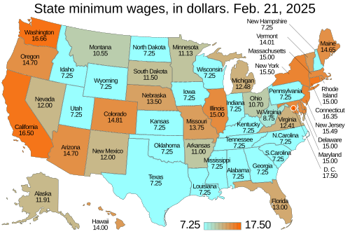

6 Wages & Hours
6.1 Liberty of Contract
Lochner v. New York, 198 U.S. 45 (U.S. 1905)
Mr. Justice Peckham, after making the foregoing statement of the facts, delivered the opinion of the court.
The indictment, it will be seen, charges that the plaintiff in error violated the one hundred and tenth section of article 8, chapter 415, of the Laws of 1897, known as the labor law of the State of New York, in that he wrongfully and unlawfully required and permitted an employe working for him to work more than sixty hours in one week. There is nothing in any of the opinions delivered in this case, either in the Supreme Court or the Court of Appeals of the State, which construes the section, in using the word “required,” as referring to any physical force being used to obtain the labor of an employe. It is assumed that the word means nothing more than the requirement arising from voluntary contract for such labor in excess of the number of hours specified in the statute. There is no pretense in any of the opinions that the statute was intended to meet a case of involuntary labor in any form. All the opinions assume that there is no real distinction, so far as this question is concerned, between the words “required” and “permitted.” The mandate of the statute that “no employe shall be required or permitted to work,” is the substantial equivalent of an enactment that “no employe shall contract or agree to work,” more than ten hours per day, and as there is no provision for special emergencies the statute is mandatory in all cases. It is not an act merely fixing the number of hours which shall constitute a legal day’s work, but an absolute prohibition upon the employer, permitting, under any circumstances, more than ten hours work to be done in his establishment. The employe may desire to earn the extra money, which would arise from his working more than the prescribed time, but this statute forbids the employer from permitting the employe to earn it.
The statute necessarily interferes with the right of contract between the employer and employes, concerning the number of hours in which the latter may labor in the bakery of the employer. The general right to make a contract in relation to his business is part of the liberty of the individual protected by the Fourteenth Amendment of the Federal Constitution. Under that provision no State can deprive any person of life, liberty or property without due process of law. The right to purchase or to sell labor is part of the liberty protected by this amendment, unless there are circumstances which exclude the right. There are, however, certain powers, existing in the sovereignty of each State in the Union, somewhat vaguely termed police powers, the exact description and limitation of which have not been attempted by the courts. Those powers, broadly stated and without, at present, any attempt at a more specific limitation, relate to the safety, health, morals and general welfare of the public. Both property and liberty are held on such reasonable conditions as may be imposed by the governing power of the State in the exercise of those powers, and with such conditions the Fourteenth Amendment was not designed to interfere.
The State, therefore, has power to prevent the individual from making certain kinds of contracts, and in regard to them the Federal Constitution offers no protection. If the contract be one which the State, in the legitimate exercise of its police power, has the right to prohibit, it is not prevented from prohibiting it by the Fourteenth Amendment. Contracts in violation of a statute, either of the Federal or state government, or a contract to let one’s property for immoral purposes, or to do any other unlawful act, could obtain no protection from the Federal Constitution, as coming under the liberty of person or of free contract. Therefore, when the State, by its legislature, in the assumed exercise of its police powers, has passed an act which seriously limits the right to labor or the right of contract in regard to their means of livelihood between persons who are sui juris (both employer and employe), it becomes of great importance to determine which shall prevail—the right of the individual to labor for such time as he may choose, or the right of the State to prevent the individual from laboring or from entering into any contract to labor, beyond a certain time prescribed by the State.
This court has recognized the existence and upheld the exercise of the police powers of the States in many cases which might fairly be considered as border ones, and it has, in the course of its determination of questions regarding the asserted invalidity of such statutes, on the ground of their violation of the rights secured by the Federal Constitution, been guided by rules of a very liberal nature, the application of which has resulted, in numerous instances, in upholding the validity of state statutes thus assailed. Among the later cases where the state law has been upheld by this court is that of Holden v. Hardy. A provision in the act of the legislature of Utah was there under consideration, the act limiting the employment of workmen in all underground mines or workings, to eight hours per day, “except in cases of emergency, where life or property is in imminent danger.” It also limited the hours of labor in smelting and other institutions for the reduction or refining of ores or metals to eight hours per day, except in like cases of emergency. The act was held to be a valid exercise of the police powers of the State. A review of many of the cases on the subject, decided by this and other courts, is given in the opinion. It was held that the kind of employment, mining, smelting, etc., and the character of the employes in such kinds of labor, were such as to make it reasonable and proper for the State to interfere to prevent the employes from being constrained by the rules laid down by the proprietors in regard to labor.
It will be observed that, even with regard to that class of labor, the Utah statute provided for cases of emergency wherein the provisions of the statute would not apply. The statute now before this court has no emergency clause in it, and, if the statute is valid, there are no circumstances and no emergencies under which the slightest violation of the provisions of the act would be innocent.
It must, of course, be conceded that there is a limit to the valid exercise of the police power by the State. There is no dispute concerning this general proposition. Otherwise the Fourteenth Amendment would have no efficacy and the legislatures of the States would have unbounded power, and it would be enough to say that any piece of legislation was enacted to conserve the morals, the health or the safety of the people; such legislation would be valid, no matter how absolutely without foundation the claim might be. The claim of the police power would be a mere pretext—become another and delusive name for the supreme sovereignty of the State to be exercised free from constitutional restraint. This is not contended for. In every case that comes before this court, therefore, where legislation of this character is concerned and where the protection of the Federal Constitution is sought, the question necessarily arises: Is this a fair, reasonable and appropriate exercise of the police power of the State, or is it an unreasonable, unnecessary and arbitrary interference with the right of the individual to his personal liberty or to enter into those contracts in relation to labor which may seem to him appropriate or necessary for the support of himself and his family? Of course the liberty of contract relating to labor includes both parties to it. The one has as much right to purchase as the other to sell labor.
This is not a question of substituting the judgment of the court for that of the legislature. If the act be within the power of the State it is valid, although the judgment of the court might be totally opposed to the enactment of such a law. But the question would still remain: Is it within the police power of the State? and that question must be answered by the court.
The question whether this act is valid as a labor law, pure and simple, may be dismissed in a few words. There is no reasonable ground for interfering with the liberty of person or the right of free contract, by determining the hours of labor, in the occupation of a baker. There is no contention that bakers as a class are not equal in intelligence and capacity to men in other trades or manual occupations, or that they are not able to assert their rights and care for themselves without the protecting arm of the State, interfering with their independence of judgment and of action. They are in no sense wards of the State. Viewed in the light of a purely labor law, with no reference whatever to the question of health, we think that a law like the one before us involves neither the safety, the morals nor the welfare of the public, and that the interest of the public is not in the slightest degree affected by such an act. The law must be upheld, if at all, as a law pertaining to the health of the individual engaged in the occupation of a baker. It does not affect any other portion of the public than those who are engaged in that occupation. Clean and wholesome bread does not depend upon whether the baker works but ten hours per day or only sixty hours a week. The limitation of the hours of labor does not come within the police power on that ground.
It is a question of which of two powers or rights shall prevail—the power of the State to legislate or the right of the individual to liberty of person and freedom of contract. The mere assertion that the subject relates though but in a remote degree to the public health does not necessarily render the enactment valid. The act must have a more direct relation, as a means to an end, and the end itself must be appropriate and legitimate, before an act can be held to be valid which interferes with the general right of an individual to be free in his person and in his power to contract in relation to his own labor.
We think the limit of the police power has been reached and passed in this case. There is, in our judgment, no reasonable foundation for holding this to be necessary or appropriate as a health law to safeguard the public health or the health of the individuals who are following the trade of a baker. If this statute be valid, and if, therefore, a proper case is made out in which to deny the right of an individual, sui juris, as employer or employe, to make contracts for the labor of the latter under the protection of the provisions of the Federal Constitution, there would seem to be no length to which legislation of this nature might not go.
We think that there can be no fair doubt that the trade of a baker, in and of itself, is not an unhealthy one to that degree which would authorize the legislature to interfere with the right to labor, and with the right of free contract on the part of the individual, either as employer or employe. In looking through statistics regarding all trades and occupations, it may be true that the trade of a baker does not appear to be as healthy as some other trades, and is also vastly more healthy than still others. To the common understanding the trade of a baker has never been regarded as an unhealthy one. Very likely physicians would not recommend the exercise of that or of any other trade as a remedy for ill health. Some occupations are more healthy than others, but we think there are none which might not come under the power of the legislature to supervise and control the hours of working therein, if the mere fact that the occupation is not absolutely and perfectly healthy is to confer that right upon the legislative department of the Government. It might be safely affirmed that almost all occupations more or less affect the health. There must be more than the mere fact of the possible existence of some small amount of unhealthiness to warrant legislative interference with liberty. It is unfortunately true that labor, even in any department, may possibly carry with it the seeds of unhealthiness. But are we all, on that account, at the mercy of legislative majorities? A printer, a tinsmith, a locksmith, a carpenter, a cabinetmaker, a dry goods clerk, a bank’s, a lawyer’s or a physician’s clerk, or a clerk in almost any kind of business, would all come under the power of the legislature, on this assumption. No trade, no occupation, no mode of earning one’s living, could escape this all-pervading power, and the acts of the legislature in limiting the hours of labor in all employments would be valid, although such limitation might seriously cripple the ability of the laborer to support himself and his family. In our large cities there are many buildings into which the sun penetrates for but a short time in each day, and these buildings are occupied by people carrying on the business of bankers, brokers, lawyers, real estate, and many other kinds of business, aided by many clerks, messengers, and other employes. Upon the assumption of the validity of this act under review, it is not possible to say that an act, prohibiting lawyers’ or bank clerks, or others, from contracting to labor for their employers more than eight hours a day, would be invalid. It might be said that it is unhealthy to work more than that number of hours in an apartment lighted by artificial light during the working hours of the day; that the occupation of the bank clerk, the lawyer’s clerk, the real estate clerk, or the broker’s clerk in such offices is therefore unhealthy, and the legislature in its paternal wisdom must, therefore, have the right to legislate on the subject of and to limit the hours for such labor, and if it exercises that power and its validity be questioned, it is sufficient to say, it has reference to the public health; it has reference to the health of the employes condemned to labor day after day in buildings where the sun never shines; it is a health law, and therefore it is valid, and cannot be questioned by the courts.
It is also urged, pursuing the same line of argument, that it is to the interest of the State that its population should be strong and robust, and therefore any legislation which may be said to tend to make people healthy must be valid as health laws, enacted under the police power. If this be a valid argument and a justification for this kind of legislation, it follows that the protection of the Federal Constitution from undue interference with liberty of person and freedom of contract is visionary, wherever the law is sought to be justified as a valid exercise of the police power. Scarcely any law but might find shelter under such assumptions, and conduct, properly so called, as well as contract, would come under the restrictive sway of the legislature. Not only the hours of employes, but the hours of employers, could be regulated, and doctors, lawyers, scientists, all professional men, as well as athletes and artisans, could be forbidden to fatigue their brains and bodies by prolonged hours of exercise, lest the fighting strength of the State be impaired. We mention these extreme cases because the contention is extreme. We do not believe in the soundness of the views which uphold this law. On the contrary, we think that such a law as this, although passed in the assumed exercise of the police power, and as relating to the public health, or the health of the employes named, is not within that power, and is invalid. The act is not, within any fair meaning of the term, a health law, but is an illegal interference with the rights of individuals, both employers and employes, to make contracts regarding labor upon such terms as they may think best, or which they may agree upon with the other parties to such contracts. Statutes of the nature of that under review, limiting the hours in which grown and intelligent men may labor to earn their living, are mere meddlesome interferences with the rights of the individual, and they are not saved from condemnation by the claim that they are passed in the exercise of the police power and upon the subject of the health of the individual whose rights are interfered with, unless there be some fair ground, reasonable in and of itself, to say that there is material danger to the public health or to the health of the employes, if the hours of labor are not curtailed. If this be not clearly the case the individuals, whose rights are thus made the subject of legislative interference, are under the protection of the Federal Constitution regarding their liberty of contract as well as of person; and the legislature of the State has no power to limit their right as proposed in this statute. All that it could properly do has been done by it with regard to the conduct of bakeries, as provided for in the other sections of the act, above set forth. These several sections provide for the inspection of the premises where the bakery is carried on, with regard to furnishing proper wash-rooms and water-closets, apart from the bakeroom, also with regard to providing proper drainage, plumbing and painting; the sections, in addition, provide for the height of the ceiling, the cementing or tiling of floors, where necessary in the opinion of the factory inspector, and for other things of that nature; alterations are also provided for and are to be made where necessary in the opinion of the inspector, in order to comply with the provisions of the statute. These various sections may be wise and valid regulations, and they certainly go to the full extent of providing for the cleanliness and the healthiness, so far as possible, of the quarters in which bakeries are to be conducted. Adding to all these requirements, a prohibition to enter into any contract of labor in a bakery for more than a certain number of hours a week, is, in our judgment, so wholly beside the matter of a proper, reasonable and fair provision, as to run counter to that liberty of person and of free contract provided for in the Federal Constitution.
It was further urged on the argument that restricting the hours of labor in the case of bakers was valid because it tended to cleanliness on the part of the workers, as a man was more apt to be cleanly when not overworked, and if cleanly then his “output” was also more likely to be so. What has already been said applies with equal force to this contention. We do not admit the reasoning to be sufficient to justify the claimed right of such interference. The State in that case would assume the position of a supervisor, or pater familias, over every act of the individual, and its right of governmental interference with his hours of labor, his hours of exercise, the character thereof, and the extent to which it shall be carried would be recognized and upheld. In our judgment it is not possible in fact to discover the connection between the number of hours a baker may work in the bakery and the healthful quality of the bread made by the workman. The connection, if any exists, is too shadowy and thin to build any argument for the interference of the legislature. If the man works ten hours a day it is all right, but if ten and a half or eleven his health is in danger and his bread may be unhealthful, and, therefore, he shall not be permitted to do it. This, we think, is unreasonable and entirely arbitrary. When assertions such as we have adverted to become necessary in order to give, if possible, a plausible foundation for the contention that the law is a “health law,” it gives rise to at least a suspicion that there was some other motive dominating the legislature than the purpose to subserve the public health or welfare.
This interference on the part of the legislatures of the several States with the ordinary trades and occupations of the people seems to be on the increase.
It is impossible for us to shut our eyes to the fact that many of the laws of this character, while passed under what is claimed to be the police power for the purpose of protecting the public health or welfare, are, in reality, passed from other motives. We are justified in saying so when, from the character of the law and the subject upon which it legislates, it is apparent that the public health or welfare bears but the most remote relation to the law. The purpose of a statute must be determined from the natural and legal effect of the language employed; and whether it is or is not repugnant to the Constitution of the United States must be determined from the natural effect of such statutes when put into operation, and not from their proclaimed purpose.
It is manifest to us that the limitation of the hours of labor as provided for in this section of the statute under which the indictment was found, and the plaintiff in error convicted, has no such direct relation to and no such substantial effect upon the health of the employe, as to justify us in regarding the section as really a health law. It seems to us that the real object and purpose were simply to regulate the hours of labor between the master and his employes (all being men, sui juris), in a private business, not dangerous in any degree to morals or in any real and substantial degree, to the health of the employes. Under such circumstances the freedom of master and employe to contract with each other in relation to their employment, and in defining the same, cannot be prohibited or interfered with, without violating the Federal Constitution.
Mr. Justice Holmes, dissenting.
This case is decided upon an economic theory which a large part of the country does not entertain. If it were a question whether I agreed with that theory, I should desire to study it further and long before making up my mind. But I do not conceive that to be my duty, because I strongly believe that my agreement or disagreement has nothing to do with the right of a majority to embody their opinions in law. It is settled by various decisions of this court that state constitutions and state laws may regulate life in many ways which we as legislators might think as injudicious or if you like as tyrannical as this, and which equally with this interfere with the liberty to contract. Sunday laws and usury laws are ancient examples. A more modern one is the prohibition of lotteries. The liberty of the citizen to do as he likes so long as he does not interfere with the liberty of others to do the same, which has been a shibboleth for some well-known writers, is interfered with by school laws, by the Post Office, by every state or municipal institution which takes his money for purposes thought desirable, whether he likes it or not. The Fourteenth Amendment does not enact Mr. Herbert Spencer’s Social Statics. The other day we sustained the Massachusetts vaccination law. United States and state statutes and decisions cutting down the liberty to contract by way of combination are familiar to this court. Two years ago we upheld the prohibition of sales of stock on margins or for future delivery in the constitution of California. The decision sustaining an eight hour law for miners is still recent. Some of these laws embody convictions or prejudices which judges are likely to share. Some may not. But a constitution is not intended to embody a particular economic theory, whether of paternalism and the organic relation of the citizen to the State or of laissez faire. It is made for people of fundamentally differing views, and the accident of our finding certain opinions natural and familiar or novel and even shocking ought not to conclude our judgment upon the question whether statutes embodying them conflict with the Constitution of the United States.
General propositions do not decide concrete cases. The decision will depend on a judgment or intuition more subtle than any articulate major premise. But I think that the proposition just stated, if it is accepted, will carry us far toward the end. Every opinion tends to become a law. I think that the word liberty in the Fourteenth Amendment is perverted when it is held to prevent the natural outcome of a dominant opinion, unless it can be said that a rational and fair man necessarily would admit that the statute proposed would infringe fundamental principles as they have been understood by the traditions of our people and our law. It does not need research to show that no such sweeping condemnation can be passed upon the statute before us. A reasonable man might think it a proper measure on the score of health. Men whom I certainly could not pronounce unreasonable would uphold it as a first installment of a general regulation of the hours of work. Whether in the latter aspect it would be open to the charge of inequality I think it unnecessary to discuss.
West Coast Hotel Co. v. Parrish, 300 U.S. 379 (U.S. 1937)
This case presents the question of the constitutional validity of the minimum wage law of the State of Washington.
The Act, entitled “Minimum Wages for Women,” authorizes the fixing of minimum wages for women and minors. It provides:
SECTION 1. The welfare of the State of Washington demands that women and minors be protected from conditions of labor which have a pernicious effect on their health and morals. The State of Washington, therefore, exercising herein its police and sovereign power declares that inadequate wages and unsanitary conditions of labor exert such pernicious effect.
SEC. 2. It shall be unlawful to employ women or minors in any industry or occupation within the State of Washington under conditions of labor detrimental to their health or morals; and it shall be unlawful to employ women workers in any industry within the State of Washington at wages which are not adequate for their maintenance.
SEC. 3. There is hereby created a commission to be known as the ‘Industrial Welfare Commission’ for the State of Washington, to establish such standards of wages and conditions of labor for women and minors employed within the State of Washington, as shall be held hereunder to be reasonable and not detrimental to health and morals, and which shall be sufficient for the decent maintenance of women.
Further provisions required the Commission to ascertain the wages and conditions of labor of women and minors within the State. Public hearings were to be held. If after investigation the Commission found that in any occupation, trade or industry the wages paid to women were “inadequate to supply them necessary cost of living and to maintain the workers in health,” the Commission was empowered to call a conference of representatives of employers and employees together with disinterested persons representing the public. The conference was to recommend to the Commission, on its request, an estimate of a minimum wage adequate for the purpose above stated, and on the approval of such a recommendation it became the duty of the Commission to issue an obligatory order fixing minimum wages. Any such order might be reopened and the question reconsidered with the aid of the former conference or a new one. Special licenses were authorized for the employment of women who were “physically defective or crippled by age or otherwise,” and also for apprentices, at less than the prescribed minimum wage.
The appellant conducts a hotel. The appellee Elsie Parrish was employed as a chambermaid and (with her husband) brought this suit to recover the difference between the wages paid her and the minimum wage fixed pursuant to the state law. The minimum wage was $14.50 per week of 48 hours. The appellant challenged the act as repugnant to the due process clause of the Fourteenth Amendment of the Constitution of the United States. The Supreme Court of the State, reversing the trial court, sustained the statute and directed judgment for the plaintiffs. The case is here on appeal.
The appellant relies upon the decision of this Court in Adkins v. Children’s Hospital, which held invalid the District of Columbia Minimum Wage Act, which was attacked under the due process clause of the Fifth Amendment. On the argument at bar, counsel for the appellees attempted to distinguish the Adkins case upon the ground that the appellee was employed in a hotel and that the business of an innkeeper was affected with a public interest. That effort at distinction is obviously futile, as it appears that in one of the cases ruled by the Adkins opinion the employee was a woman employed as an elevator operator in a hotel.
The recent case of Morehead v. New York ex rel. Tipaldo, came here on certiorari to the New York court, which had held the New York minimum wage act for women to be invalid. A minority of this Court thought that the New York statute was distinguishable in a material feature from that involved in the Adkins case, and that for that and other reasons the New York statute should be sustained. But the Court of Appeals of New York had said that it found no material difference between the two statutes, and this Court held that the “meaning of the statute” as fixed by the decision of the state court “must be accepted here as if the meaning had been specifically expressed in the enactment.” That view led to the affirmance by this Court of the judgment in the Morehead case, as the Court considered that the only question before it was whether the Adkins case was distinguishable and that reconsideration of that decision had not been sought.
We think that the question which was not deemed to be open in the Morehead case is open and is necessarily presented here. The Supreme Court of Washington has upheld the minimum wage statute of that State. It has decided that the statute is a reasonable exercise of the police power of the State. In reaching that conclusion the state court has invoked principles long established by this Court in the application of the Fourteenth Amendment. The state court has refused to regard the decision in the Adkins case as determinative and has pointed to our decisions both before and since that case as justifying its position. We are of the opinion that this ruling of the state court demands on our part a reexamination of the Adkins case. The importance of the question, in which many States having similar laws are concerned, the close division by which the decision in the Adkins case was reached, and the economic conditions which have supervened, and in the light of which the reasonableness of the exercise of the protective power of the State must be considered, make it not only appropriate, but we think imperative, that in deciding the present case the subject should receive fresh consideration.
The principle which must control our decision is not in doubt. The constitutional provision invoked is the due process clause of the Fourteenth Amendment governing the States, as the due process clause invoked in the Adkins case governed Congress. In each case the violation alleged by those attacking minimum wage regulation for women is deprivation of freedom of contract. What is this freedom? The Constitution does not speak of freedom of contract. It speaks of liberty and prohibits the deprivation of liberty without due process of law. In prohibiting that deprivation the Constitution does not recognize an absolute and uncontrollable liberty. Liberty in each of its phases has its history and connotation. But the liberty safeguarded is liberty in a social organization which requires the protection of law against the evils which menace the health, safety, morals and welfare of the people. Liberty under the Constitution is thus necessarily subject to the restraints of due process, and regulation which is reasonable in relation to its subject and is adopted in the interests of the community is due process.
This essential limitation of liberty in general governs freedom of contract in particular. More than twenty-five years ago we set forth the applicable principle in these words, after referring to the cases where the liberty guaranteed by the Fourteenth Amendment had been broadly described:
But it was recognized in the cases cited, as in many others, that freedom of contract is a qualified and not an absolute right. There is no absolute freedom to do as one wills or to contract as one chooses. The guaranty of liberty does not withdraw from legislative supervision that wide department of activity which consists of the making of contracts, or deny to government the power to provide restrictive safeguards. Liberty implies the absence of arbitrary restraint, not immunity from reasonable regulations and prohibitions imposed in the interests of the community.
This power under the Constitution to restrict freedom of contract has had many illustrations. That it may be exercised in the public interest with respect to contracts between employer and employee is undeniable. Thus statutes have been sustained limiting employment in underground mines and smelters to eight hours a day; in requiring redemption in cash of store orders or other evidences of indebtedness issued in the payment of wages; in forbidding the payment of seamen’s wages in advance; in making it unlawful to contract to pay miners employed at quantity rates upon the basis of screened coal instead of the weight of the coal as originally produced in the mine; in prohibiting contracts limiting liability for injuries to employees; in limiting hours of work of employees in manufacturing establishments; and in maintaining workmen’s compensation laws. In dealing with the relation of employer and employed, the legislature has necessarily a wide field of discretion in order that there may be suitable protection of health and safety, and that peace and good order may be promoted through regulations designed to insure wholesome conditions of work and freedom from oppression.
The point that has been strongly stressed that adult employees should be deemed competent to make their own contracts was decisively met nearly forty years ago in Holden v.Hardy, where we pointed out the inequality in the footing of the parties. We said:
The legislature has also recognized the fact, which the experience of legislators in many States has corroborated, that the proprietors of these establishments and their operatives do not stand upon an equality, and that their interests are, to a certain extent, conflicting. The former naturally desire to obtain as much labor as possible from their employes, while the latter are often induced by the fear of discharge to conform to regulations which their judgment, fairly exercised, would pronounce to be detrimental to their health or strength. In other words, the proprietors lay down the rules and the laborers are practically constrained to obey them. In such cases self-interest is often an unsafe guide, and the legislature may properly interpose its authority.
And we added that the fact “that both parties are of full age and competent to contract does not necessarily deprive the State of the power to interfere where the parties do not stand upon an equality, or where the public health demands that one party to the contract shall be protected against himself.” “The State still retains an interest in his welfare, however reckless he may be. The whole is no greater than the sum of all the parts, and when the individual health, safety and welfare are sacrificed or neglected, the State must suffer.”
It is manifest that this established principle is peculiarly applicable in relation to the employment of women in whose protection the State has a special interest. That phase of the subject received elaborate consideration in Muller v. Oregon (1908), where the constitutional authority of the State to limit the working hours of women was sustained. We emphasized the consideration that “woman’s physical structure and the performance of maternal functions place her at a disadvantage in the struggle for subsistence” and that her physical well being “becomes an object of public interest and care in order to preserve the strength and vigor of the race.” We emphasized the need of protecting women against oppression despite her possession of contractual rights. We said that “though limitations upon personal and contractual rights may be removed by legislation, there is that in her disposition and habits of life which will operate against a full assertion of those rights. She will still be where some legislation to protect her seems necessary to secure a real equality of right.” Hence she was “properly placed in a class by herself, and legislation designed for her protection may be sustained even when like legislation is not necessary for men and could not be sustained.” We concluded that the limitations which the statute there in question “placed upon her contractual powers, upon her right to agree with her employer as to the time she shall labor” were “not imposed solely for her benefit, but also largely for the benefit of all.” Again, in Quong Wing v. Kirkendall, in referring to a differentiation with respect to the employment of women, we said that the Fourteenth Amendment did not interfere with state power by creating a “fictitious equality.” We referred to recognized classifications on the basis of sex with regard to hours of work and in other matters, and we observed that the particular points at which that difference shall be enforced by legislation were largely in the power of the State. In later rulings this Court sustained the regulation of hours of work of women employees in Riley v. Massachusetts, (factories), Miller v. Wilson, (hotels), and Bosley v. McLaughlin, (hospitals).
This array of precedents and the principles they applied were thought by the dissenting Justices in the Adkins case to demand that the minimum wage statute be sustained. The validity of the distinction made by the Court between a minimum wage and a maximum of hours in limiting liberty of contract was especially challenged. That challenge persists and is without any satisfactory answer. As Chief Justice Taft observed: “In absolute freedom of contract the one term is as important as the other, for both enter equally into the consideration given and received, a restriction as to the one is not greater in essence than the other and is of the same kind. One is the multiplier and the other the multiplicand.” And Mr. Justice Holmes, while recognizing that “the distinctions of the law are distinctions of degree,” could “perceive no difference in the kind or degree of interference with liberty, the only matter with which we have any concern, between the one case and the other. The bargain is equally affected whichever half you regulate.”
The minimum wage to be paid under the Washington statute is fixed after full consideration by representatives of employers, employees and the public. It may be assumed that the minimum wage is fixed in consideration of the service that are performed in the particular occupations under normal conditions. Provision is made for special licenses at less wages in the case of women who are incapable of full service. The statement of Mr. Justice Holmes in the Adkins case is pertinent: “This statute does not compel anybody to pay anything. It simply forbids employment at rates below those fixed as the minimum requirement of health and right living. It is safe to assume that women will not be employed at even the lowest wages allowed unless they earn them, or unless the employer’s business can sustain the burden. In short the law in its character and operation is like hundreds of so-called police laws that have been upheld.” And Chief Justice Taft forcibly pointed out the consideration which is basic in a statute of this character: “Legislatures which adopt a requirement of maximum hours or minimum wages may be presumed to believe that when sweating employers are prevented from paying unduly low wages by positive law they will continue their business, abating that part of their profits, which were wrung from the necessities of their employees, and will concede the better terms required by the law; and that while in individual cases hardship may result, the restriction will enure to the benefit of the general class of employees in whose interest the law is passed and so to that of the community at large.”
What can be closer to the public interest than the health of women and their protection from unscrupulous and overreaching employers? And if the protection of women is a legitimate end of the exercise of state power, how can it be said that the requirement of the payment of a minimum wage fairly fixed in order to meet the very necessities of existence is not an admissible means to that end? The legislature of the State was clearly entitled to consider the situation of women in employment, the fact that they are in the class receiving the least pay, that their bargaining power is relatively weak, and that they are the ready victims of those who would take advantage of their necessitous circumstances. The legislature was entitled to adopt measures to reduce the evils of the “sweating system,” the exploiting of workers at wages so low as to be insufficient to meet the bare cost of living, thus making their very helplessness the occasion of a most injurious competition. The legislature had the right to consider that its minimum wage requirements would be an important aid in carrying out its policy of protection. The adoption of similar requirements by many States evidences a deep-seated conviction both as to the presence of the evil and as to the means adapted to check it. Legislative response to that conviction cannot be regarded as arbitrary or capricious, and that is all we have to decide. Even if the wisdom of the policy be regarded as debatable and its effects uncertain, still the legislature is entitled to its judgment.
There is an additional and compelling consideration which recent economic experience has brought into a strong light. The exploitation of a class of workers who are in an unequal position with respect to bargaining power and are thus relatively defenceless against the denial of a living wage is not only detrimental to their health and well being but casts a direct burden for their support upon the community. What these workers lose in wages the taxpayers are called upon to pay. The bare cost of living must be met. We may take judicial notice of the unparalleled demands for relief which arose during the recent period of depression and still continue to an alarming extent despite the degree of economic recovery which has been achieved. It is unnecessary to cite official statistics to establish what is of common knowledge through the length and breadth of the land. While in the instant case no factual brief has been presented, there is no reason to doubt that the State of Washington has encountered the same social problem that is present elsewhere. The community is not bound to provide what is in effect a subsidy for unconscionable employers. The community may direct its law-making power to correct the abuse which springs from their selfish disregard of the public interest. The argument that the legislation in question constitutes an arbitrary discrimination, because it does not extend to men, is unavailing. This Court has frequently held that the legislative authority, acting within its proper field, is not bound to extend its regulation to all cases which it might possibly reach. The legislature “is free to recognize degrees of harm and it may confine its restrictions to those classes of cases where the need is deemed to be dearest.” If “the law presumably hits the evil where it is most felt, it is not to be overthrown because there are other instances to which it might have been applied.” There is no “doctrine requirement” that the legislation should be couched in all embracing terms. This familiar principle has repeatedly been applied to legislation which singles out women, and particular classes of women, in the exercise of the State’s protective power. Their relative need in the presence of the evil, no less than the existence of the evil itself, is a matter for the legislative judgment.
Our conclusion is that the case of Adkins v. Children’s Hospital should be, and it is, overruled.
6.2 Statutory Regulation
6.2.1 Federal Law
Fair Labor Standards Act, 29 U.S.C. § 201 et seq.
§ 202. Congressional finding and declaration of policy
- (a) The Congress finds that the existence, in industries engaged in commerce or in the production of goods for commerce, of labor conditions detrimental to the maintenance of the minimum standard of living necessary for health, efficiency, and general well-being of workers (1) causes commerce and the channels and instrumentalities of commerce to be used to spread and perpetuate such labor conditions among the workers of the several States; (2) burdens commerce and the free flow of goods in commerce; (3) constitutes an unfair method of competition in commerce; (4) leads to labor disputes burdening and obstructing commerce and the free flow of goods in commerce; and (5) interferes with the orderly and fair marketing of goods in commerce. That Congress further finds that the employment of persons in domestic service in households affects commerce.
- (b) It is declared to be the policy of this chapter, through the exercise by Congress of its power to regulate commerce among the several States and with foreign nations, to correct and as rapidly as practicable to eliminate the conditions above referred to in such industries without substantially curtailing employment or earning power.
§ 203. Definitions
- As used in this chapter—
- (a) “Person” means an individual, partnership, association, corporation, business trust, legal representative, or any organized group of persons.
- (d) “Employer” includes any person acting directly or indirectly in the interest of an employer in relation to an employee and includes a public agency, but does not include any labor organization (other than when acting as an employer) or anyone acting in the capacity of officer or agent of such labor organization.
- (e) (1) Except as provided in paragraphs (2), (3), and (4), the term “employee” means any individual employed by an employer.
- (g) “Employ” includes to suffer or permit to work.
- (m) (1) “Wage” paid to any employee includes the reasonable cost, as determined by the Administrator, to the employer of furnishing such employee with board, lodging, or other facilities, if such board, lodging or other facilities are customarily furnished by such employer to his employees: Provided, That the cost of board, lodging, or other facilities shall not be included as a part of the wage paid to any employee to the extent it is excluded therefrom under the terms of a bona fide collective-bargaining agreement applicable to the particular employee: Provided further, That the Secretary is authorized to determine the fair value of such board, lodging, or other facilities for defined classes of employees and in defined areas, based on average cost to the employer or to groups of employers similarly situated, or average value to groups of employees, or other appropriate measures of fair value. Such evaluations, where applicable and pertinent, shall be used in lieu of actual measure of cost in determining the wage paid to any employee.
- (2)
- (a) In determining the wage an employer is required to pay a tipped employee, the amount paid such employee by the employee’s employer shall be an amount equal to—
- (i) the cash wage paid such employee which for purposes of such determination shall be not less than the cash wage required to be paid such an employee on August 20, 1996; and
- (ii) an additional amount on account of the tips received by such employee which amount is equal to the difference between the wage specified in clause (i) and the wage in effect under section 206(a)(1) of this title.
- The additional amount on account of tips may not exceed the value of the tips actually received by an employee. The preceding 2 sentences shall not apply with respect to any tipped employee unless such employee has been informed by the employer of the provisions of this subsection, and all tips received by such employee have been retained by the employee, except that this subsection shall not be construed to prohibit the pooling of tips among employees who customarily and regularly receive tips.
- (b) An employer may not keep tips received by its employees for any purposes, including allowing managers or supervisors to keep any portion of employees’ tips, regardless of whether or not the employer takes a tip credit.
- (a) In determining the wage an employer is required to pay a tipped employee, the amount paid such employee by the employee’s employer shall be an amount equal to—
- (2)
- (o) Hours Worked.—In determining for the purposes of sections 206 and 207 of this title the hours for which an employee is employed, there shall be excluded any time spent in changing clothes or washing at the beginning or end of each workday which was excluded from measured working time during the week involved by the express terms of or by custom or practice under a bona fide collective-bargaining agreement applicable to the particular employee.
§ 206. Minimum wage
- (a) Employees engaged in commerce; home workers in Puerto Rico and Virgin Islands; employees in American Samoa; seamen on American vessels; agricultural employees
- Every employer shall pay to each of his employees who in any workweek is engaged in commerce or in the production of goods for commerce, or is employed in an enterprise engaged in commerce or in the production of goods for commerce, wages at the following rates:
- (1) except as otherwise provided in this section, not less than—
- (a) $5.85 an hour, beginning on the 60th day after May 25, 2007;
- (b) $6.55 an hour, beginning 12 months after that 60th day; and
- (c) $7.25 an hour, beginning 24 months after that 60th day;
- (1) except as otherwise provided in this section, not less than—
- (d) Prohibition of sex discrimination
- (1) No employer having employees subject to any provisions of this section shall discriminate, within any establishment in which such employees are employed, between employees on the basis of sex by paying wages to employees in such establishment at a rate less than the rate at which he pays wages to employees of the opposite sex in such establishment for equal work on jobs the performance of which requires equal skill, effort, and responsibility, and which are performed under similar working conditions, except where such payment is made pursuant to (i) a seniority system; (ii) a merit system; (iii) a system which measures earnings by quantity or quality of production; or (iv) a differential based on any other factor other than sex: Provided, That an employer who is paying a wage rate differential in violation of this subsection shall not, in order to comply with the provisions of this subsection, reduce the wage rate of any employee.
- (2) No labor organization, or its agents, representing employees of an employer having employees subject to any provisions of this section shall cause or attempt to cause such an employer to discriminate against an employee in violation of paragraph (1) of this subsection.
- (3) For purposes of administration and enforcement, any amounts owing to any employee which have been withheld in violation of this subsection shall be deemed to be unpaid minimum wages or unpaid overtime compensation under this chapter.
- (4) As used in this subsection, the term “labor organization” means any organization of any kind, or any agency or employee representation committee or plan, in which employees participate and which exists for the purpose, in whole or in part, of dealing with employers concerning grievances, labor disputes, wages, rates of pay, hours of employment, or conditions of work.
§ 207. Maximum hours
- (a) Employees engaged in interstate commerce; additional applicability to employees pursuant to subsequent amendatory provisions
- (1) Except as otherwise provided in this section, no employer shall employ any of his employees who in any workweek is engaged in commerce or in the production of goods for commerce, or is employed in an enterprise engaged in commerce or in the production of goods for commerce, for a workweek longer than forty hours unless such employee receives compensation for his employment in excess of the hours above specified at a rate not less than one and one-half times the regular rate at which he is employed.
- (e) “Regular rate” defined
- As used in this section the “regular rate” at which an employee is employed shall be deemed to include all remuneration for employment paid to, or on behalf of, the employee, but shall not be deemed to include— [ … ]
- (f) Employment necessitating irregular hours of work
- No employer shall be deemed to have violated subsection (a) by employing any employee for a workweek in excess of the maximum workweek applicable to such employee under subsection (a) if such employee is employed pursuant to a bona fide individual contract, or pursuant to an agreement made as a result of collective bargaining by representatives of employees, if the duties of such employee necessitate irregular hours of work, and the contract or agreement (1) specifies a regular rate of pay of not less than the minimum hourly rate provided in subsection (a) or (b) of section 206 of this title (whichever may be applicable) and compensation at not less than one and one-half times such rate for all hours worked in excess of such maximum workweek, and (2) provides a weekly guaranty of pay for not more than sixty hours based on the rates so specified.
- (g) Employment at piece rates
- No employer shall be deemed to have violated subsection (a) by employing any employee for a workweek in excess of the maximum workweek applicable to such employee under such subsection if, pursuant to an agreement or understanding arrived at between the employer and the employee before performance of the work, the amount paid to the employee for the number of hours worked by him in such workweek in excess of the maximum workweek applicable to such employee under such subsection—
- (1) in the case of an employee employed at piece rates, is computed at piece rates not less than one and one-half times the bona fide piece rates applicable to the same work when performed during nonovertime hours; or
- (2) in the case of an employee performing two or more kinds of work for which different hourly or piece rates have been established, is computed at rates not less than one and one-half times such bona fide rates applicable to the same work when performed during nonovertime hours; or
- (3) is computed at a rate not less than one and one-half times the rate established by such agreement or understanding as the basic rate to be used in computing overtime compensation thereunder: Provided, That the rate so established shall be authorized by regulation by the Administrator as being substantially equivalent to the average hourly earnings of the employee, exclusive of overtime premiums, in the particular work over a representative period of time;
- and if (i) the employee’s average hourly earnings for the workweek exclusive of payments described in paragraphs (1) through (7) of subsection (e) are not less than the minimum hourly rate required by applicable law, and (ii) extra overtime compensation is properly computed and paid on other forms of additional pay required to be included in computing the regular rate.
- (r) Reasonable break time for nursing mothers
- 1) An employer shall provide—
- (a) a reasonable break time for an employee to express breast milk for her nursing child for 1 year after the child’s birth each time such employee has need to express the milk; and
- b) a place, other than a bathroom, that is shielded from view and free from intrusion from coworkers and the public, which may be used by an employee to express breast milk.
- 2) An employer shall not be required to compensate an employee receiving reasonable break time under paragraph (1) for any work time spent for such purpose.
- 3) An employer that employs less than 50 employees shall not be subject to the requirements of this subsection, if such requirements would impose an undue hardship by causing the employer significant difficulty or expense when considered in relation to the size, financial resources, nature, or structure of the employer’s business.
- 4) Nothing in this subsection shall preempt a State law that provides greater protections to employees than the protections provided for under this subsection.
- 1) An employer shall provide—
§ 213. Exemptions
- (a) Minimum wage and maximum hour requirements
- The provisions of sections 206 (except subsection (d) in the case of paragraph (1) of this subsection) and 207 of this title shall not apply with respect to—
- (1) any employee employed in a bona fide executive, administrative, or professional capacity (including any employee employed in the capacity of academic administrative personnel or teacher in elementary or secondary schools), or in the capacity of outside salesman [ … ]; or
- (3) any employee employed by an establishment which is an amusement or recreational establishment, organized camp, or religious or non-profit educational conference center, if (a) it does not operate for more than seven months in any calendar year, or (b) during the preceding calendar year, its average receipts for any six months of such year were not more than 331/3 per centum of its average receipts for the other six months of such year, except that the exemption from sections 206 and 207 of this title provided by this paragraph does not apply with respect to any employee of a private entity engaged in providing services or facilities (other than, in the case of the exemption from section 206 of this title, a private entity engaged in providing services and facilities directly related to skiing) in a national park or a national forest, or on land in the National Wildlife Refuge System, under a contract with the Secretary of the Interior or the Secretary of Agriculture; or
- (5) any employee employed in the catching, taking, propagating, harvesting, cultivating, or farming of any kind of fish, shellfish, crustacea, sponges, seaweeds, or other aquatic forms of animal and vegetable life, or in the first processing, canning or packing such marine products at sea as an incident to, or in conjunction with, such fishing operations, including the going to and returning from work and loading and unloading when performed by any such employee; or
- (6) any employee employed in agriculture (a) if such employee is employed by an employer who did not, during any calendar quarter during the preceding calendar year, use more than five hundred man-days of agricultural labor, (b) if such employee is the parent, spouse, child, or other member of his employer’s immediate family, (c) if such employee (i) is employed as a hand harvest laborer and is paid on a piece rate basis in an operation which has been, and is customarily and generally recognized as having been, paid on a piece rate basis in the region of employment, (ii) commutes daily from his permanent residence to the farm on which he is so employed, and (iii) has been employed in agriculture less than thirteen weeks during the preceding calendar year, (d) if such employee (other than an employee described in clause (c) of this subsection) (i) is sixteen years of age or under and is employed as a hand harvest laborer, is paid on a piece rate basis in an operation which has been, and is customarily and generally recognized as having been, paid on a piece rate basis in the region of employment, (ii) is employed on the same farm as his parent or person standing in the place of his parent, and (iii) is paid at the same piece rate as employees over age sixteen are paid on the same farm, or (e) if such employee is principally engaged in the range production of livestock; or
- (7) any employee to the extent that such employee is exempted by regulations, order, or certificate of the Secretary issued under section 214 of this title; or
- (8) any employee employed in connection with the publication of any weekly, semiweekly, or daily newspaper with a circulation of less than four thousand the major part of which circulation is within the county where published or counties contiguous thereto; or
- (10) any switchboard operator employed by an independently owned public telephone company which has not more than seven hundred and fifty stations; or
- (12) any employee employed as a seaman on a vessel other than an American vessel; or
- (15) any employee employed on a casual basis in domestic service employment to provide babysitting services or any employee employed in domestic service employment to provide companionship services for individuals who (because of age or infirmity) are unable to care for themselves (as such terms are defined and delimited by regulations of the Secretary); or
- (16) a criminal investigator who is paid availability pay under section 5545a of title 5;
- (17) any employee who is a computer systems analyst, computer programmer, software engineer, or other similarly skilled worker, whose primary duty is—
- (a) the application of systems analysis techniques and procedures, including consulting with users, to determine hardware, software, or system functional specifications;
- (b) the design, development, documentation, analysis, creation, testing, or modification of computer systems or programs, including prototypes, based on and related to user or system design specifications;
- (c) the design, documentation, testing, creation, or modification of computer programs related to machine operating systems; or
- (d) a combination of duties described in subparagraphs (a), (b), and (c) the performance of which requires the same level of skills, and
- who, in the case of an employee who is compensated on an hourly basis, is compensated at a rate of not less than $27.63 an hour; or
- (18) any employee who is a border patrol agent [ … ]; or
- (19) any employee employed to play baseball who is compensated pursuant to a contract that provides for a weekly salary for services performed during the league’s championship season (but not spring training or the off season) at a rate that is not less than a weekly salary equal to the minimum wage under section 206(a) of this title for a workweek of 40 hours, irrespective of the number of hours the employee devotes to baseball related activities.
- (b) Maximum hour requirements
- The provisions of section 207 of this title shall not apply with respect to—
- (1) any employee with respect to whom the Secretary of Transportation has power to establish qualifications and maximum hours of service [ … ]; or
- (2) any employee of an employer engaged in the operation of a rail carrier [ … ]; or
- (3) any employee of a carrier by air subject to the provisions of title II of the Railway Labor Act [ … ]; or
- (5) any individual employed as an outside buyer of poultry, eggs, cream, or milk, in their raw or natural state; or
- (6) any employee employed as a seaman; or
- (9) any employee employed as an announcer, news editor, or chief engineer by a radio or television station the major studio of which is located (a) in a city or town of one hundred thousand population or less, according to the latest available decennial census figures as compiled by the Bureau of the Census, except where such city or town is part of a standard metropolitan statistical area, as defined and designated by the Office of Management and Budget, which has a total population in excess of one hundred thousand, or (b) in a city or town of twenty-five thousand population or less, which is part of such an area but is at least 40 airline miles from the principal city in such area; or
- (10) (a) any salesman, partsman, or mechanic primarily engaged in selling or servicing automobiles, trucks, or farm implements, if he is employed by a non-manufacturing establishment primarily engaged in the business of selling such vehicles or implements to ultimate purchasers; or
- (b) any salesman primarily engaged in selling trailers, boats, or aircraft, if he is employed by a non-manufacturing establishment primarily engaged in the business of selling trailers, boats, or aircraft to ultimate purchasers; or
- (11) any employee employed as a driver or driver’s helper making local deliveries, who is compensated for such employment on the basis of trip rates, or other delivery payment plan, if the Secretary shall find that such plan has the general purpose and effect of reducing hours worked by such employees to, or below, the maximum workweek applicable to them under section 207(a) of this title; or
- (12) any employee employed in agriculture or in connection with the operation or maintenance of ditches, canals, reservoirs, or waterways, not owned or operated for profit, or operated on a sharecrop basis, and which are used exclusively for supply and storing of water, at least 90 percent of which was ultimately delivered for agricultural purposes during the preceding calendar year; or
- (13) any employee with respect to his employment in agriculture by a farmer, notwithstanding other employment of such employee in connection with livestock auction operations in which such farmer is engaged as an adjunct to the raising of livestock, either on his own account or in conjunction with other farmers, if such employee (a) is primarily employed during his workweek in agriculture by such farmer, and (b) is paid for his employment in connection with such livestock auction operations at a wage rate not less than that prescribed by section 206(a)(1) of this title; or
- (14) any employee employed within the area of production (as defined by the Secretary) by an establishment commonly recognized as a country elevator, including such an establishment which sells products and services used in the operation of a farm, if no more than five employees are employed in the establishment in such operations; or
- (15) any employee engaged in the processing of maple sap into sugar (other than refined sugar) or syrup; or
- (16) any employee engaged (a) in the transportation and preparation for transportation of fruits or vegetables, whether or not performed by the farmer, from the farm to a place of first processing or first marketing within the same State, or (b) in transportation, whether or not performed by the farmer, between the farm and any point within the same State of persons employed or to be employed in the harvesting of fruits or vegetables; or
- (17) any driver employed by an employer engaged in the business of operating taxicabs; or
- (20) any employee of a public agency who in any workweek is employed in fire protection activities or any employee of a public agency who in any workweek is employed in law enforcement activities (including security personnel in correctional institutions), if the public agency employs during the workweek less than 5 employees in fire protection or law enforcement activities, as the case may be; or
- (21) any employee who is employed in domestic service in a household and who resides in such household; or
- (24) any employee who is employed with his spouse by a nonprofit educational institution to serve as the parents of children—
- (a) who are orphans or one of whose natural parents is deceased, or
- (b) who are enrolled in such institution and reside in residential facilities of the institution,
- while such children are in residence at such institution, if such employee and his spouse reside in such facilities, receive, without cost, board and lodging from such institution, and are together compensated, on a cash basis, at an annual rate of not less than $10,000; or
- (27) any employee employed by an establishment which is a motion picture theater; or
- (28) any employee employed in planting or tending trees, cruising, surveying, or felling timber, or in preparing or transporting logs or other forestry products to the mill, processing plant, railroad, or other transportation terminal, if the number of employees employed by his employer in such forestry or lumbering operations does not exceed eight;
- (29) any employee of an amusement or recreational establishment located in a national park or national forest or on land in the National Wildlife Refuge System if such employee (a) is an employee of a private entity engaged in providing services or facilities in a national park or national forest, or on land in the National Wildlife Refuge System, under a contract with the Secretary of the Interior or the Secretary of Agriculture, and (b) receives compensation for employment in excess of fifty-six hours in any workweek at a rate not less than one and one-half times the regular rate at which he is employed; or
- (30) a criminal investigator who is paid availability pay under section 5545a of title 5.
- (d) Delivery of newspapers and wreathmaking
- The provisions of sections 206, 207, and 212 of this title shall not apply with respect to any employee engaged in the delivery of newspapers to the consumer or to any homeworker engaged in the making of wreaths composed principally of natural holly, pine, cedar, or other evergreens (including the harvesting of the evergreens or other forest products used in making such wreaths).
- (f) Employment in foreign countries and certain United States territories
- The provisions of sections 206, 207, 211, and 212 of this title shall not apply with respect to any employee whose services during the workweek are performed in a workplace within a foreign country or within territory under the jurisdiction of the United States other than the following: a State of the United States; the District of Columbia; Puerto Rico; the Virgin Islands; outer Continental Shelf lands defined in the Outer Continental Shelf Lands Act; American Samoa; Guam; Wake Island; Eniwetok Atoll; Kwajalein Atoll; and Johnston Island.

6.2.2 State Law
Unlike the National Labor Relations Act, the Fair Labor Standards Act sets minimum national standards but does not otherwise preempt state law. Many states have adopted higher minimum wage rates and some require overtime pay on a daily as well as weekly basis. State law also typically governs the time and manner of wage payments and the permissibility of wage deductions.

North Carolina Wage & Hour Act, N.C.G.S. § 95-25.1 et seq.
§ 95-25.6. Wage payment.
- Every employer shall pay every employee all wages and tips accruing to the employee on the regular payday. Pay periods may be daily, weekly, bi-weekly, semi-monthly, or monthly. Wages based upon bonuses, commissions, or other forms of calculation may be paid as infrequently as annually if prescribed in advance.
§ 95-25.7. Payment to separated employees.
- Employees whose employment is discontinued for any reason shall be paid all wages due on or before the next regular payday either through the regular pay channels or by trackable mail if requested by the employee in writing. Wages based on bonuses, commissions or other forms of calculation shall be paid on the first regular payday after the amount becomes calculable when a separation occurs. Such wages may not be forfeited unless the employee has been notified in accordance with G.S. 95-25.13 of the employer’s policy or practice which results in forfeiture. Employees not so notified are not subject to such loss or forfeiture.
§ 95-25.7A. Wages in dispute.
- (a) If the amount of wages is in dispute, the employer shall pay the wages, or that part of the wages, which the employer concedes to be due without condition, within the time set by this Article. The employee retains all remedies that the employee might otherwise be entitled to regarding any balance of wages claimed by the employee, including those remedies provided under this Article.
- (b) Acceptance of a partial payment of wages under this section by an employee does not constitute a release of the balance of the claim. Further, any release of the claim required by an employer as a condition of partial payment is void.
§ 95-25.8. Withholding of wages.
- (a) An employer may withhold or divert any portion of an employee’s wages when:
- (1) The employer is required or empowered to do so by State or federal law;
- (2) When the amount or rate of the proposed deduction is known and agreed upon in advance, the employer must have written authorization from the employee which (i) is signed on or before the payday(s) for the pay period(s) from which the deduction is to be made; (ii) indicates the reason for the deduction; and (iii) states the actual dollar amount or percentage of wages which shall be deducted from one or more paychecks. Provided, that if the deduction is for the convenience of the employee, the employee shall be given a reasonable opportunity to withdraw the authorization; or
- (3) When the amount of the proposed deduction is not known and agreed upon in advance, the employer must have written authorization from the employee which (i) is signed on or before the payday(s) for the pay period(s) from which the deduction is to be made; and (ii) indicates the reason for the deduction. Prior to any deductions being made under this section, the employee must (i) receive advance written notice of the actual amount to be deducted; (ii) receive written notice of their right to withdraw the authorization; and (iii) be given a reasonable opportunity to withdraw the authorization in writing.
- (b) The withholding or diversion of wages owed for the employer’s benefit must comply with the following requirements:
- (1) In nonovertime workweeks, an employer may reduce wages to the minimum wage level.
- (2) In overtime workweeks, employers may reduce wages to the minimum wage level for nonovertime hours.
- (3) No reductions may be made to overtime wages owed.
- (c) In addition to complying with the requirements in subsections (a) and (b) of this section, an employer may withhold or divert a portion of an employee’s wages for cash shortages, inventory shortages, or loss or damage to an employer’s property after giving the employee written notice of the amount to be deducted seven days prior to the payday on which the deduction is to be made, except that when a separation occurs the seven-day notice is not required.
- (d) Notwithstanding subsections (a) and (b), above, an overpayment of wages to an employee as a result of a miscalculation or other bona fide error, advances of wages to an employee or to a third party at the employee’s request, and the principal amount of loans made by an employer to an employee are considered prepayment of wages and may be withheld or deducted from an employee’s wages. Deductions for interest and other charges related to loans by an employer to an employee shall require written authorization in accordance with subsection (a), above.
- (e) Notwithstanding subsections (a) and (c), above, if criminal process has issued against an employee, an employee has been indicted, or an employee has been arrested pursuant to Articles 17, 20, and 32 of Chapter 15A of the General Statutes for a charge incident to a cash shortage, inventory shortage, or damage to an employer’s property, an employer may withhold or divert a portion of the employee’s wages in order to recoup the amount of the cash shortage, inventory shortage, or damage to the employer’s property, without the written authorization required by this section, but the amount of such withholdings shall comply with the provisions of subsection (b) of this section. If the employee is not found guilty, then the amount deducted shall be reimbursed to the employee by the employer.
- (f) For purposes of this section, a written authorization or written notice may be in the form of an electronic record in compliance with Article 40 of Chapter 66 (the Uniform Electronic Transactions Act).
- (g) Nothing in this Article shall preclude an employer from bringing a civil action in the General Court of Justice to collect any amounts due the employer from the employee.
§ 95-25.22. Recovery of unpaid wages.
- (a) Any employer who violates the provisions of G.S. 95-25.3 (Minimum Wage), G.S. 95-25.4 (Overtime), or G.S. 95-25.6 through 95-25.12 (Wage Payment) shall be liable to the employee or employees affected in the amount of their unpaid minimum wages, their unpaid overtime compensation, or their unpaid amounts due under G.S. 95-25.6 through 95-25.12, as the case may be, plus interest at the legal rate set forth in G.S. 24-1, from the date each amount first came due.
- (a1) In addition to the amounts awarded pursuant to subsection (a) of this section, the court shall award liquidated damages in an amount equal to the amount found to be due as provided in subsection (a) of this section, provided that if the employer shows to the satisfaction of the court that the act or omission constituting the violation was in good faith and that the employer had reasonable grounds for believing that the act or omission was not a violation of this Article, the court may, in its discretion, award no liquidated damages or may award any amount of liquidated damages not exceeding the amount found due as provided in subsection (a) of this section.
- (b) Action to recover such liability may be maintained in the General Court of Justice by any one or more employees.
- (c) Action to recover such liability may also be maintained in the General Court of Justice by the Commissioner at the request of the employees affected. Any sums thus recovered by the Commissioner on behalf of an employee shall be held in a special deposit account and shall be paid directly to the employee or employees affected.
- (d) The court, in any action brought under this Article may, in addition to any judgment awarded plaintiff, order costs and fees of the action and reasonable attorneys’ fees to be paid by the defendant. In an action brought by the Commissioner in which a default judgment is entered, the clerk shall order attorneys’ fees of three hundred dollars ($300.00) to be paid by the defendant.
- The court may order costs and fees of the action and reasonable attorneys’ fees to be paid by the plaintiff if the court determines that the action was frivolous.
- (e) The Commissioner is authorized to determine and supervise the payment of the amounts due under this section, including interest at the legal rate set forth in G.S. 24-1, from the date each amount first came due, and the agreement to accept such amounts by the employee shall constitute a waiver of the employee’s right to bring an action under subsection (b) of this section.
- (f) Actions under this section must be brought within two years pursuant to G.S. 1-53.
- (g) Prior to initiating any action under this section, the Commissioner shall exhaust all administrative remedies, including giving the employer the opportunity to be heard on the matters at issue and giving the employer notice of the pending action.
6.3 Minimum Wage and Overtime Pay
6.3.1 Minimum Wage
Glaxiola v. Williams Seafood of Arapahoe, Inc., 776 F. Supp. 2d 117 (E.D.N.C. 2011)
This matter is before the court on plaintiffs’ motion for partial summary judgment, defendants’ motion for partial summary judgment, and plaintiff Silvia Rubio Gaxiola’s (“Gaxiola”) motion for class certification of the claims brought pursuant to the North Carolina Wage and Hour Act, N.C. Gen. Stat. §§ 95-25.1 et seq. Appropriate responses and replies have been filed, and the time for further filings has expired. These matters are ripe for adjudication.
Background
This is an action alleging claims under the Fair Labor Standards Act, 29 U.S.C. §§ 201 et seq. (“FLSA”) and the North Carolina Wage and Hour Act, N.C. Gen. Stat. §§ 95-25.1 et seq. (“NCWHA”). Gaxiola is a former employee of defendants who was recruited in Mexico to work as a crab picker at defendants’ seafood processing facility in Arapahoe, North Carolina. Gaxiola alleges that she and other individuals employed by defendants on H-2B guestworker visas from 2005 through 2008 were not paid minimum wage for all hours worked in violation of the FLSA. Specifically, Gaxiola alleges: (1) that she and other employees were paid on a piece-rate basis (by weight of crab picked) even when the weekly pay earned through a piece rate was less than the minimum wage mandated by federal law; and (2) that defendants reduced her wages and the wages of her coworkers below minimum wage by deducting from their paychecks costs incurred for the benefit of defendants, such as visa, transportation and border crossing expenses. Additionally, Gaxiola brings a claim pursuant to NCWHA alleging defendants failed to pay plaintiff and members of the proposed NCWHA class at least he promised wage each week in which they performed work for defendants. Gaxiola alleges that defendants also violated NCWHA by making unauthorized deductions from her pay and the pay of the proposed plaintiff class members for transportation, visa and border crossing expenses.
Statement of the Facts
Plaintiff class members were employed by defendants pursuant to the H-2B visa program, which allows the temporary employment of foreign workers. The terms of the H-2B visa program are controlled by statute, as well as by United States Department of Labor (“USDOL”) regulations applicable to the temporary labor certification process. On December 19, 2008, USDOL published new regulations governing the H-2B program. Both the previous and the new H-2B regulations require the Secretary of Labor to make two overarching determinations before allowing an employer to employ H-2B workers:
(i) Whether U.S. workers are available to perform temporary employment in the United States, for which an employer desires to employ nonimmigrant foreign workers, and
(ii) whether the employment of aliens for such temporary work will adversely affect the wages or working conditions of similarly employed U.S. workers.
Employers must pay H-2B workers the highest of the following rates: the prevailing wage as determined by the USDOL, federal minimum wage, the applicable state minimum wage, or the applicable local minimum wage. The prevailing wage is the wage necessary to protect against adversely affecting U.S. workers.
In 2005, 2006 and 2007 defendants sought permission to import foreign labor to work as crab pickers in their seafood processing plant by filing temporary labor certification applications (“Clearance Orders”) with USDOL. The Clearance Orders were prepared, signed and submitted by defendant Midyette. On each Clearance Order, defendants indicated the number of workers needed, the period of employment, the type of work, and the terms and conditions of work being offered by defendants. The Clearance Orders indicated that the H-2B workers would work 35 hours per week plus varying overtime; that the regular work schedule would be 7:00 am until 4:00 pm; that job duties would include hand picking meat from the bodies and claws of crabs and placing the meat in a cup; and that the basic rate of pay based on the prevailing wage would be $5.17 per hour in 2005 and 2006, and $6.17 per hour in 2007. USDOL approved the terms of the work in the Clearance Orders and certified defendants to employ foreign workers through the H-2B visa program.
Once an employer receives temporary labor certification from USDOL, the employer may then petition United States Customs and Immigration Services for the actual visas. Each individual who is going to work pursuant to the certification must go to the United States Consulate in his home country to apply for and receive his visa. H-2B visas issued to workers are valid only for the specific job described in the employer’s Clearance Order. Upon completion of the work period described in the Clearance Order or upon separation from work, the worker is required to return to his home country.
During the time period relevant to the instant matter, defendants relied on returning workers and word of mouth to fill job openings each year. Two of defendants’ H-2B employees, Alba Gloria Acosta and Amado Segura, along with their daughter, acted on behalf of defendants while in Mexico by communicating with new and returning workers and making arrangements for those workers. Defendant Midyette made visa interview appointments for the workers and then notified them of their appointments. Acosta and Segura made arrangements for the workers to travel together to their visa interviews as well as from their homes in Mexico to Arizona.
Defendants loaned money to Gaxiola as well as some other H-2B workers to cover some of their travel costs and visa expenses. Additionally, defendants purchased airline tickets for the named plaintiff and all of the other H-2B workers to fly from Arizona to North Carolina.
Defendants recovered the cost of the flights and the money advanced to workers to cover the other H-2B related expenses primarily through payroll deductions. Defendants never received written authorization to make those deductions.
Defendants did not advance money to all their employees to cover these expenses; some of the workers paid all of these costs except for their airline tickets. These workers were not reimbursed for the visa, border crossing or transportation expenses that they paid themselves.
I. Summary Judgment
Plaintiffs seek an order granting summary judgment as to liability, contending that:
- Defendants willfully violated the minimum wage provisions of FLSA by failing to pay Gaxiola and the FLSA class members the minimum wage established in 29 U.S.C. § 206(a)(1)when compensation on a piece-rate basis resulted in pay less than the minimum wage. Defendants also willfully violated the minimum wage provisions of the FLSA by shifting the transportation, visa, and border crossing expenses, costs which were incurred for the benefit of defendants, to Gaxiola and the other members of the FLSA class when those costs brought their pay below minimum wage.
- Defendants violated the wage provisions of the NCWHA by failing to pay Gaxiola and the proposed NCWHA class members all of their wages when those wages were due under an express, constructive or implied agreement to pay those wages at those rates for all work performed for the defendants. Defendants also violated the NCWHA by deducting from the weekly wages due Gaxiola and the proposed NCWHA class members transportation, visa and border crossing expenses incurred for the benefit of defendants.
Defendants move for summary judgment as to the following claims: (1) willful violations of the FLSA; (2) liquidated damages under the FLSA or NCWHA (asserting “good faith” defense); (3) all claims under the NCWHA to the extent that Gaxiola has not sought certification of a class of plaintiffs who share those claims or who could potentially opt out of such a class; and (4) any claims seeking reimbursement of passport fees, visa fees, or any transportation costs.
II. FLSA Claims
A. Coverage by the FLSA
The FLSA is a remedial statute designed to “eliminate substandard labor conditions” in the United States. It was enacted to protect workers who lack sufficient bargaining power to secure a subsistence wage. Under the FLSA, an employer is required to pay each employee wages at or above the minimum wage rate for the hours worked during each workweek. The FLSA applies to all employees for whom there is not a specific exemption. H-2B workers are not specifically exempt; therefore, they are protected by the provisions of the FLSA.
B. Failure to Pay Minimum Wage when Piece-Rate Compensation was Less than Minimum Wage
Employers must pay minimum wage for all hours worked. Thus, workers paid on a piece-rate basis are entitled to the minimum wage rate when the piece-rate compensation does not reach the minimum wage.
Plaintiffs seek summary judgment as to defendants’ liability on their claim that workers paid on a piece-rate basis did not receive minimum wage for all hours worked as required by the FLSA. The court agrees that summary judgment is appropriate because there are no contested issues of fact with regard to defendants’ liability for failing to pay their employees compensated on a piece-rate basis at least minimum wage during some periods.
Defendants had a production standard in place during the 2005, 2006 and 2007 seasons in which crab pickers were required to pick 3.5 pounds of crab per hour. No one was ever fired for failing to meet the production standard. Yet the evidence shows there were times that defendants paid employees by the pound, even if that pay did not rise to the level of minimum wage. For example, Gaxiola’s pay stub from July 11, 2007, shows that she worked 34.4 hours and received gross pay of $164.35. There is a handwritten notation of 86½ on the pay stub, which purportedly is the number of pounds of crab picked by Gaxiola that week. Multiplying that number by the agreed-upon piece-rate of $1.90 per pound equals the $164.35 gross pay received by Gaxiola that week. However, $164.35 for 34.4 hours of work is only $4.78 per hour.
When questioned about defendants’ practices, Ms. Midyette admitted that defendants did not always comply with the FLSA’s minimum wage requirement. Ms. Midyette stated: “If you’re-if you’re trying to get me to say that once in awhile they weren’t paid their full thing, yes.” “If you’re-If I-are there incidents where they may not have made production, and got paid by production instead of hours.”
Based on the pay stubs presented to the court as well as Midyette’s own deposition testimony, the court finds that defendants violated the FLSA at times by failing to pay workers minimum wage when their piece-rate compensation was less than minimum wage. The court therefore grants plaintiffs’ motion for summary judgment as to defendants’ liability on this issue. The court makes no findings as to plaintiffs’ damages at this time.
C. Deductions for Visa, Transportation and Border Crossing Fees
Compliance with the FLSA’s minimum wage requirements also means that employees are entitled to minimum wage for the number of hours worked during the workweek “free and clear” of improper deductions. 29 C.F.R. §§ 531.35, 776.4. The FLSA defines “wage” to include both cash wages and the reasonable cost of providing “board, lodging, or other facilities;” thus, an employer may count these costs toward satisfying its minimum wage obligations. An employer may not deduct from employee wages the cost of facilities which primarily benefit the employer if such deductions drive wages below the minimum wage.
Additionally, failing to reimburse plaintiffs for their expenditures is equivalent to the employer paying for these expenses and then improperly deducting them from the employees’ pay for the first workweek. Known as a de facto deduction, “there is no legal difference between deducting a cost directly from the worker’s wages and shifting a cost, which they could not deduct, for the employee to bear.” The FLSA was implemented to protect workers and to “eliminate substandard labor conditions throughout the nations.”
In De Luna-Guerrero, this court previously held:
The employer may count as “wages” under the FLSA the reasonable cost “of furnishing an employee with board, lodging, or other facilities, if such board, lodging, or other facilities are customarily furnished by such employer to his employees.” 29 U.S.C. § 203(m). “Other facilities” have been further defined by the regulations contained in 29 CFR § 531.32(a) to include “transportation furnished employees between their homes and work where the travel time does not constitute hours worked compensable under the Act and the transportation is not an incident of and necessary to the employment.” However, the regulations also note “that under § 531.3(d)(1), the cost of furnishing ‘facilities’ which are primarily for the benefit or convenience of the employer will not be recognized as reasonable and may not therefore be included in computing wages.” 29 CFR § 531.32(c) (Items held for benefit of employer defined as “transportation charges where such transportation is an incident of and necessary to the employment (as in the case of maintenance-of-way employees of a railroad)”).
Therefore, the ultimate question before the court is whether the transportation and visa costs incurred by Gaxiola and the other class members were primarily for the benefit or convenience of the employer and incident of and necessary to the employment. If the costs are determined to have been primarily for the benefit of the employer, the FLSA requires that the plaintiffs be reimbursed for such costs to the extent necessary to ensure that the workers receive minimum wage for each workweek.
1. Transportation Costs and Border Crossing Fees
The case law in this district is well settled as to transportation costs and border crossing fees. Transportation charges are an inevitable and inseparable consequence of having foreign nationals employed in the United States pursuant to an H-2B visa. These costs are “an incident of and necessary to the employment” and are “primarily for the benefit of the employer.” As such, these costs cannot be the subject of a deduction, either actual or de facto, that reduces a worker’s wage below federal minimum wage. Therefore, defendants are liable for any deductions taken from plaintiffs’ pay, whether actual or de facto, for transportation expenses “to the extent these deductions drove plaintiffs’ first week’s wages below the statutory minimum.”
2. Visa Costs
In De Luna-Guerrero, this court found that visa expenses for H-2A employees are “an incident of and necessary to employment” (not “other facilities”) as defined by 29 C.F.R. § 531.32(a) and therefore cannot be subject to deduction, either actual or de facto, if such deduction results in a worker receiving less than the minimum wage. Plaintiff asks this court to extend its holding in De Luna-Guerrero to H-2B workers.
The reasons this court found visa expenses to be incident of and necessary to employment of H-2A workers in De Luna-Guerrero apply equally to H-2B visas. The type of visa required for H-2B workers has no value outside of the employment and arises directly out of the employment. Additionally, the visa restricts a worker to one employer for one season, and the visas are integral to the program and are required for employment.
However, Frog Island Seafood held that the employer was not liable for reimbursement of passport and visa expenses incurred by the plaintiffs in that action. Central to the court’s ruling was a 2009 amendment to the H-2B regulations, effective January 18, 2009, which provides that H-2B employers are “not prohibited from receiving reimbursement for costs that are the responsibility of the worker, such as government required passport or visa fees.” 20 C.F.R. § 655.22(g)(2) (emphasis added). In Frog Island, the court stated that these DOL regulations “speak directly to the issue of passport and visa expenses” and held for the defendants. Defendants in the instant matter ask the court to follow Frog Island.
Plaintiffs, however, argue that while the regulation does speak directly to the costs associated with visas and passports, the regulation does not change the relationship between those costs and the FLSA. Plaintiffs argue that the correct interpretation of § 655.22(g)(2) is that employers or their agents are not prohibited from seeking reimbursement for the costs of H-2B visas and/or passports from their employees, as long as the reimbursement does not bring the employees’ pay below minimum wage. This court agrees.
Title 20 C.F.R. § 655.22 regulates the obligation of employers under the H-2B labor certification program. It does not speak to compliance with the FLSA. The issue before the court today is not whether defendants have complied with the H-2B regulations, but rather whether there was compliance with the minimum wage requirements of the FLSA. Even the amendment to the H-2B regulation itself cautions that “an employer subject to the FLSA may not make deductions which would violate the FLSA.” Additionally, since the court’s decision in Frog Island Seafood, the USDOL has reiterated that under the FLSA, transportation and visa costs associated with the H-2B program are primarily for the benefit of the employer. See USDOL Field Assistance Bulletin No. 2009-2 (DE # 39-17) (“This Bulletin clarifies that employers are responsible for paying the transportation and visa expenses of H-2B employees, where shifting these costs to employees would effectively bring their wages below the FLSA minimum wage in their first workweek of employment.”)
This court finds no reason to stray from its prior holding in De Luna-Guerrero. Under the FLSA, visa expenses are “incident of and necessary to the employment” and therefore do not qualify as “other facilities” and cannot be the subject of deductions, either actual or de facto, that would reduce an employee’s wages below the minimum wage.
D. Willfulness
Defendants move for summary judgment as to plaintiffs’ FLSA claims arising prior to August 1, 2006. Defendants contend there is no genuine issue of material fact that any alleged violations were not willful and these claims are therefore barred by the statute of limitations.
The statute of limitations for claims under the FLSA is two years, unless plaintiffs can prove that defendants acted willfully. If willfulness is shown, then the statute of limitations is increased to three years. Plaintiffs bear the burden of proving that defendants’ acts or omissions were “willful” within the meaning of the FLSA. An employer’s violation of the FLSA is willful if the employer either “knew or showed reckless disregard for the matter of whether its conduct was prohibited by” the FLSA. Unreasonable or negligent conduct is not enough to constitute “willful” conduct.
1. Piece-rate violations
Defendants knew about their obligation to pay the minimum wage to all of their employees. Defendants additionally knew that when they paid their employees on a piece-rate basis they would be required to pay them additional wages if their piece-rate compensation was not at least equal to minimum wage. Plaintiff argues that despite knowledge of their obligations under the FLSA, defendants knowingly and intentionally failed to pay plaintiff and members of the FLSA class who were compensated on a piece-rate basis at least minimum wage on several occasions. This court agrees. In her deposition, defendant Midyette admits that she understood that she was required to pay at least minimum wage for the hours worked, even if she was in the practice of paying on a piece-rate. She also admits that she did not always follow what she knew to be the law. Therefore, as to plaintiffs’ claim that defendants violated the FLSA by paying a straight piece-rate wage, this court finds those violations to be willful under the FLSA.
2. Deduction Violations
Plaintiffs also argue that defendants acted willfully by deducting from their pay, via either actual or de facto deductions, transportation and visa expenses which brought their wages below the required minimum wage. Defendants argue otherwise, asserting that defendant Midyette attended a training session about the H-2B program in 1992 sponsored by the North Carolina Employment Security Commission (not the USDOL). Additionally, they say she did her own research online and by speaking to other crab processors about deduction practices. She did not seek a legal opinion on her practices, but she was never notified by anyone, either worker or government agency, that defendants’ practices were unlawful or improper.
This court finds that plaintiffs have not shown evidence sufficient to satisfy their burden of proof on the issue of defendants’ willfulness as to the deductions. In making this decision, this court notes the nature of de facto deductions and the fact that the propriety of such deductions has been the subject of ongoing litigation in the federal courts for a number of years. Therefore, the court finds that defendants’ “piece-rate violations” were willful, but defendants’ deduction violations were not.
E. Good Faith Defense
The Portal-to-Portal Act of 1947, 29 U.S.C. §§ 251 et seq., includes three employer defenses that may apply even if the employer is found to be in violation of the FLSA: Section 9, which provides a defense based on employer acts or omissions that occurred before the effective date of the Portal-to-Portal Act; Section 10, which provides a bar to liability if the employer can prove good faith as defined therein; and, Section 11, which allows the court, in its discretion, to refuse to award liquidated damages to a prevailing plaintiff under certain circumstances.
Section 10 of the Portal-to-Portal Act, the good-faith defense to the FLSA, provides, in pertinent part, as follows:
(a) In any action or proceeding based on any act or omission on or after May 14, 1947, no employer shall be subject to any liability or punishment for or on account of the failure of the employer to pay minimum wages or overtime compensation under the Fair Labor Standards Act of 1938, as amended if he pleads and proves that the act or omission complained of was in good faith in conformity with and in reliance on any written administrative regulation, order, ruling, approval, or interpretation, of the USDOL, or any administrative practice or enforcement policy of USDOL with respect to the class of employers to which he belonged. Such a defense, if established, shall be a bar to the action or proceeding, notwithstanding that after such act or omission, such administrative regulation, order, ruling, approval, interpretation, practice, or enforcement policy is modified or rescinded or is determined by judicial authority to be invalid or of no legal effect.
To avail itself of this defense, an employer must prove that it actually relied upon an administrative regulation, order, ruling, approval, interpretation, enforcement policy or practice. In deciding whether defendants have proven good faith, the court must look at (1) the particular “agency action” upon which the defendants relied; (2) whether defendants can show actual reliance; and, (3) whether defendants acted in good faith, both objectively and subjectively.
Defendants attempt to make an argument, albeit a weak one, that they should be entitled to the good faith defense, relying on basically the same evidence used to argue that their actions were not willful. Merely participating in the H-2B program for several years and assuming you were in compliance because the government never told you otherwise is not sufficient to meet the heavy burden required to take advantage of the good faith defense. Therefore, defendants’ motion for summary judgment as to the good faith defense is DENIED.
III. NCWHA Claims
1. Failure to Obtain Written Authorization for Deductions
Under the NCWHA, an employer may withhold a portion of an employee’s wages provided that the employer has
written authorization from the employee which (i) is signed on or before the payday(s) for the pay period(s) from which the deduction is to be made; (ii) indicates the reason for the deduction; and (iii) states the actual dollar amount of wages which shall be deducted from one or more paychecks.
N.C. Gen. Stat. § 95-25.8(a)(2). Defendants have admitted that they did not obtain authorization for the deductions made from their employees’ pay. Therefore, as a matter of law, they are liable for violating N.C. Gen. Stat. § 95-25.8.
2. Failure to Pay the Promised Wage
The NCWHA requires employers to pay their employees at least the promised wage for each hour or part of an hour that they perform labor for their employers. N.C. Gen. Stat. § 95-25.6. In this case, defendants were required to pay each of their H-2B workers the prevailing wage, and they advertised the job openings with the prevailing wage, $6.17 in 2007 and $5.17 in 2006 and 2005, all higher than the federal minimum wage at that time. Defendants have admitted to failing to pay some workers at least the prevailing wage. Additionally, since plaintiffs have shown that defendants violated the FLSA’s minimum wage provisions, and the prevailing wage was higher than the FLSA minimum wage, defendants violated N.C. Gen. Stat. § 95-25.6.
3. Deductions for Visa, Transportation and Border Crossing Fees
efendants have also violated the NCWHA by shifting the cost of visa, transportation and border crossing expenses to Gaxiola and other members of the NCWHA class to the extent those deductions brought their pay below the promised wage. As previously stated, the promised wage that defendants were required to pay plaintiff class members under N.C. Gen. Stat. § 95-25.6 was the H-2B prevailing wage, which at all times relevant to this case exceeded the minimum wage required by federal law. Therefore, in every situation where defendants failed to pay the minimum wage, they also failed to pay the promised wage and therefore violated the NCWHA.
Defendants argue that the NCWHA is inapplicable to the claim that defendants brought the plaintiff class members’ pay below the promised wage through deductions because “there is no case supporting the application of any part of the ‘de facto’ deduction analysis to the NCWHA.” In Frog Island Seafood, the court held:
With respect to the definition of ‘wages,’ there is no material difference between the NCWHA and the FLSA. In particular, regulations implementing both Acts provide that an employee’s wage includes the reasonable cost of furnishing board, lodging and other facilities, but excludes items which are primarily for the benefit of the employer. Accordingly, whether the issue of wages is analyzed under the FLSA or NCWHA, “there is no legal difference between deducting a cost directly from the workers’ wages and shifting a cost, which they could not deduct, for the employee to bear.” Under North Carolina law, therefore, this court must follow the administrative and judicial interpretations of the FLSA when considering whether Plaintiff’s promised wages have been paid when due under the NCWHA.
Where, as here, the court has found a violation of the FLSA for improper deductions, be it actual or de facto, defendants are also liable for violation of the NCWHA for failing to pay the promised wage.
4. Good Faith Defense
As to the good faith defense argument made by defendants regarding the NCWHA violations, the court finds that defendants cannot meet the heavy burden required. Defendants admit they did not always pay the promised wage and do not rely on any administrative regulation or ruling in asserting this defense.
Therefore, the court GRANTS plaintiffs’ motion for summary judgment as to defendants’ liability for violation of the NCWHA.
6.3.2 Compensible Hours
Egan v. A.W. Companies, Inc., Case No. 23 C 1148 (N.D. Ill. 2024)
Plaintiffs Kate Egan, Kenneth Berry, Michelle Brandt, Nicole Gonzalez, and Amber Lyne have filed suit individually and on behalf of others similarly situated against defendants A.W. Companies, Inc. and Meijer, Inc. Plaintiffs assert claims under the Fair Labor Standards Act (FLSA), 29 U.S.C. § 216(b) [and state wage and hour law.]. Plaintiffs also have sought leave to file a fourth amended complaint including a retaliation claim against A.W. arising from A.W.’s assertion of a counterclaim against the plaintiffs.
Plaintiffs have moved to dismiss A.W.’s counterclaim under … Rule 12(b)(6).
Background
This case arises from a dispute regarding A.W. and Meijer’s alleged failure to pay the plaintiffs and those similarly situated for all the time they worked. The plaintiffs are Contact Center Agents (CCAs)—remote, hourly workers who field calls from Meijer customers regarding various issues concerning Meijer’s website and retail stores. Plaintiffs assert that A.W. and Meijer have failed to properly pay them for time spent loading and logging into computer systems. A.W. has asserted a counterclaim against plaintiffs for breach of contract for failing to properly and completely report the hours they claim to have worked.
A. Plaintiffs’ suit against A.W. and Meijer
A.W. Companies offers, among other things, call center services that outsource its employees to provide live, telephonic customer support to various businesses. Meijer is one such business. The specific parameters of A.W.’s services to Meijer are outlined in a Statement of Work, which sets forth requirements for how CCAs should handle calls from Meijer customers.
The thrust of plaintiffs’ claims are that A.W. and Meijer fail to properly pay CCAs for overtime by forcing them to work off-the-clock to complete necessary tasks pre-shift, post-shift, and during unpaid meal periods. Specifically, plaintiffs allege that A.W. and Meijer require all CCAs to be “call-ready no more than 1–2 minutes after the start of their scheduled shift.” To be call-ready, CCAs are required to turn on and log into their A.W.-issued computers, connect to the virtual private network (VPN), log into numerous work-related programs, and review e-mails containing work instructions for the day, program updates, and promotions. Plaintiffs assert that the entire pre-shift process—all of which occurs before CCAs clock in—takes between “fifteen (15) to twenty (20) minutes per day, and the tasks can take longer if CCAs experience technical problems with the computer, software, and/or applications.” Plaintiffs allege they are also required to return early from their unpaid lunch breaks “to perform at least part of the boot up process” required pre-shift. According to plaintiffs, this takes roughly two to five minutes but can take longer “when CCAs are required to do a complete reboot” of their devices. Finally, plaintiffs assert that A.W.’s policies prohibit CCAs from “beginning the shutdown and logout process until their scheduled shifts end and they complete their last fielded call,” thus requiring them to spend another two to three minutes to shut down and log out of their devices after their shifts have ended. According to plaintiffs, “A.W. Companies’s employee handbook instructs CCAs to record time on their timecards consistent with their scheduled hours” and “threatens CCAS with discipline, including possible termination, if they do not report their scheduled hours on their timecards.” Because the pre-shift work is not part of their “scheduled hours,” plaintiffs contend, they are effectively forced to underreport their hours by approximately fourteen to twenty-three minutes per shift. For an average five-shift, forty-hour workweek, this totals to roughly an hour or two of lost wages per week—all of which would be overtime pay at an enhanced hourly rate.
Though plaintiffs’ paychecks come from A.W., they allege that A.W. and Meijer are joint employers and that as a result, both are liable for unpaid overtime wages under the FLSA and similar state wage laws. In this regard, plaintiffs specifically assert that Meijer is involved in the pre-screening process for CCAs and “has the right at any time and for any reason to reject” a CCA from being staffed on Meijer’s account with A.W. Once staffed on the Meijer account, plaintiffs contend, they are required to adhere to Meijer’s training materials and protocols for requesting time off work. Plaintiffs further allege that A.W. provides Meijer with performance metrics for each CCA working with its customers, including plaintiffs. In addition, according to plaintiffs, Meijer provides “the platform for call distribution, call center reporting, and management of queues” that CCAs use to assist Meijer customers. Plaintiffs further contend that Meijer provides CCAs with Meijer e-mails and phone scripts, which direct CCAs to “introduce themselves as Meijer agents to customers” and “represent to Meijer customers that they are located at Meijer’s headquarters in Grand Rapids, Michigan.” Finally, plaintiffs contend that they are subject to performance reviews and discipline by both A.W. and Meijer. Plaintiff Brandt specifically contends that she was terminated at Meijer’s direction following two negative performance reviews.
B. A.W.’s counterclaim
As indicated earlier, A.W. has asserted a counterclaim against plaintiffs. According to A.W., its employee handbook “contains promises that are clear enough that an employee would reasonably believe that an offer of commencing and/or continuing employment has been made.” By continuing to work for A.W. after reviewing the employee handbook, A.W. contends, plaintiffs have accepted the offer to work under the conditions set forth in the handbook. And the handbook, A.W. alleges, requires CCAs “to accurately report all hours worked” so that A.W. can properly bills its clients for the corresponding work of the CCAs. Because plaintiffs allege they engaged in off-the-clock work that they did not report on their timecards, A.W. asserts, they have breached their contractual obligations. Accordingly, A.W. seeks damages from plaintiffs for losses accrued due to A.W.’s asserted inability to bill clients for plaintiffs’ unreported hours.
Discussion
B. Plaintiffs’ motion to dismiss A.W.’s counterclaim
Plaintiffs seek dismissal under Rule 12(b)(6) on the basis that A.W. is seeking to impermissibly shift to plaintiffs its own duty under the FLSA and state wage statutes to record hours and ensure employees are paid properly for their time. Applying the standard for deciding a Rule 12(b)(6) motion articulated above, the Court concludes that A.W. has failed to state a plausible claim for relief against plaintiffs.
The Supreme Court has held that “FLSA rights cannot be abridged by contract or otherwise waived because this would nullify the purpose of the statute and thwart the legislative policies it was designed to effectuate.” As relevant here, the FLSA states: “Every employer subject to any provision of this chapter or of any order issued under this chapter shall make, keep, and preserve such records of the persons employed by him and of the wages, hours, and other conditions and practices of employment maintained by him ….” 29 U.S.C. § 211(c). The Court has also concluded that the FLSA creates a non-delegable duty on the part of employers “to keep proper records of wages, hours and other conditions and practices of employment,” because they are “in position to know and to produce the most probative facts concerning the nature and amount of work performed.”
A.W. contends that its employee handbook, which all plaintiffs have allegedly agreed to adhere to as a condition of employment, operates as a contract and that any deviation from the handbook’s terms therefore constitutes a breach of contract. In particular, A.W. says that the employee handbook requires all employees to accurately report their hours. Because plaintiffs’ allegations include claims that they were required to work off-the-clock, A.W. claims that plaintiffs breached the handbook by failing to accurately report work they had performed.
A similar fact pattern from a Fourth Circuit case provides helpful guidance here, despite A.W.’s contention that it is inapposite. In Lyle v. Food Lion, Inc., 954 F.2d 984 (4th Cir. 1992), two Food Lion employees sought recovery under the FLSA for uncompensated overtime hours. Plaintiffs alleged that Food Lion’s scheduling system assigned specific duties that plaintiffs needed to complete in their authorized hours. Both plaintiffs, however, found the designated duties could not be completed in the authorized time and thus opted to work off-the-clock to avoid disciplinary action. There, as here, Food Lion had a policy “prohibiting hourly employees from working ‘off the clock,’” and there, as here, deviation from this policy was grounds for termination. Food Lion brought a counterclaim against the plaintiffs, alleging in part that they had breached their contracts to the company by violating the policy against off-the-clock work.
The Fourth Circuit affirmed dismissal of the counterclaims, finding that Food Lion was impermissibly seeking “to indemnify itself against plaintiffs for its own violation of the FLSA, which … is something the FLSA simply will not allow.” The court supported this decision by drawing on jurisprudence from the Fifth Circuit, which similarly noted that “to engraft an indemnity action upon this otherwise comprehensive federal statute would run afoul of the Supremacy Clause of the Constitution’ and ‘would undermine employers’ incentives to abide by the Act.”
A.W. contends that it is not seeking indemnification, but rather lost profits due to its inability to invoice third parties for the CCAs’ claimed off-the-clock work. In other words, according to A.W., it is not seeking “the exact same damages plaintiffs would receive if successful on the FLSA claim,” and accordingly cases like Lyle are inapplicable. This is a distinction without a difference. Under A.W.’s theory, even if it would not be “indemnifying itself” for its statutory violation, it would be profiting from the violation. This is not a viable way around the reasoning in Lyle.
A.W. has not stated a plausible claim. A.W.’s counterclaim is premised on the contention that plaintiffs’ breached a contractual duty to accurately report their hours. Though A.W. may have a policy requiring employees to record all the time they work, it is ultimately A.W.’s statutory duty as employer to ensure that those records are accurate. Attempting to shift that responsibility to plaintiffs seeking recovery of unpaid overtime wages, and in turn seeking to recover the very wages sought by those plaintiffs, contradicts the underlying purpose of the FLSA. Accordingly, the Court grants plaintiffs’ motion to dismiss A.W.’s counterclaim under Rule 12(b)(6).
Walsh v. East Penn Manufacturing, Inc, 555 F. Supp. 3d 89 (E.D. Pa. 2021)
The Secretary of Labor initiated this action against East Penn Manufacturing Co., Inc., a battery manufacturer, alleging that East Penn has failed to compensate its employees for time spent changing into and out of uniforms and personal protective equipment and showering at the end of a work shift. East Penn does not dispute that the time spent donning, doffing, and showering is compensable under the Fair Labor Standards Act of 1938, 29 U.S.C. §§ 203 et seq. The crux of the dispute is whether East Penn’s pay policies, which compensate employees based on what it deems a “reasonable” time for these tasks, are sound as a matter of law and sufficient as a matter of fact. Contrary to the Secretary’s contentions, East Penn disputes that it is legally required to compensate for the actual time expended by any given employee. But to the extent that such compensation as it pays is deficient, East Penn then maintains that the difference between what is “reasonable” and what would be “actual” is de minimis. Like the Energizer Bunny, the parties have pounded their steady drumbeats, with each side steadfast in its belief that it poses the correct standard of measurement.
Background
East Penn manufactures and recycles lead acid batteries at its Lyon Station, Pennsylvania campus. The Lyon Station facility consists of roughly 30 separate divisions and plants, including automotive, industrial, metals, and manufacturing support services. East Penn employees are not union represented and have not entered into a collective bargaining agreement with their employer.
Most of East Penn’s plants operate 24 hours a day, divided into three consecutive eight-hour shifts. The exception is East Penn’s “continuous operations” departments which—as its name suggests—operate with partially overlapping eight-and-a-half hour shifts. The overlapping scheduling ensures that the machines in those plants are never taken offline.
East Penn requires that all employees at the Lyon Station campus wear personal protective equipment, regardless of their risk of exposure to lead, chemicals, or other hazards. Because of the chemicals with which they work, certain East Penn employees are required to change out of their street clothes and into a uniform prior to entering the production floor at the beginning of their shifts. This uniform is supplied each day and the employee is required to be fully dressed in the uniform prior to entering the production floor. Depending on the hazards associated with the job, East Penn also requires certain employees to wear additional PPE, including safety shoes, respirators, and hard hats.
At the end of their shifts, uniformed employees remove their uniforms and change back into their street clothes prior to leaving the facility. Some of them also shower as part of their end-of-shift activities. The parties dispute whether all uniformed employees are required to shower as part of the end of shift activities. East Penn maintains that only uniformed employees who work in defined lead exposure areas must shower. But it is undisputed that employees face disciplinary action for failing to wear their uniforms and for failing to shower, if showering is required.
Tracking East Penn Employees’ Time
East Penn maintains two sets of time records for each of their employees. The first is what East Penn deems “actual” time (or “Actl” as appears on some time sheets). Per East Penn policy, all employees are required to swipe in and out using a card-scanning system located in the plant to which they are assigned. Employees are required to swipe in no more than 14 minutes before the start of their shift and 14 minutes after the end of their paid shift. The time clock system records these swipe times to the minute, which are then preserved in East Penn’s “mainframe.”
The second set of time records is for “adjusted” time. Adjusted time corresponds to the employees’ scheduled shift times and does not show the 1-14 minutes before and after shifts. Both the actual and adjusted time entries appear on an employee’s Payroll Transaction Edit List.East Penn does not pay for “actual” time—that is, the recorded between the swipes. Instead, East Penn pays employees based on “adjusted” time—the length of their scheduled production shift—which is paid out in 15-minute increments. Some employees swipe in when their shift time officially starts so there is no discrepancy between “actual” and “adjusted” time.
The parties dispute the import of time clocks and East Penn’s requirement that employees clock in and out no more than 14 minutes from the start and end of their shifts. East Penn maintains that the time clock policy is used only as an attendance tool to ensure that employees are in the plant for their full shift, not to mark the official beginning or ending of the continuous workday as a means to calculate pay. The Secretary contends that the “14-minute rule” is probative of East Penn’s knowledge that its employees required more than the time East Penn has allotted to complete pre- and post-shift activities.
East Penn’s Pay Policies for Donning and Doffing
There are two pertinent East Penn policies governing beginning and end-of-day activities. East Penn’s Time Clock and Pay Procedures, effective as of 1998, require that each employee be at her or his workstation at shift starting time. In 2003, East Penn formalized a five-minute “grace period” for compensable start-of-shift clothes changing (the 2003 Company Uniform Policy). Under this policy, “for pay purposes,” employees have five minutes after the start of their shift to report to their workstation.
In 2016, in response to an employee complaint, East Penn increased its paid shower and end-of-shift clothes changing time in all plants to ten minutes (the 2016 Personal Protective Equipment/Uniform/Shower Policy). Since then, if an employee works in an area that requires a uniform, the following policy applies:
1. Employees are expected to be at their designated workstations wearing their uniform and other PPE (Personal Protection Equipment) at the start of their shift. For pay purposes, employees will be granted a five-minute grace period after the start of the shift to report to their workstation for the purpose of donning uniforms. Employees may be granted longer clean up time in departments or under certain circumstances when approved by Plant Management of Supervisor.
2. Employees will be granted a 10-minute shower time which includes walking distance to the locker room, doffing the uniform and showering.
Time Spent by Uniformed Employees on Pre and Post Shift Activities
The time that East Penn employees spend donning, doffing, and showering is compensable. The parties dispute whether the employees performed this compensable work outside of their eight-hour shift times.
During discovery, East Penn stated that its pertinent personnel are aware that some employees don their uniforms prior to the start of their shift and that some employees arrive at their workstations prior to the start of their shift. In support of its motion for summary judgment, East Penn submitted some 650 employee declarations. Employees attest to the time they arrive at work and their pre- and post-shift routine, including estimating the amount of time for each. Of those, roughly 200 employees acknowledged that the grace period exists, and of that subset, some of them stated that they make use of the grace period some portion of the time. Other employees declare that they acquire and don their uniform prior to the shift start.
To support its claim that employees were expected or made to work off the clock, the Secretary submitted the results of a time study conducted by his expert, Dr. Robert G. Radwin. Dr. Radwin conducted what is known as a “did-take” study that measures the actual time employees spent to perform given tasks. Of the 29 plants within the Lyon Station complex, he selected a subset of eight plants to study. Within those eight plants, he and his research team ultimately observed the pre-shift activities of 370 randomly selected employees who were required to wear uniforms and PPE and post-shift activities of 131 employees who were likewise required to wear uniforms and shower. Doc. No. 174 at 9.
To determine when uniformed employees begin their pre-shift activities, Dr. Radwin measured the time between their “first touch”—i.e., when they acquired their uniform or PPE item—and compared that time to their shift start time. Dr. Radwin concluded that, for those uniformed employees, the 370 uniformed employees performed their “first touch” approximately 15.6 minutes before their shift time started. As for measuring the time to complete end-of-shift activities, Dr. Radwin recorded the time that uniformed employees left the production floor and the time of their last touch. Dr. Radwin did not compare the results of his study to the amount of time East Penn’s pay policies operate to compensate an employee.
East Penn admits that Dr. Radwin’s “own subjects acquired and donned their uniform either entirely or partially on paid time, i.e., during East Penn’s grace period.”
Applicable FLSA Law
The Court begins its evaluation of the three cross-motions for summary judgment and three motions to strike by providing an overview of the FLSA, the Portal-to-Portal Act, and case law bearing on the compensability of the activities at issue in this case and an employer’s statutory obligations.
Though perhaps surprising, the FLSA does not define “work.” The Supreme Court has described work, for purposes of the Act, as “physical or mental exertion (whether burdensome or not) controlled or required by the employer and pursued necessarily and primarily for the benefit of the employer and his business.” Over 50 years ago, the Supreme Court held that the time spent walking to workstations after punching a timecard was compensable. Anderson v. Mt. Clemens Pottery Co., 328 U.S. 680 (1946). But the Court also introduced a limiting principle to the idea that any time spent on such work is necessarily compensable. “Insubstantial and insignificant periods of time spent in preliminary activities need not be included in the statutory workweek.” The “de minimis” doctrine thus allows for “only a few seconds or minutes of work beyond the scheduled working hours to be disregarded” to avoid “split-second absurdities.” The doctrine, which accounts for the realities of the industrial world, is not an unfamiliar principle of practicality.
Concerned about the potential overbreadth of the result in Mt. Clemens, Congress enacted the Portal-to-Portal Act of 1947, 29 U.S.C. §§ 251 et seq., which amended provisions of the FLSA and carved out activities that might otherwise be considered compensable. Relevant to this case, the Portal-to-Portal Act precluded compensation for “preliminary or postliminary” activities to the principal work. 29 U.S.C. § 254(a)(2). “Principal activities” are those that the employee is “employed to perform” or activities that are integral and indispensable to the principal activity. 29 C.F.R. § 790.8. The Portal-to-Portal Act did not, however, alter or amend the Court’s definition of “work,” nor did it disturb the de minimis doctrine. 29 C.F.R. § 785.7.
The Supreme Court subsequently held that activities before or after the workday that are an “integral and indispensable part of the principal activities” are compensable under the FLSA. Steiner v. Mitchell, 350 U.S. 247 (1956). Steiner held that donning and doffing personal protective gear and post-work showering were integral and indispensable for certain workers in a battery plant who regularly handled hazardous materials. The Court confirmed that it “would be difficult to conjure up an instance where changing clothes and showering are more clearly an integral and indispensable part of the principal activity of the employment than in the case of these employees.” Because the time spent changing clothes and showering constituted “work” under the FLSA, the battery plant employees were entitled to compensation during or for those activities.
Most recently in IBP, Inc. v. Alvarez, the Court sought to clarify the definition of “compensable time” under the FLSA in light of both the Portal-to-Portal Act and Steiner. Finding that doffing gear that is integral and indispensable to work is a principal activity, the Court went on to hold that time spent waiting to doff is covered by the FLSA and is not affected by the Portal-to-Portal Act. Conversely, it held that time spent waiting to don the first piece of gear—to mark the start of the continuous, and compensable, workday—is not covered by the FLSA.
In some respects, the Alvarez decision announced some clear markers. The Department of Labor interpreted Alvarez to “clearly stand for the proposition that where the aggregate time spent donning, walking, waiting and doffing exceeds the de minimis standard, it is compensable.” The Court, however, did not resolve all ambiguities that have percolated since Steiner—notably what the parties contend is a burgeoning circuit split over how to calculate compensable time.
The Secretary’s Motion for Partial Summary Judgment
The Secretary requests that the Court rule in his favor on 11 separate issues that go both to East Penn’s liability and available damages. The Secretary seeks summary judgment in his favor as to the substantive FLSA claims as to liability and to foreclose East Penn from contesting damages, including by presenting a de minimis defense. The Court, having carefully reviewed the disputes of fact that prevent resolution of certain issues on summary judgment, grants the Secretary’s motion in part and denies it in part.
Uncontested Issues
Of the 11 grounds raised by the Secretary, East Penn does not dispute two of them: it admits (1) that it is a covered enterprise engaged in commerce or in the production of goods for commerce under the FLSA, and (2) that the donning and doffing activities at issue are considered “integral and indispensable” within the meaning of Steiner v. Mitchell. Accordingly, the Court grants summary judgment in the Secretary’s favor as to these two undisputed issues.
Correct Measurement of Compensable Time
The Secretary moves for summary judgment as to the activities that start and stop the “continuous workday.” The “continuous workday rule” defines the “workday” as “the period between the commencement and completion on the same workday of an employee’s principal activity or activities.” The Supreme Court held that “principal activity or activities embraces all activities which are an integral and indispensable part of the principal activities.” Although East Penn admits that donning, doffing, and showering are integral and indispensable activities, it does not agree that it is obligated to pay for all time between the start and stop of the continuous workday (excluding meal breaks or off-duty breaks).
As has been previewed in prior memoranda throughout this litigation, the parties vigorously dispute the correct measure of the continuous workday. The Secretary asks the Court to find, as a matter of law, that East Penn must record and pay their uniformed employees for the actual time it takes to don and doff a uniform and shower. East Penn asserts that it must compensate its employees only for time reasonably spent donning, doffing, and showering. East Penn admits that it does not record and has not recorded and does not pay for the actual time spent on the indisputably compensable activities. But it contends that the 15 minutes of compensable time it applies to its employees (i.e., the five-minute grace period at the start, and the ten minutes at the end of the day) is reasonable and sufficient.
As a matter of legal principle, the Court cannot adopt East Penn’s position. The Court reaches this conclusion having reviewed relevant case law, as well as the Department of Labor’s rulings, opinions, and interpretations. Collectively, these sources support the Secretary’s interpretation as a matter of precedent, pragmatism, and, of no small moment, achieving the purpose of the FLSA.
Although the Supreme Court in Alvarez did not reach the issue of the correct method of measurement, it unequivocally held that the continuous workday rule requires that employees be compensated for all time spent during the continuous workday. Nothing in the Court’s opinion suggests that “all” is interchangeable or otherwise synonymous with “reasonable.”
At first glance, the circuit courts of appeals that have addressed the correct measure appear to be split between an actual and reasonable time standard. Absent binding precedent from the Third Circuit Court of Appeals on this issue, this Court may look to other circuits for helpful guidance. The Ninth and Tenth Circuit Court of Appeals appear to adopt a reasonable time standard, while the Second and Sixth Circuits have endorsed an actual time requirement. But partitioning in this way is overly reductive. That is because no circuit court has endorsed the reasonable time standard after Alvarez was issued.
Moreover, when those courts that have endorsed a reasonable time standard, it was in the context of fashioning a damages award when there were no records of actual compensable time worked. The circuit “split” disappears when one considers the difference between liability and damages. In Alvarez v. IBP, the Ninth Circuit affirmed the district court’s decision to calculate compensable time on the “basis of a reasonable time” as “within the district court’s discretion.” Although the Tenth Circuit in Reich v. IBP, Inc discussed a reasonable time measure for calculating back pay damages, the resulting permanent injunction obligated the defendant to “implement recordkeeping practices sufficient to record the time spent by each employee in performing pre-shift and post-shift activities found to be compensable under the Act.” So put, the Tenth Circuit was not endorsing an employer’s own “reasonable” calculation of work in perpetuity.
Within this Circuit, East Penn interprets Lugo v. Farmer’s Pride Inc to “embrace” a reasonable time standard. It is true that Lugo permitted the defendant’s expert to present evidence “to assist the jury in determining the reasonable amount of time that Defendant’s employees spend on certain activities at the poultry production plant, including donning, doffing, sanitizing, washing, and walking.” But finding that the expert’s methodology is admissible for consideration is not a ruling on the proper standard for measuring time worked.
In each of these cases, the courts relied on reasonable estimations as a proxy to reconstruct the amount of time the employees spent because there were no time records. It does not absolve an employer of its obligations under the FLSA to record and compensate for actual time. 29 U.S.C. § 211(c).
Indeed, recent donning and doffing cases have held actual time is the appropriate standard because it more faithfully adheres to precedent and the statutory purposes of the FLSA.
East Penn seizes on certain language in Mt. Clemens that comments on the unfairness and impracticality of compensating employees who take “roundabout journeys to their workstation for purely personal reasons.” East Penn’s argument is pragmatic and, for that reason, tempting. But it is not legally sound. Theoretically, a worker could arrive well in advance of his shift, don his uniform—thereby initiating the continuous workday—then lounge about for some extended amount of time, and claim compensation for that leisure time. The Court is certainly mindful of this possibility. To the extent East Penn is fearful of excess idling, it can implement policies to manage the work performed during the continuous workday. But speculation that an intrepid, self-indulgent employee might take advantage of the legal standard cannot support prophylactically chiseling wages.
Beyond persuasive jurisprudence, the Court can also consider the Secretary of Labor’s and the Wage and Hour Division’s rulings, opinions, and interpretations as they “constitute a body of experienced and informed judgment.”
Support for the actual time standard appears in Department of Labor regulations, including one that East Penn relies on. Although 29 C.F.R. § 785.48(a) does not obligate an employer to use time clocks, for those that do—like East Penn— the regulation discourages discrepancies between clock records and “actual hours worked.” That is because gaps in those time values “raise a doubt as to the accuracy of the records of the hours actually worked.”
In what has pre-occupied much of the parties’ post-summary judgment briefing here, the parties have submitted dueling notices of supplemental authority from prior DOL interpretations and guidance. Each side claims they are providing the clean, unambiguous answer. The Court cannot agree. The stacks of briefing on competing interpretations alone suggest the answer is not so obvious. So, the Court gives minimal probative value to these “authorities.”
The Secretary cites to a 2001 Opinion Letter from the Wage and Hour Division, which it argues establishes the DOL’s endorsement of actual time. In response to whether an employer could permissibly pay all employees based on an average amount of time that all employees work, the DOL responded that “company must record and pay for each employee’s actual hours of work, including compensable time spent putting on, taking off and cleaning his or her protective equipment, clothing or gear.”
East Penn relies on the DOL’s Wage and Hour Division Field Operations Handbook for what it contends supports a reasonable time standard. Courts have found that the Handbook lacks the force of law and is not entitled to deference under Chevron U.S.A. Inc. v. Natural Resources Defense Council, Inc., 467 U.S. 837 (1984). However, the Handbook may be considered to the extent it offers persuasive guidance. Skidmore v. Swift & Co., 323 U.S. 134 (1944).
The Handbook authorizes employers to “set up a formula by which employees are allowed given amounts of time to perform clothes changing and washup activities, provided the time set is reasonable in relation to the actual time required to perform such activities.” To the extent the Court considers the Handbook, it is at most of little relevance. That is because the cited provision applies where a collective bargaining agreement governs but is silent whether clothes changing and wash-up time should be included in hours worked. CBAs are a means of ordering a labor relationship between employer and employees through the private law. Here, there is no CBA for East Penn employees.
But even if a CBA were in place, East Penn relies on version of the FOH from 1996. The later-in-time 2001 Opinion Letter from the DOL states that a company must record and pay for actual hours of work.
Finally, the Supreme Court has consistently held that the FLSA should be liberally construed in favor of employees. The actual time standard effectuates this employee-centric policy goal, incentivizing employers to comply with the FLSA’s record-keeping requirements while guaranteeing that employees are appropriately compensated.
Accordingly, the Court grants summary judgment in the Secretary’s favor on this point. It is improper as a matter of law for East Penn to pay an estimated amount of time for compensable pre- and post-shift activities, as they are properly part of the continuous workday. To the extent that the concept of “reasonableness” permeates this case, it is limited to the calculation of damages once liability is established.
Whether East Penn Violated the FLSA Overtime Requirements
The Secretary also moves for a finding that East Penn violated the FLSA’s overtime provision by failing to compensate its uniformed employees for the actual time spent donning, doffing, and showering. In other words, the Court must find that no reasonable jury could find that East Penn did not fully compensate its uniformed employees for the actual time spent on these activities.
Even though the Court found that East Penn’s records are inadequate, the Secretary has the burden of proving that the employees have actually performed work for which they were improperly compensated.
East Penn does not dispute that it does not compensate for actual time spent on these activities. That is because East Penn maintains that it pays for what it deems a “reasonable” amount of time as part of the shift time. East Penn’s undisputed pay policy for uniformed (non-continuous operations) employees provides for five minutes of donning time, should the employee use the “grace period,” and ten minutes of doffing and showering time— independent of whether it takes employees more or less than this allotted amount of time. But, in opposing summary judgment as to its liability, East Penn argues that the Secretary has failed to show that the employees’ claims exceed the time already compensated.
In support of its motion, the Secretary relies on (1) East Penn’s admissions, (2) employee declarations that East Penn gathered and submitted, (3) time study data from Dr. Radwin, and (4) East Penn’s time clock records showing the swipe in and out time.
First, the Secretary relies on East Penn’s own admissions that its pay practices violate the FLSA’s overtime provision. In its responses to requests for admission and deposition testimony from managers, East Penn admits that it is aware that “some employees chose to don required PPE before their scheduled shift starting time, that”some employees chose to shower after their schedule shift time,” and that management observed employees arriving at their workstation prior to their shift time. It is undisputed that East Penn employees are paid for their scheduled eight-hour shift time. So, if an employee dons his uniform prior to the start of his shift—an activity that East Penn does not dispute is compensable work—East Penn admittedly does not compensate for that time.
East Penn responds that not all employees don uniforms and PPE prior to the start of their shift, opting instead to use the grace period, nor are they required to. But it undisputed that East Penn’s Time Clock and Pay Procedures require that each employee be at his workstation at shift starting time. East Penn does not square this seeming inconsistency. Rather, it relies on employee declarations that acknowledge the existence of the grace period and their use of it. Because the correct legal standard is payment for “actual” work, the existence of the five-minute grace period—whether illusory as the Secretary contends or fully in effect as East Penn urges—does not change the analysis. If an employee acquires and dons his uniform prior to the start of his shift, that employee has “suffered” work and is legally entitled to compensation.
Second, the Secretary points to the roughly 650 declarations from East Penn employees that the company gathered and submitted as evidence that its employees routinely used more than five minutes for donning activities. East Penn does not dispute the authenticity or contents of the hundreds of these declarations.
The Secretary maintains that overtime violations appear on the face of the declarations that East Penn produced. Certain employee declarants attest to the grace period but take more than the allotted five minutes.
East Penn responds that the declarants also state that they “believe that they have been properly and fully compensated for all straight time and overtime hours associated with their regular production work as well as their donning/doffing activities before and after their regularly scheduled shift time.” So, East Penn maintains, the employees themselves undermine the Secretary’s case. The Court is not so convinced for two reasons. First, to the extent East Penn questions the reliability of the time estimates, such a challenge does not raise a genuine dispute of material fact. That is because East Penn does not dispute the fact the employees have stated that they don their uniforms and PPE prior to the start of their shift. It is this admission of work performed out-side of the compensable eight-hour shift that the Secretary relies on to establish liability.
Second, at summary judgment, the Court avoids credibility determinations as to the declarants’ beliefs. To the extent the declarations contain evidence that is unfavorable to East Penn’s case, that evidence can nevertheless be construed against East Penn. That is because East Penn is the party proponent of the evidence and because it is clear that the formats of the declarations, which each follow the same format, were prepared by counsel.
On the basis of East Penn’s admissions and its own declarations—the contents of which East Penn does not dispute—the Court finds that the Secretary has established that East Penn’s pay practices violate the FLSA’s overtime provisions as to its uniformed non-continuous operations employees. Although the Court finds East Penn has admitted liability as to this subgroup of employees, that is not the end of the inquiry. Rather, this ruling is separate and distinct from determining whether East Penn can assert a de minimis defense that may reduce or eliminate any damages.
The Secretary also offers Dr. Radwin’s time study as representative evidence to establish that employees donned, doffed, and showered outside of their paid shift times. As for end-of-shift activities, Dr. Radwin calculated that, for the 125 uniformed employees he studied, 11 minutes passed between leaving the production floor and completing their last activity. East Penn does not dispute that he reported an 11-minute average, to the extent he documented his observations. But it notes that this figure does not account for the ten minutes of paid time (and 20 minutes for continuous operations employees) that its employees are allotted at the end of a shift. Indeed, Dr. Radwin testified that he did not calculate a measure of uncompensated time and acknowledged that some number of his subjects were compensated—in whole or in part—for those activities measured.
As to pre-shift activities, of the 370 uniformed employees he chose to study, Dr. Radwin estimated that, on average, they began their workday roughly 16 minutes before shift started. East Penn does not dispute that this is the figure Dr. Radwin reported. But it again criticizes the reliability of this assertion, including whether the employees’ activity actually is “integral and indispensable” —hence, compensable—so as to start the continuous workday.
East Penn has launched numerous challenges to Dr. Radwin’s methodology and calculations, including his admitted extrapolating the estimated one-plant average to all plants and employees, the reliability of his methodology. The Court has already found that these attacks go to the weight of his testimony—“vulnerable as it may very well be”—and not to its admissibility.
The Court already found that the task of evaluating Dr. Radwin’s methodology and the import of his findings should go to the jury. Indeed, a reasonable jury could very well discredit or give little weight to this expert’s sampling testimony, including whether it is “representative,” and whether it measured compensable activities. The Court declines to step into the jury’s shoes and conduct the weighting itself as a matter of law on the papers. Moreover, the Court finds that Dr. Radwin’s estimations arguably go to any damages determination at trial.
East Penn’s Time Clock Records as Minimum Amount of Uncompensated Time
The Secretary also moves for summary judgment on a finding that East Penn’s swipe in and out time clock records constitute the “indisputable” minimum measure of overtime hours worked. According to the Secretary, the amount of time between punch time and shift time is time that East Penn knowingly “shaved off.” So doing, the Secretary seeks to use these records as a proxy for uncompensated time.
The parties dispute whether the punch records are probative of anything that would establish liability. East Penn contends that its “14-minute rule” serves only as an attendance policy and is common throughout the manufacturing industry, including being used by the employer in Mt. Clemens. The Supreme Court found there that “the time clocks do not necessarily record the actual time worked by employees.” Nor are time clocks controlling when “the employee is required to be on the premises or on duty at a different time or where the payroll or other facts indicate that work starts at an earlier or later period.
The Secretary argues that the time clock data is the best evidence of the minimum amount of uncompensated time that East Penn owes its uniformed employees. He bases this claim on certain of East Penn’s own employees’ declarations that describe performing their donning and doffing activities contemporaneous with clocking in and out, as well as Dr. Radwin’s observations that, on average, employees in his time study swiped in after their first donning activity.
The fundamental problem with the Secretary’s hopscotch to damages, as East Penn notes, is that the Secretary has not carried his burden yet to establish liability as to the 10,000-some employees he purports to represent. Although the Court finds that the Secretary has established that he succeeds on liability as to non-continuous operations uniformed employees, he seeks overtime damages for many other categories of employees for which he has certainly not adduced representative evidence.
Moreover, the Secretary’s argument presupposes that employees contemporaneously clock-in with performing their first and last principal activity. East Penn does not admit this fact. Although the Secretary cites to certain employee declarations attesting to this fact, other declarants state that they clock in, attend to non-compensable work, then retrieve and don their uniform. East Penn has raised at least a factual issue to show that it does not have to compensate for all “recorded” time between the punches because employees began their compensable workday after clocking in.
The Secretary’s claim is also complicated by the findings of its own time study expert. Dr. Radwin estimated that, on average, the employees he studied swiped their timecard 1.2 minutes after they had completed their last clothes-changing activity. Even accepting the Secretary’s premise that the time swipes are any sort of proxy, it is undisputed that the time swipe records on average overestimate the amount of compensable work for post-shift activities. Accordingly, the Court cannot find that the record “indisputably” establishes that the actual clock swipe records are the minimum amount of time worked for purposes of establishing damages.
To be sure, the Court’s decision on this point does not preclude, nor should it be taken as precluding or otherwise limiting, the Secretary from submitting the actual clock records at trial to try to establish his claim for damages.
East Penn’s de minimis Defense
Preliminary and postliminary activities that are deemed integral and indispensable are theoretically compensable although they may not be automatically so. The de minimis doctrine provides a “limiting principle to compensation for trivial calculable quantities of work.” The Secretary moves for summary judgment to foreclose East Penn from presenting a de minimis defense at trial. According to the Secretary, East Penn has failed to establish that it satisfies the requirements of 29 C.F.R. § 785.47. At summary judgment, the Secretary must show that no reasonable jury could find that the amount of compensation is not de minimis.
In evaluating a de minimis defense, the Third Circuit Court of Appeals has held the following factors be considered: “(1) the practical administrative difficulty of recording the additional time; (2) the aggregate amount of compensable time; and (3) the regularity of the additional work.” The line between compensable and de minimis time is fact-specific and the defense necessarily applies on a case-by-case basis. Indeed, the Court is not aware of any court within this Circuit that has granted summary judgment to an FLSA plaintiff to prevent a defendant from asserting a de minimis defense at trial. (The Secretary, to his advocate-nature credit, located two out-of-circuit decisions.)
As a threshold matter, there is no genuine dispute of fact that East Penn’s employees regularly don, doff, and shower as part of their work. East Penn required all employees to wear PPE and required its uniformed employees to be fully dressed in their uniform and boots prior to entering the production floor. East Penn points out that its employees may perform their donning and doffing activities differently each day. But the order in which an employee opts to don his uniform and PPE on a particular day does not rebut a finding that the activities are performed on a regular basis.
The Secretary submits that whatever practical administrative challenges inherent in measuring the time worked are minimized by the fact that East Penn already uses time clocks and requires employees to swipe in and out. The mere existence of the time clocks, according to the Secretary, establishes that East Penn could—but chooses not to—promulgate a policy that pays based on actual swipe times.
According to East Penn, the Secretary’s proposal that East Penn simply install more time clocks and implement new policies governing clocking in and out cannot be considered at summary judgment because it derives from the Secretary’s descriptions of other battery manufacturing plants. Although these third-party practices are not in evidence in this case, the Court rejects that East Penn’s claim that it cannot consider whether East Penn can theoretically add more clocks to its production floors. East Penn controls how and where it places time clocks as well as the policies governing swiping in and out. Moreover, East Penn’s timekeeping system permits it to accurately record increments of time to the minute. So, the system that East Penn already has in place rebuts the notion of administrative difficulties it may face in accurately tracking the actual amount of time spent on pre- and post-shift compensable work.
But East Penn’s more compelling argument is that the focus of this factor is not on the employer’s theoretical technological capability. Rather, the proper inquiry is whether there is wide variation in the amount of time spent on pre- and post-shift activities among East Penn’s uniformed and PPE-wearing employees. The fact of variation is corroborated by Dr. Radwin’s measurements. For example, he reported a range of zero minutes to greater than 51 minutes reflecting the time between the employees starting their pre-shift activities and their shift. Neither party expressly addresses how much of this pre-shift time was spent on actual compensable work. And despite the breath-taking volumes of briefing and exhibits, “the court is not obliged to scour the record to find evidence that will support a party’s claims.”
That said, the Court has reviewed the contents of employee declarations that include estimates of the amount of time to don a uniform and walk to their workstations. Without weighing the credibility of these declarants, the Court notes a pattern among employees who attest to spending between three and nine minutes on these activities. So, within Dr. Radwin’s own limited study, there are swaths of time spent on non-compensable activities (i.e., time spent in the break room, cafeteria, or “smoke shack”). At a minimum, East Penn has raised a genuine issue of fact as to the practical feasibility of precisely recording time for purposes of payroll that separates out compensable from social and non-compensable activities.
As for the aggregate amount of compensable time involved, the Court finds that genuine disputes preclude granting summary judgment to the Secretary. As a threshold matter, the amount of time that employees don, doff, and shower each day is a disputed issue. The parties’ time-study experts employed different methodologies to calculate the amount of time employees spent performing their pre and post-shift activities. And the Court has permitted each party to introduce evidence of both methodologies and findings. Even crediting the results of Dr. Radwin’s study, East Penn submits that the results support a finding that any left-over uncompensated time for post-shift work is de minimis.
In particular, Dr. Radwin estimated an average of 11 minutes and a median 10.8 minutes for end-of-shift clothes changing and showering. It is undisputed that East Penn’s policy (since 2016) provides for ten minutes of paid time for these activities. Accepting the validity of Dr. Radwin’s calculations —which East Penn does not—a rational trier of fact could find that the remainder of uncompensated time according to Dr. Radwin at the end of the shift is on average a single minute. Although the Secretary may dispute whether employees are actually afforded the full ten minutes (i.e., if they are not timely released from their workstations), that dispute also supports the Court’s finding that summary judgment is inappropriate. As for the 15.6 minutes that Dr. Radwin estimated for pre-shift activities, East Penn contests the validity of this finding. And because the Court has already determined that East Penn can make its arguments challenging the time study, it is inappropriate to treat these figures as established, particularly when it is the Secretary’s burden here on summary judgment.
Notwithstanding the Court’s finding that regularity of the work has been established, factual issues prevent the Court from granting summary judgment as to this claim. The Court finds a genuine issue of material fact remains as to the size of the aggregate claim as well as whether East Penn can practically record the time spent, given the variation of time needed in the record. The Court finds that East Penn may present a de minimis defense at trial, which will be a critical factual issue for the jury to resolve.
Clayton v. Delmarva Community Services, Inc., 447 F. Supp. 3d 404 (D. Md. 2020)
Plaintiffs Sharon Clayton, Vivian Thomas, Linda Carr, Consowillo Travers, and Jamez Justice (collectively, “Plaintiffs”) have brought this action against Defendants Delmarva Community Services, Inc. and Santo Grande (collectively, “Defendants”), alleging violations of the Fair Labor Standards Act, 29 U.S.C. § 203, et seq. (“FLSA”). Presently pending are the parties’ cross-motions for summary judgment.
Defendant Delmarva Community Services, Inc. (“Delmarva”) is a non-profit organization that provides services to people with developmental disabilities and other diagnoses, people in poverty, and senior citizens in the States of Maryland and Delaware. Defendant Santo Grande (“Grande”) has served as the President and Chief Executive Officer of Delmarva for approximately the last ten years. Delmarva’s services include, but are not limited to, providing day services, community transportation, vocational services, poverty programs, and residential services.
One of the residential services Delmarva provides is the Developmental Disabilities Program, which serves elderly people and people with disabilities in residential homes. Delmarva began this program in or about 1979 or 1980 in coordination with the Maryland Developmental Disabilities Administration, a state agency that provided Delmarva with funding. One of the components of this program was the creation of Community Living Assistant positions with a sleep staff shift. Based on the guidance and funding provided by the State of Maryland, sleep staff were not compensated during the time they spent sleeping overnight in Delmarva’s residential homes. This was in compliance with the program established by the Maryland Developmental Disabilities Administration.
Plaintiffs Sharon Clayton (“Clayton”), Vivian Thomas (“Thomas”), Linda Carr (“Carr”), Consowillo Travers (“Travers”), and Jamez Justice (“Justice”) were all previously employed as Community Living Assistants in Delmarva’s Developmental Disabilities Program.
As Community Living Assistants, Plaintiffs helped residents live an independent lifestyle in Delmarva’s residential homes, assisting with individual care, supervision, daily living activities, and general safety of the residents. Plaintiffs also served as “sleep staff,” staying overnight with Delmarva residents one week on and one week off, every other Thursday to Thursday in varying residential homes. Typically, Plaintiffs’ work schedules were as follows:
Plaintiffs all had some amount of down time while on the clock, during which time they did not have to complete any tasks and were able to watch television, use social media, make personal telephone calls, play games, read, or just relax. For example, Plaintiff Clayton spent much of her shift watching television, sending text messages, or using social media. Plaintiff Thomas engaged in personal activities during her working hours, such as making telephone calls, watching television, and using social media. Plaintiff Carr watched television, read, and played games on her phone. Plaintiff Travers also read during her down time. Plaintiff Justice watched television, relaxed, or read magazines and books in his down time. The time the Plaintiffs clocked out at the end of each workday until they clocked back in the next morning was time designated for sleep or other personal pursuits.
Plaintiffs’ “workweek” began on Monday and ended on Sunday. Plaintiffs clocked in and out of each work shift using Delmarva’s “e-time system,” whereby they would use the Delmarva residence’s telephone to dial a given number and punch in their personal code. When Plaintiffs were unable to clock in or out, or if they forgot to do so, they would contact their supervisor, Angela Major-Hill, who would ensure that Plaintiffs were properly compensated for time that was not recorded by the e-time system.
When Plaintiffs “clocked out” at night, they slept at the Delmarva residence and were not permitted to leave. During this “sleep time,” Plaintiffs either slept, watched television, read, or engaged in other personal activities. If they were awakened by a resident during this time, they were instructed to clock back in while attending to the situation in order to be paid for the time spent working.Plaintiffs were occasionally awakened to assist residents during the night.
The Delmarva residences where Plaintiffs worked were typically single-family homes. Plaintiffs slept alone in rooms that were used by other sleep staff members during their off-duty weeks. Plaintiffs were not permitted to leave their belongings at the residences during their off-duty weeks.
While Plaintiffs had varying sleeping arrangements at the Delmarva residences, they all had their own rooms. All of the Plaintiffs’ sleeping arrangements included a bed and a lamp or lighting, and some included a television, closet, chair, and additional furniture. All of the homes had at least one bathroom, a kitchen, and a living space. Plaintiffs were not permitted to have guests for periods longer than ten minutes.
At some of the residences, Plaintiffs were not provided with dressers or closets to keep their belongings. At one of Plaintiff Thomas’s assigned residences, she slept in a room off the kitchen with a transparent sliding door, through which the residents had to travel to reach their bedrooms. At another residence, Plaintiff Thomas slept in an open room without a door separating it from the kitchen.
Defendants affixed the required Fair Labor Standards Act and Maryland Wage and Hour Law postings at their headquarters in Cambridge, Maryland, but not in any of the residences to which Plaintiffs were assigned. Plaintiffs all acknowledged that they saw the postings at Defendants’ headquarters, just beyond the front desk in the lobby of the headquarters. When Plaintiffs accepted their positions with Delmarva, they were informed of the job’s requirements, the schedule, their non-exempt employee status, the pay structure, and the fact that they would not be paid for their sleep time.
It is undisputed that Plaintiffs were not compensated for the time they spent sleeping overnight in Delmarva’s residences. It is also undisputed that the parties did not execute a written agreement excluding the time Plaintiffs were required to remain in Delmarva’s residences overnight from Plaintiffs’ compensable time. Delmarva’s employee handbook also does not contain any written statement about their sleep time policy, but it does explain that some schedules and shifts include “7 Days On/7 Days Off (with a sleep shift).”
Plaintiffs seek compensation for the “sleep time” they spent at the Delmarva residences in between their on-duty work hours. Defendants assert that Plaintiffs’ time spent sleeping is not compensable under the FLSA. The undisputed record before this Court reveals that summary judgment is warranted on all of Plaintiffs’ claims in favor of the Defendants because Plaintiffs’ “sleep time” was not compensable work as a matter of law.
Plaintiffs’ FLSA Claim Fails as a Matter of Law.
Under the FLSA, employers must compensate employees for all of their hours worked, at a rate that is not less than the federal minimum wage rate. 29 U.S.C. § 206. In addition, the FLSA provides that employers must compensate employees “at a rate not less than one and one-half times” the employee’s regular hourly rate for any time the employee is required to work in excess of a 40-hour workweek. 29 U.S.C. § 207.
The parties agree that Plaintiffs were not compensated for their time spent sleeping. The parties also agree that Plaintiffs accepted their jobs with the knowledge that they would not be paid for sleep time, despite the absence of a formal written agreement to this effect. There are no genuine issues of disputed facts in this matter. There is simply the legal question before this Court: whether the Plaintiffs are entitled to compensation for their sleep time.
To determine whether this time is considered working time under the FLSA, the United States Supreme Court has explained that employees must be compensated if they are “engaged to wait,” but an employer is not required to pay an employee who is merely “waiting to be engaged.” Skidmore v. Swift & Co., 323 U.S. 134 (1944). The United States Department of Labor (“DOL”) has implemented regulations to determine whether time spent by employees is compensable as working time. See 29 C.F.R. § 785. Specifically, the DOL implemented separate regulations regarding “waiting time” under 29 C.F.R. §§ 785.14-785.17 and “sleeping time and certain other activities” under 29 C.F.R. §§ 785.20-785.23.
Under 29 C.F.R. § 785.14, “waiting time” is compensable if it is time spent “engaged to wait.” This determination “depends upon particular circumstances,” such as the “scrutiny and construction of the agreements between particular parties, appraisal of their practical construction of the working agreement by conduct, consideration of the nature of the service, and its relation to the waiting time, and all of the circumstances.” 29 C.F.R. § 785.14.
Under 29 C.F.R. § 785.23, “an employee who resides on his employer’s premises on a permanent basis or for extended periods of time is not considered as working all the time he is on the premises.” Accordingly, an employer need not compensate an employee for time when an employee “may engage in normal private pursuits and thus have enough time for eating, sleeping, entertaining, and other periods of complete freedom from all duties when he may leave the premises for purposes of his own.” 29 C.F.R. § 785.23. When an employee resides on the employer’s premises, there is a presumption that he or she is not working the entire time on the premises. Further, “any reasonable agreement of the parties which takes into consideration all of the pertinent facts will be accepted.” 29 C.F.R. § 785.23. “Ultimately, an agreement reached pursuant to section 785.23 is binding if it is reasonable in light of ‘all of the pertinent facts’ of the employment relationship.”
A court’s analysis of time under Skidmore and 29 C.F.R. § 785.14 is a separate and distinct inquiry of sleep time under 29 C.F.R. § 785.23.
Defendants urge the Court to find that Plaintiffs’ sleep time was not compensable under both the “waiting time” analysis of 29 C.F.R. § 785.14 and the “sleeping time” analysis of 29 C.F.R. § 785.23. This Court is persuaded that Plaintiffs’ time spent sleeping was not compensable under 29 C.F.R. § 785.14 and the Skidmore test. However, Defendants’ arguments under 29 C.F.R. § 785.23 raise more complicated questions of law that need not be resolved here because summary judgment is appropriate in Defendants’ favor for the separate and distinct basis that Plaintiffs’ sleep time was time spent “waiting to be engaged” pursuant to 29 C.F.R. § 785.14 and Skidmore.
Plaintiffs’ sleep time is not compensable because it was time spent waiting to be engaged.
To determine if on-call time is compensable under the FLSA, the critical question is whether “the time is spent predominantly for the employer’s benefit or the employee’s.” Employees must be compensated if they are “engaged to wait,” but an employer is not required to pay an employee who is merely “waiting to be engaged.”
To make this determination, courts examine several factors, including: the agreement of the parties, the nature and frequency of the services provided in relation to the time spent waiting, where the plaintiff is waiting, whether the employee may carry a beeper or leave home, the employee’s ability to switch on-call shifts, and whether the employee actually engaged in personal activities during on-call time. See 29 C.F.R. § 785.14. “The test is not whether the employee has substantially the same flexibility or freedom she would have if not on call.” Rather, the relevant inquiry is “whether employees may actually engage in personal activities during on call shifts.” This issue may be answered as a matter of law, or if the facts are unclear, may be answered at trial.
This Court is satisfied that this issue may be resolved as a matter of law because Plaintiffs’ time sleeping was clearly time spent “waiting to be engaged.” The undisputed record in this case shows that when Plaintiffs clocked out at night, they remained at the Delmarva residences and either slept, watched television, read, or engaged in other personal activities. If they were awakened by a resident during this time, they were instructed to clock back in while attending to the situation in order to be paid for the time spent working.
Plaintiffs assert that they were engaged to wait because they did not have complete freedom to leave and would be terminated if they did leave. However, as explained above, the relevant inquiry is not whether Plaintiffs had the freedom to leave, but whether they had the freedom to engage in personal activities during this time. Indeed, the Fourth Circuit has concluded that eating, sleeping, and watching television at night are just the types of personal activities that constitute “uninterrupted personal pursuits.” In Myers, the Fourth Circuit found that “Caretakers” who were required to live at a park 24 hours per day to respond to infrequent emergencies were not entitled to compensation for such “uninterrupted personal pursuits.” The Court further noted that there was “no indication that interruptions of private pursuits were frequent enough to render such time work time, that is, time spent predominantly for the benefit of the employer.”
In this case, all five Plaintiffs likewise testified that they were only infrequently awakened to assist residents during the night. Plaintiff Thomas testified that “it didn’t happen often.” Plaintiff Carr also testified that she did not always clock in when she was awakened because she “didn’t see the use to clock in for 10 minutes.” Such infrequent disruption does not create a genuine dispute of fact as to whether Plaintiffs should be compensated for this time. This Court has previously granted summary judgment in favor of the employer when the employee had to reside and remain on an island but “was not so restricted that she could not use her on-call time for personal activities.”
In addition, while the Plaintiffs assert that their sleeping arrangements were less than satisfactory, it is undisputed that Plaintiffs all had their own private rooms at the Delmarva residences, with a bed, lighting, and sometimes a television, closet, chair, and additional furniture. In addition, all of the homes had at least one bathroom, a kitchen, and a living space.
The fact that, at some of the homes, Plaintiffs did not have dressers or closets to store their belongings or that Plaintiff Justice slept on a sofa instead of a bed for a 6-month period does not raise a genuine dispute of material fact as to whether this time was spent waiting to be engaged. In fact, 29 C.F.R. § 785.14 makes no mention of “adequate” sleeping facilities. Rather, this language comes from 29 C.F.R. § 785.22, which Plaintiffs do not assert in this case.
Moreover, all of the Plaintiffs testified that, even during their working hours, they often had down time to watch television, use social media, make personal telephone calls, play games, read, or just relax. In addition, Plaintiffs Thomas and Carr both testified that the homes contained all of the furnishings and amenities one would find in a private house. Considering all of the circumstances and nature of the employment agreement, which Plaintiffs acknowledged did not compensate them for their time spent sleeping, the Court finds that, as a matter of law, Plaintiffs’ overnight time was time during which they were waiting to be engaged, time that was not compensable under the FLSA. Accordingly, summary judgment on Plaintiffs’ FLSA claim is appropriate in favor of the Defendants.
The Court need not apply 29 C.F.R. § 785.23.
As the party seeking the benefit of Section 785.23, Defendants bear the burden of establishing its application and that the employment agreement with Plaintiffs was reasonable. Plaintiffs argue that Defendants have failed to meet all of the requirements of 29 C.F.R. § 785.23 because Plaintiffs did not reside in Delmarva’s residences for an extended period of time. Plaintiffs specifically contend that Defendants failed to provide them with adequate sleeping quarters and did not provide them with periods of complete freedom. However, the record shows that the Plaintiffs and Defendants had a reasonable employment agreement under which Plaintiffs resided at Delmarva residences for one week at a time, Plaintiffs were provided adequate sleeping accommodations and periods of complete freedom, and Plaintiffs and Defendants agreed that sleep time would not be compensated.
Plaintiffs contend that they did not reside at Delmarva’s residences for an extended period of time because “they did not remain on Delmarva’s premises for five consecutive nights in a single workweek.” While the United States Court of Appeals for the Fourth Circuit has not specifically addressed what constitutes “extended periods of time” under 29 C.F.R. § 785.23, there is a split of authority among other circuits.
In Beaston, the employees worked at a residential school for seven-day shifts that began at 3:00 p.m. on a Friday and ended at 8:30 a.m. the following Friday. The Third Circuit affirmed the District Court’s finding that because the employees “spend seven consecutive days and nights on campus, they reside there for an extended period of time.” Under this interpretation, Plaintiffs in this case would meet the “extended period of time” requirement because they also spent seven consecutive nights in Delmarva’s residences.
In Giguere, the plaintiffs similarly worked seven days on, seven days off from Thursday through Thursday, while their employer’s workweek was Sunday through Sunday. However, the First Circuit affirmed the District Court’s finding that the employer had not met the “extended periods of time” requirement under 29 C.F.R. § 785.23 based on a 1988 Department of Labor Enforcement Policy (“1988 DOL Policy”). The 1988 DOL Policy “stated that an employee meets the extended-periods-of-time standard when he ‘resides on the premises for a period of at least 120 hours in a workweek,’” and “defined workweek’ as ‘seven consecutive 24-hour periods,’ citing 29 C.F.R. § 778.105 which provides that once the employer has established when the workweek begins, the workweek’s span ‘remains fixed regardless of the schedule of hours worked by the employee.’” The Court explained that because the employer had established a workweek of Sunday to Sunday, and the employees worked Thursday to Thursday, then the employees could not be found to have resided on the employers’ premises for “extended periods of time,” as contemplated by 29 C.F.R. § 785.23.
Under the First Circuit’s interpretation of the regulation, Plaintiffs in this case would not have resided on the Defendants’ premises for an extended period of time, or at least 120 hours in the employer’s workweek, because the Defendants’ workweek was defined as Monday through Sunday, and Plaintiffs’ sleep shifts were Thursday through Thursday.
This Court is not persuaded that the First Circuit’s understanding of “extended periods of time” based on the employer’s workweek is the correct interpretation. While the First Circuit noted that the 1988 DOL Policy has not been superseded and is still used by the DOL, there is additional guidance by the DOL that suggests that “extended periods of time” is not defined by the employer’s workweek under 29 C.F.R. § 778.105. For example, in a 2014 Opinion Letter, the DOL defined “extended periods of time” as “to work and sleep there for five days a week (120 hours or more) or five consecutive days or nights (regardless of the total number of hours),” without reference to the employer’s workweek or 29 C.F.R. § 778.105. Similarly, in a 2016 DOL Field Assistance Bulletin, “extended periods of time” was defined as “working and sleeping there for five days a week (120 hours or more) or five consecutive days or nights (regardless of the total number of hours),” without reference to an employer’s workweek or 29 C.F.R. § 778.105. This varying guidance shows that the DOL has not clearly established what constitutes the requisite period of time to determine whether employees reside on their employer’s premises for “extended periods of time.” Consequently, this Court is not inclined to adopt the First Circuit’s understanding without more definitive guidance from the DOL or the Fourth Circuit.
In any event, the circuit split on this issue is not dispositive here in light of the separate and independent basis for this Court’s decision. Accordingly, because this Court found that Plaintiffs’ time spent sleeping is not compensable on a separate basis, this Court need not resolve whether Plaintiffs resided on Defendants’ premises for “extended periods of time” as required by 29 C.F.R. § 785.23.
Modise v. CareOne Health Services, LLC, 638 F. Supp. 3d 159 (D. Conn. 2022)
Individual Plaintiffs Motlalepula Modise, Morwesi Mmolawa, and Tirelo Mmolawa were formerly employed by CareOne Health Services, LLC (“CareOne”), as personal care assistants (“PCAs”) providing live-in care for elderly clients. They brought this collective action against CareOne and Abel Osagie (“Defendant”), the sole owner of the company. Plaintiffs claim that Defendant violated the Fair Labor Standards Act (“FLSA”) and the Connecticut Minimum Wage Act (“CMWA”) by failing to properly compensate them for overtime hours worked, including time their sleep was interrupted by the clients’ needs.
Defendant has now moved for summary judgment with respect to Plaintiffs’ FLSA and CMWA claims.
Factual Background
Pursuant to a statutory mandate, the Connecticut Department of Social Services (“DSS”) implements programs designed to regulate home healthcare and companion service agencies. The agencies must comply with the regulations and procedures and, in turn, DSS reimburses the agencies for certain services provided to eligible clients.
One such agency is CareOne, a limited liability company owned and operated by Defendant. It is licensed by the State of Connecticut to provide home healthcare, homemaker, and companion services. To do so, CareOne employs PCAs2 and assigns them to particular elderly clients based on their needs. Consistent with the DSS regulations, CareOne offers two relevant types of services: one live-in PCA pursuant to DSS Procedure Code 1023z, who provides daytime assistance with the client’s daily living needs; or three PCAs who work eight-hour shifts to provide full-time assistance with the client’s heightened needs. Procedure Code 1023z requires an employer of a PCA providing services pursuant to that code to employ the PCA for no more than thirteen hours per day, so that the PCA can receive at least eight hours of sleep, at least five of which need to be uninterrupted, and three hours of meal break time per day. As part of the reimbursement for PCA services, DSS provides a questionnaire inquiring whether the client required care consistent with Procedure Code 1023z or a higher level of care, although it is unclear whether the client, the agency, or the PCA completes this form.
In the context of live-in PCA services pursuant to Procedure Code 1023z, both the agency and the client “share the supervisory responsibility” with respect to the PCA. Relevant here, CareOne hired Plaintiffs to provide live-in PCA services pursuant to Procedure Code 1023z, although it never executed a formal employment agreement with them. Employees were provided with an employee handbook at the beginning of their employment that outlined certain expectations. In the CareOne office, posters on the wall explained employees’ rights under the FLSA. It is undisputed that CareOne did not enter into a written agreement with any of the three named Plaintiffs to exclude their sleep time from their compensable hours.
Plaintiff Precious Modise (“Modise”) was employed by CareOne as a PCA from April 30, 2017, to September 27, 2019. During that time, she lived with her client, Ann, who provided food and housing for her. Modise took approximately three breaks for personal time throughout each day, amounting to three hours total. It is undisputed that Modise observed that Ann “had a sleeping problem” since beginning to work with her. Modise attests that Ann typically went to sleep at 8:00 p.m.; then woke up around 11:00 p.m. and returned to sleep around midnight; then woke up around 2:00 a.m. for about thirty minutes; then woke up again around 5:00 a.m. It is further undisputed that Modise never documented the sleep interruptions in either of the two activity documentation systems provided by CareOne. Modise contends that she orally informed Defendant about Ann’s sleeping problems and that Defendant disregarded her concern, but Defendant contends that Modise never informed him about Ann’s sleeping problems.
Plaintiff Tirelo Mmolawa (“T. Mmolawa”) was employed by CareOne as a PCA from March 2, 2017, to September 14, 2019. Prior to his employment with CareOne, T. Mmolawa had been providing live-in PCA services to his client, Haddad, through a different agency. When Haddad sought PCA services from CareOne in March of 2017, T. Mmolawa was hired by CareOne, and thereafter he continued living with and providing services for Haddad. T. Mmolawa took breaks throughout the day for meals, smoking, and other personal time. T. Mmolawa attests that Haddad typically woke up four or five times each night, but, as with Modise, the parties dispute whether T. Mmolawa orally informed Defendant about Haddad’s sleeping problems. It is undisputed that T. Mmolawa did not document Haddad’s sleeping problems in either of the two activity documentation systems provided by CareOne. In March of 2019, Defendant reassigned T. Mmolawa to provide services to a different client, who did not experience sleeping problems.
Plaintiff Morwesi Mmolawa (“M. Mmolawa”) was employed by CareOne as a PCA from March 20, 2017, to September 15, 2019. During that time, she lived with her client, Geraldine, who provided food and housing for her. M. Mmolawa took breaks throughout the day for meals, personal hygiene, and phone calls. It is undisputed that Geraldine did not have routine sleeping problems. M. Mmolawa attests, however, that she had to care for Geraldine overnight in the emergency room twice per month and that she informed Defendant of these visits.
Turning to the facts surrounding Plaintiffs’ wages, it is undisputed that they were paid $1960.00 for every two weeks of work. The calculation of that wage, however, is hotly disputed. Plaintiffs attest that they were paid a daily flat rate of $140.00. Mathematically, this is consistent with the undisputed fact that they were paid $1960.00 for every fourteen days of work, given that $1960.00 divided by fourteen equals a daily wage of $140.00. Plaintiffs further represent that, during the course of their employment, they never received a paystub or other itemized breakdown of their overtime wages or food and housing deductions.
Defendant represents that Plaintiffs were not paid a daily flat rate, and that his calculation of Plaintiffs’ wages proceeded in the following manner. First, Defendant would determine the amount of a food and housing credit. To do so, Defendant would obtain the relevant expenses from the clients, such as their mortgage payment, utility bills, property insurance, and grocery bills. If the clients did not provide him with the actual bills, which appears to have frequently been the case, he would review “certain publications” to determine “what rates are in the area.” After ascertaining the clients’ food and housing expenses, either actual or approximate, he would calculate a weekly amount and credit that amount to Plaintiffs’ wages. For example, Defendant’s records indicate that $469.66 were credited to Modise’s weekly wage to account for the food and housing provided by her client Ann. Defendant did not apply the credit on a weekly basis, however; rather, he divided the weekly food and housing credit into an hourly credit. The food credit was applied hourly throughout the entire week, but the housing credit applied only to hours above fifty-one hours per week, in other words, each hour of days five through seven of the workweek. Id. Defendant contends that, as the days progressed in the workweek, the hourly food and housing credit grew commensurately until the final take-home wage for a seven-day workweek, including the overtime wages, equaled $980.00. When multiplied by two, this weekly wage resulted in the undisputed wage of $1960.00 for every two weeks of work. In essence, Defendant contends that Plaintiffs’ wages, accounting for a credit in the amount of the food and housing provided by the client, ended up being $1960.00 every two weeks, but not because they earned a flat amount of $140.00 per day.
Part of the dispute in how Plaintiffs’ wages were calculated stems from the fact that Defendant did not provide paystubs to Plaintiffs, either in the course of their employment or in discovery. Defendant represents that, during the relevant time period, Plaintiffs were undocumented immigrants and did not have Social Security numbers, and the payroll vendor hired by CareOne “refused to process anybody that did not have a valid Social Security number.” Therefore, Defendant did not generate pay stubs for Plaintiffs. In support of the present motion, Defendant submitted records that he kept regarding Plaintiffs’ weekly wages. In the course of Plaintiffs’ employment, however, he did not furnish them with these records, or any further information regarding how he calculated the food and housing credit.
Legal Standard
“The FLSA was designed to protect workers and ensure that they are not subjected to working conditions ‘detrimental to the maintenance of the minimum standard of living necessary for health, efficiency, and general well-being.’” Specifically, the FLSA sets a minimum hourly wage, a maximum number of weekly work hours, and overtime wage requirements. “Under the FLSA, a plaintiff may bring a ‘collective action’ for his or her FLSA claims,” which allows employees “to sue on behalf of themselves and other employees who are ‘similarly situated.’”
An employee who brings a claim for unpaid minimum or overtime wages “has the burden of proving that he performed work for which he was not properly compensated. The remedial nature of the FLSA and the great public policy which it embodies, however, militate against making that burden an impossible hurdle for the employee.” When the employer “has kept proper records of wages, hours and other conditions and practices of employment,” as required by the FLSA, the employee can obtain these records in discovery and utilize such records to satisfy his or her burden of proof.
When the employer fails to keep or produce such records, however, an employee will satisfy his initial burden “if he proves that he has in fact performed work for which he was improperly compensated and if he produces sufficient evidence to show the amount and extent of that work as a matter of just and reasonable inference.” “An employee’s burden to produce sufficient evidence is low and can be met by that employee’s recollection alone.” If the employee satisfies this initial burden, “the burden then shifts to the employer to come forward with evidence of the precise amount of work performed or with evidence to negative the reasonableness of the inference to be drawn from the employee’s evidence.” “If the employer fails to produce such evidence, the court may then award damages to the employee, even though the result be only approximate.”
Generally, because the FLSA contains a two-year statute of limitations, a plaintiff may recover lost wages from two years before the filing of the suit. 29 U.S.C. § 255(a). If the employer’s violation of the FLSA is willful, however, a plaintiff can recover damages dating back to three years before the filing of the suit. An employer who violates the FLSA is generally liable for the unpaid minimum or overtime wages and “an additional equal amount as liquidated damages.”
The Parties’ Arguments
Before examining the merits of the parties’ dispute as to the FLSA claim, the Court briefly summarizes their main arguments on this claim. At base, Plaintiffs’ complaint alleges that Defendant did not pay overtime as required under the law. Specifically, Plaintiffs contend that they worked at least ninety-one hours per week, and thus should have been paid their regular rate of pay for the first forty hours, and one-and-a-half times their regular rate of pay for the remaining fifty-one hours. Plaintiffs also allege that their sleep breaks were frequently interrupted by their clients’ needs, and that this time worked was not compensated. Because Plaintiffs were unable to have at least five hours of uninterrupted sleep per night, and because there was no agreement between Plaintiffs and CareOne to exclude interrupted sleep time, they claim that they should have been paid for the entire eight-hour rest period. Additionally, although the complaint does not allege that Defendant improperly deducted excessive amounts for food and lodging provided to Plaintiffs, that has become a central focus of the parties’ summary judgment briefing. Based on these allegations, Plaintiffs claim that Defendant has committed a willful violation of the FLSA.
Defendant moves for summary judgment on Plaintiffs’ FLSA claim. In short, Defendant contends that he accurately calculated and paid Plaintiffs’ wages and overtime such that he did not violate the FLSA at all, much less willfully. Specifically, he argues that he appropriately credited against Plaintiffs’ wages the value of food and housing provided to Plaintiffs; that Plaintiffs did not tell him that their sleep was being interrupted, so he could not act on those issues; and, accordingly, that he properly calculated Plaintiffs’ pay. Defendant thus contends that there are no genuine issues of material fact, and that he is entitled to judgment as a matter of law.
Wage & Overtime Calculation
The Court begins with Defendant’s contention that he properly calculated Plaintiffs’ overtime pay, and finds genuine disputes of material fact that preclude summary judgment in Defendant’s favor. “To establish liability under the FLSA on a claim for unpaid overtime, a plaintiff must prove that he performed work for which he was not properly compensated, and that the employer had actual or constructive knowledge of that work.” Thus, Plaintiffs’ FLSA claim presents two issues for the Court to consider at the summary judgment stage: first, whether Plaintiffs were properly compensated for overtime hours it is undisputed that they worked; and second, whether Plaintiffs are entitled to compensation for overtime hours it is disputed that they worked. For the reasons that follow, the Court finds genuine disputes of material fact as to both issues.
Pay for Undisputed Hours
First, it is undisputed that Plaintiffs worked more than forty hours per week and were entitled to overtime compensation. Specifically, the undisputed facts are that Plaintiffs typically worked at least thirteen hours per day for seven days per week, for a total of at least ninety-one hours per week. Plaintiffs contend that their daily wage of $140.00 did not reflect proper overtime compensation, whereas Defendant contends that Plaintiffs’ biweekly wage of $1960.00 reflected proper overtime compensation. Relevant here, the minimum wage for any occupation in Connecticut, which the parties do not dispute applies here, was $10.10 per hour in 2017 and 2018, then increased to $11.00 per hour in 2019. In addition, both the FLSA and CMWA require employers to pay a rate of “one and one-half times the regular rate at which the employee] is employed” for each hour in excess of forty hours during a workweek. 29 U.S.C. § 207(a)(1). Although an employer need not compensate employees on an hourly basis, overtime compensation “must be computed on the basis of the hourly rate derived” from whatever basis on which the employees are compensated. 29 C.F.R. § 778.109.
Thus, in order to calculate how much overtime wages were owed to Plaintiffs and whether Defendant properly compensated them, the Court must “first determine the ‘regular rate’ received by plaintiffs.” “Although the FLSA does not expressly define ‘regular rate’ of pay, the Supreme Court has determined that it is ‘the hourly rate actually paid the employee for the normal, non-overtime workweek for which he is employed.’” If the employer pays the employee on an hourly basis, then the regular rate is simply the hourly rate. On the other hand, if the employer pays the employee on some other basis, such as a daily or weekly rate, then the regular rate “is the hourly rate as calculated by dividing the total sum received in a workweek by the total number of hours actually worked that week.”
Plaintiffs contend that Defendant calculated their wages as a flat per-day fee and did not pay them overtime. Defendant counters that Plaintiffs were not paid a flat fee but, rather, wages that accurately took into account overtime and credits for food and lodging. As explained below, genuine issues of material fact remain as to whether Defendant properly calculated Plaintiffs’ regular rate of pay as well as the overtime they were due for the hours that it is undisputed they worked. Thus, Defendant’s summary judgment motion cannot succeed.
a. Flat Rate
Beginning with Plaintiffs’ argument regarding their regular rate of pay, Plaintiffs each submitted affidavits stating that they were paid a “flat rate of pay of $140 per day.” M. Mmolawa admitted at a deposition, however, that she did not understand the meaning of the word “flat” as it was used in her affidavit, and T. Mmolawa testified that Defendant had never used the word “flat” in describing the pay system to him. While a plaintiff’s statements alone are generally not sufficient to create a disputed fact to survive summary judgment, here, Plaintiffs contend that basic mathematics supports their argument that they were paid $140.00 as a flat rate per day, given that pay of $980.00 per week divided by seven days equals $140.00 as a flat rate per day. Plaintiffs further point to documents entitled “Staff Pay Record” submitted by Defendant, which appear to be the closest thing to paystubs Defendant created for Plaintiffs. Plaintiffs claim that these records evince that Defendant did not separate out “straight” time from overtime and, thus, that Defendant did not in fact pay the required overtime. Indeed, the Staff Pay Record documents consist simply of two columns, “paydates” and “amount” for the corresponding paydate; the documents do not further break down what portion of the “amount” paid on a particular payday was regular time or overtime, suggesting that Defendant did not in fact separate out these categories of pay and, therefore, did not appropriately pay overtime. Plaintiffs have also submitted a more traditional paystub Defendant provided to another former employee of CareOne who is not a party to this action, as circumstantial evidence that Defendant did not properly pay Plaintiffs overtime. The traditional paystub, Plaintiffs argue, contains fields for rate, hours, and amount, unlike the Staff Pay Record Defendant created for Plaintiffs here; Plaintiffs thus argue that Defendant was capable of producing detailed paystubs that separate out straight time and overtime, and his failure to do so for Plaintiffs demonstrates he did not properly pay them for overtime. Defendant claims he was unable to produce these more traditional paystubs for Plaintiffs because they were undocumented workers without Social Security numbers, and his payroll company thus would not process payroll for these individuals.
In order to fully consider Plaintiffs’ argument, the Court must first address Defendant’s response. Defendant argues that, even in the absence of paystubs or more detailed payroll records, he properly calculated and paid overtime to Plaintiffs. In particular, he claims he appropriately calculated credit for housing and food provided to Plaintiffs, which, in turn, renders his wage calculations compliant with the FLSA’s overtime requirement. The Court therefore considers this argument next.
b. Food and Housing Credit
The FLSA permits an employer to take a wage credit for a live-in employee’s food and housing, subject to certain conditions. 29 U.S.C. § 203(m)(1). Specifically, the statute defines “wage” to include “the reasonable cost to the employer of furnishing such employee with board, lodging, or other facilities, if customarily furnished by such employer to his employees.” Consistent with its statutory mandate, the DOL has promulgated regulations permitting an employer to credit “the actual cost or fair value of furnishing lodging, whichever is less,” if such cost or value is different from the prescribed maximum credit, provided that the employer “keeps, maintains, and preserves the records on which they rely to justify such different cost figures.” 29 C.F.R. §§ 516.27(a), 552.100(b), 552.100(d). The records must “include itemized accounts showing the nature and amount of any expenditures entering into the computation of the reasonable cost.” 29 C.F.R. § 516.27(a)(1).
The DOL regulations provide that, if an employer of a live-in domestic service employee fails to maintain these itemized records, the maximum § 203(m) credit the employer may claim is “seven and one-half times the statutory minimum hourly wage for each week” housing is furnished. 29 C.F.R. § 552.100(d). For purposes of this regulation, the federal minimum hourly wage applies. Because the statutory federal minimum wage has been $7.25 per hour during the relevant time, 29 U.S.C. § 206(a)(1)(C), the maximum housing credit an employer who fails to maintain adequate records may claim is seven and one-half times that amount per week, which equals $54.38 per week for lodging. In addition, an employer may credit a certain amount for meals provided to the employee, which Plaintiffs compute at a maximum of $76.16 per week if the employer does not keep records justifying different meal costs. See 29 C.F.R. § 552.100(c). In total, then, in the absence of records justifying different costs, an employer may credit a maximum of $130.54 per week for both housing and food.
As noted above, here Defendant’s records indicate that he credited Plaintiffs’ wages with weekly food and housing expenses that ranged between $300 and $470 per week. Defendant’s documents supporting the present motion do not place beyond genuine dispute that he properly recorded the actual cost or fair market value of the food and housing credited to Plaintiffs’ wages. Indeed, Defendant’s own argument raises disputes as to how he calculated the food and housing credit. With respect to his client Ann, he represented that he examined her bills when calculating the food and housing credit, but he later argued that he did not have a way of obtaining the clients’ bills directly to calculate the actual costs because the clients contracted for the services through DSS rather than CareOne. Moreover, to the extent that Defendant calculated this weekly food and housing credit by relying on the actual cost or fair market value of those expenses, he did not submit evidence of that actual cost or fair market value in support of his motion to substantiate his calculations. Nor did he submit evidence indicating that he confirmed which calculation, the actual cost or the fair market value, was less, as required by the DOL regulations. 29 C.F.R. §§ 552.100(c), 552.100(d) (permitting the employer to credit “the actual cost or fair market value” of furnishing food and lodging, “whichever is less”).
The regulations and case law make clear that the burden to demonstrate proper calculation of the § 203(m) credit is on the employer, not the employee. Here, a reasonable jury could find that Defendant failed to maintain the records required by the DOL regulations to justify use of an amount beyond the otherwise maximum credit allowed by 29 C.F.R. § 552.100(d). Although there are few cases in the Second Circuit addressing this issue, courts in other circuits have held that an employer is not entitled to a § 203(m) credit greater than the regulatory maximum if they fail to meet the recordkeeping requirements to justify the greater credit.
Defendant has not proved as a matter of law that he kept sufficient records, such that he was entitled to claim more than the otherwise applicable regulatory maximum. If a jury were to find that Defendant failed to maintain adequate records to substantiate his § 203(m) credit, he would not be entitled to such credit. Thus, this genuine dispute is material to Defendant’s liability under the FLSA, and the Court denies his motion for summary judgment regarding the food and housing credit.
Returning to Plaintiffs’ argument, particularly in light of the absence of itemized paystubs and records concerning the calculation of the food and housing credit, the Court cannot resolve the factual dispute regarding the calculation of Plaintiffs’ wages with respect to the overtime they undisputedly worked. Indeed, despite significant searching in the record, the Court is unable to discern exactly what hourly amounts Defendant claims Plaintiffs earned as their regular and overtime rates of pay. Because a reasonable jury viewing this record could find either Plaintiffs’ or Defendant’s view of the facts to be accurate, the Court is not in a position to determine what Plaintiffs’ regular rate was. Consequently, the Court cannot ascertain if Plaintiffs’ overtime wages were properly calculated with respect to the overtime hours Plaintiffs undisputedly worked, and summary judgment on that issue is not warranted.
Pay for Disputed Hours
In addition, the parties disagree about whether Plaintiffs were entitled to overtime compensation for sleep time that was interrupted by their clients’ overnight needs. The Court characterizes these hours as disputed because the parties do not agree that they were hours worked by Plaintiffs.
The legal framework for compensation of sleep time is as follows. In general, the FLSA requires compensation for “work,” which includes “time spent performing activities predominantly for the benefit of the employer.” “While the FLSA itself is silent as to whether sleep time is compensable time, the DOL has promulgated interpretive rules addressing that exact issue.” “When an employee is on duty for a shift of less than twenty-four hours, but is allowed to sleep during his shift, 29 C.F.R. § 785.21 regards him as ‘working even though he is permitted to sleep when not busy.’” “So long as he is ‘required to be on duty,’ ‘the time is worktime.’”
When the employee’s shift is twenty-four hours or more, he and his employer “may agree to exclude a bona fide regularly scheduled sleeping period of not more than 8 hours from hours worked,” but only if “adequate sleeping facilities are furnished by the employer and the employee can usually enjoy an uninterrupted night’s sleep.” 29 C.F.R. § 785.22(a). If the employee “cannot get at least 5 hours’ sleep during the scheduled period the entire time is working time.” 29 C.F.R. § 785.22(b).
The parties dispute various aspects of the sleep time issue, including whether Plaintiffs had sleep interruptions and whether Defendant knew about these alleged interruptions. All three named Plaintiffs claim to have experienced interruptions to their sleep time because of their clients’ needs. Modise’s client, Ann, routinely woke up several times during the night and required assistance. T. Mmolawa’s client, Haddad, woke up four or five times per night. M. Mmolawa’s client, Geraldine, did not experience routine sleep difficulties, but M. Mmolawa attests that Geraldine traveled to the emergency room overnight approximately twice per month and required M. Mmolawa’s assistance during those nights. Plaintiffs further claim that because there was no appropriate place to record these interruptions in Defendant’s timekeeping system, they did not record them in writing, but they told Defendant about them.
Defendant contends, by contrast, that Plaintiffs did not tell him about sleep interruptions. Defendant further argues that it was inherent in the nature of Plaintiffs’ job, which was coded under DSS Procedure Code 1023z, and from CareOne’s employee handbook and conversations Plaintiffs had with Defendant, that they could work only thirteen hours per day, a schedule that would accommodate eight hours for sleep and three hours for meal and rest breaks. From the parties’ conflicting recitations of facts alone, it is clear that there are genuine disputes concerning, at least, whether Plaintiffs experienced sleep interruptions and whether Defendant knew about these interruptions. These issues are material to Defendant’s alleged liability, as explained further below.
The factual dispute over whether Defendant knew that Plaintiffs were working overtime due to interruptions to their sleep, and were not compensated for such work, must go to the jury. Critically, the Second Circuit has held that “an employer’s duty under the FLSA to maintain accurate records of its employees’ hours is non-delegable.” To that end, “once an employer knows or has reason to know that an employee is working overtime, it cannot deny compensation even where the employee fails to claim overtime hours.” As another court in this circuit has explained, if the employer “does not wish that such overtime work be performed, it is the employer who ‘has a duty to make every effort to prevent its performance.’ The key issue is therefore whether there is evidence in the record showing the defendant had actual or constructive knowledge that the plaintiff engaged in uncompensated overtime work, regardless of whether the plaintiff followed the employer’s policy about recording overtime.” Whether an employer had actual or constructive knowledge of uncompensated overtime work “is an issue of fact.”
Here, there is evidence from which a reasonable jury could infer that Defendant knew Plaintiffs were working uncompensated overtime hours, notwithstanding Plaintiffs’ failure to record the hours. Essentially, the parties’ dispute over whether Plaintiffs informed Defendant of the interruptions to their sleep turns on a credibility assessment, which is not properly conducted by the Court at summary judgment. Plaintiffs’ assertions as to what Defendant knew are sufficient for their claims of uncompensated interruptions to sleep time to survive the summary judgment stage.
Further, genuine issues of material fact exist as to whether Defendant entered into any agreement(s) with Plaintiffs to exclude sleep time from their pay. Defendant concedes that Plaintiffs did not sign an express written agreement with CareOne to exclude sleep time from their compensable hours. He contends, however, that he and Plaintiffs entered into an oral agreement to exclude sleep time by virtue of their employment with CareOne. Specifically, he contends that the employee handbook, informed Plaintiffs that they were “to work no more than 13 hours” per day. Defendant explained that he told Plaintiffs that, by continuing their employment with CareOne, they were “agreeing” to “work no more than 13 hours” per day. In effect, Defendant appears to contend that he had an “implied agreement” to exclude sleep time from Plaintiffs’ compensable hours. See 29 C.F.R. § 785.22(a). There are, however, numerous questions of fact material to the compensability of Plaintiffs’ sleep time.
For example, at least one court in this district has denied summary judgment because it found disputed questions of fact as to “exactly what documents and interactions even comprised the parties’ agreement, whether it was express or implied.” Similarly, the Court cannot grant summary judgment here given that it is far from clear if the parties had any kind of agreement to exclude sleep time and, if so, what the terms of that agreement were.
In addition, the DOL regulations permit an agreement to exclude sleep time only if the employee “can usually enjoy an uninterrupted night’s sleep,” and only if they can get “at least 5 hours’ sleep during the scheduled period.” 29 C.F.R. §§ 785.22(a), (b). Modise’s and T. Mmolawa’s recitations of their clients’ typical sleep schedules raise genuine disputes as to whether they were usually able to enjoy a period of five hours of uninterrupted sleep. Similarly, although M. Mmolawa’s interruptions to her sleep appear to have been less frequent, they constituted entire nights she spent attending to her client in the emergency room without sleeping at all. Thus, there are genuine disputes as to whether the sleep periods were bona fide and regularly scheduled as required under the DOL regulations.
In sum, the Court finds genuine disputes of material fact regarding Plaintiffs’ overtime compensation, with respect to both the overtime work they indisputably performed and the alleged work they performed during sleep periods, and thus summary judgment is improper at this stage. The Court thus denies Defendant’s motion for summary judgment with respect to Plaintiffs’ overtime compensation claim under the FLSA.
6.3.3 Exemptions
The FLSA exempts certain employees from coverage under the minimum wage and overtime provisions. Some state and local minimum wage and overtime laws cover employees who are exempt under the FLSA.
Some of the FLSA exemptions, notably those for agricultural and domestic service employees, were included in the statute when it was originally enacted in 1938; others have been added over the years. Most recently, the “Save America’s Pastime Act” (2018) amended the FLSA to add an exemption for professional baseball players. § 213(a)(19). As you read this section of the statute, consider what the rationale might have been for exempting these particular categories of employees.
Greene v. Tyler Technologies, Inc., 526 F. Supp. 3d 1325 (N.D. Ga. 2021)
Plaintiff Suzanne Greene brings this suit against her former employer, Defendant Tyler Technologies, Inc. (“Tyler”), alleging that Tyler misclassified her as an exempt employee and failed to pay her legally required overtime pay under the Fair Labor Standards Act (“FLSA”), 29 U.S.C. §§ 207 and 215(a)(2). Both Parties move for summary judgment as to whether Ms. Greene, an “implementation consultant,” was subject to the FLSA’s administrative exemption.
Background
Defendant Tyler’s ExecuTime Software:
Defendant Tyler is the largest company in the United States providing software and technology services to public sector agencies like local and state governments. In June 2016, Tyler acquired the software company ExecuTime. Tyler has described ExecuTime as follows:
ExecuTime™ is a leading time and attendance solution that empowers employees via self-service functionalities and allows supervisors to closely manage overtime, job costing, and labor data through reduced expenses. ExecuTime time assists organizations with the most complex time and seamlessly integrates with payroll software solutions.
The ExecuTime software that government customers purchase generally consists of “time and attendance” and/or “advanced scheduling” modules. The more basic time and attendance software is focused on clocking in, clocking out, requesting time off, or checking a time card. Advance scheduling affords clients “more robust scheduling capabilities” such as a “wheel offering” that allows supervisors to post open shifts on a wheel that employees can sign up for or a “trade board” that allows employees to swap shifts themselves.
Process for Purchasing and Implementing ExecuTime:
Typically, after a government customer decides to purchase ExecuTime software, it consults with a Tyler sales representative, who creates a contract, which is later reviewed by Tyler’s legal department. During this process, the client determines what type of contract to purchase—daily, hourly, milestone, or paid in full, for example. The customer also consults with the Tyler sales representative to determine what additional features to include in the contract, such as whether it wants the “advance scheduling” module, and how many physical timeclocks will be included. Another purchase decision the customer may make in conjunction with the sales representative is whether to purchase a “mobile module” which allows user access though a general web browser on a desktop or mobile phone. At this contracting stage, the customer and sales representative may also discuss “funded development” which occurs when a customer wants to add something to the software that does not yet exist, and the contract provides for the customer to fund it.
After these decisions have been made and a contract has been signed, the sales representative sends the contract to a team at ExecuTime that includes the director of ExecuTime, a “manager of implementation,” and a different “manager of implementation and support.” After this team of individuals reviews the contract at issue, it assigns resources to the project, specifically a project team consisting of a project manager and an implementation consultant. The project manager is the supervisor of the implementation consultant. When a project manager is assigned to a project, she first reviews the contract to understand whether the contract is daily or hourly, what hardware will be provided (such as how many physical timeclocks), where the hardware will be installed, and other details provided by the contract. The project manager then sends a welcome packet and schedules a date with for the installation of the software done by a “deployment team.”
In addition, the project manager drafts a “project plan” for the implementation, which includes project objectives, as well as a checklist and deadlines for user training and integration. This project plan and timeline also lays out dates and details for trainings, including whether training will be inperson or remote and when the eventual “go live” date will be. “Going live” occurs after all of the user training is completed and the customer has successfully completed “parallel testing,” which involves using both ExecuTime and any previous time-tracking method at the same time to ensure that the ExecuTime software was accurately reflecting time and attendance. After the “go live” date, the customer uses only ExecuTime for clocking in, clocking out, requesting time off, and other functions.
In addition to this project plan, the project manager also works with the customer to complete a questionnaire and a solution design. These two documents include information concerning the customer’s existing time and attendance policies, such as whether the locality/agency uses comp time. These documents also indicate whether a customer will have weekly or biweekly check-in calls with the implementation consultant.
After the project manager has completed these initial aspects of the implementation process, there is a “handoff” to the implementation consultant. This handoff typically takes the form of a phone call where the project manager introduces the customer to the implementation consultant and they all discuss next steps. After the “handoff,” the project manager supervises the implementation consultant in her duties.
Ms. Greene’s Role as an Implementation Consultant:
Plaintiff Suzanne Greene was employed by ExecuTime beginning in February 2016 but became employed by Tyler when Tyler acquired ExecuTime in June 2016. During Ms. Greene’s first six months with ExecuTime, before the acquisition, she was employed as a “project manager,” working with the advanced scheduling software primarily used in local police and fire departments. In this capacity, Ms. Greene’s duties involved “building schedules,” which did not involve programming the software but instead meant, in part, setting configurations so that the correct schedules would populate in the software for the local departments.
Shortly after ExecuTime was acquired by Tyler, Ms. Greene’s title was changed to “implementation consultant.” Around this time, Ms. Greene stopped working on the advance scheduling software and switched over to work on the time and attendance side. Tyler’s job description for the implementation consultant role states in relevant part:
The Implementation Consultant is responsible for delivering high quality knowledge training to clients allowing them to use Tyler software products efficiently and effectively to achieve daily operations. The incumbent consults and partners with clients to gain a comprehensive understanding of workflow, business/technical requirements and needs to ensure that the knowledge transfer addresses clients’ needs. The Consultant ensures that the transition to Tyler software is completed according to predetermined timelines and establishes a positive baseline for the new relationship between the client site and Tyler Technologies.
Broadly speaking, as an implementation consultant, Ms. Greene’s job duties consisted of preparing for and training the employees of Tyler’s government customers on how to use its ExecuTime time and pay software. In this capacity, she reported to a supervisor that had the title of project manager. Ms. Greene typically communicated with her project manager daily by phone or email, and often several times a day. Ms. Greene explained that, during her employment, the number of implementation consultants working with ExecuTime software at any given time fluctuated but that there were never more than ten and at one point there were fewer than four. As of October 2019, Tyler employed eight implementation consultants working with ExecuTime software.
As described above, any contract with a government customer would go through the sales team, the legal team, the ExecuTime director team, and then a project manager before the “handoff” to the implementation consultant, Ms. Greene. Once Ms. Greene received the “handoff,” she would review the questionnaire and solution design that the project manager put together with the client in order to do a “generic setup” of the ExecuTime application. Reviewing these documents allowed Ms. Greene to determine which preferences she should turn on in the application: for example, if a customer used comp time, she could go into the preferences and check a box to allow them to actually use comp time. After reviewing these materials and completing the generic setup, Ms. Greene would conduct the trainings, beginning with a “power user training.” Power user trainings are the trainings with the “higher-ups” like the local government’s project manager, or the head of their payroll, possibly the HR manager. This training was sometimes done on-site and sometimes remotely, depending on what the client and project manager discussed.
For most of Ms. Greene’s employment, when power training was done on-site, it lasted for three full days from 8:00 a.m. to 5:00 p.m. In contrast, the remote power training was only a single day for 3 to 3.5 hours; however, near the end of Ms. Greene’s employment, it was spread out into 3 separate trainings of 3 hours each, for a total of 9 hours. During these power user trainings, Ms. Greene would walk through the different aspects of the software and its functionalities and the power users were essentially watching Ms. Greene show them where everything is located. An example of Ms. Greene conducting a remote power user training is attached to Plaintiff’s Motion for Partial Summary Judgment. The video shows Plaintiff sharing her screen with the power users, and showing them where certain functions are located in the software related to system administrator settings and also walking through the process for a fictional employee, “Joe Hourly,” clocking in and out, and requesting time off for vacation or sick leave.
During this training, the power users asked questions to clarify the software’s offerings and capabilities and where they could find certain functions.
After the power user training was completed, Ms. Greene would conduct training with “super users” which were supervisors in the local government and “end users” which were the everyday local employees. Ms. Greene did not ask questions of the super users or end users during training. Sometimes, a city or department would split the in-person and remote training and do some training (say, for power users) in person but then conduct super user and end user training remotely. After the end user and super user trainings, the “parallel testing” occurs, which, as described above, involves the end and super users utilizing both the previous time-tracking method and ExecuTime software at the same time to ensure that the ExecuTime software is accurate. After this testing is successfully completed, the customer “goes live.” After that point, Ms. Greene no longer has involvement, as the customer is passed to Tyler’s technical support team.
Throughout the implementation process —after the handoff to Ms. Greene and before the customer is passed to the support team—Ms. Greene would ensure that the customer followed the checklist deadlines in the project plan that was created by the Tyler project manager. Ms. Greene did not set any deadlines but she had to be aware of them. Also throughout, Ms. Greene would have weekly or bi-weekly calls with the client to go over progress. Sometimes during these calls, or at other times, Ms. Greene would engage in “troubleshooting” when the software was not functioning properly: for example, if overtime was not properly populating. For something like overtime failing to populate, Ms. Greene could fix the problem by adjusting the preferences “on the back end”, however, if the problem was technical, Ms. Greene would escalate the problem to her project manager and then it would go to the support team. Ms. Greene declares that she was reprimanded on the single occasion when she attempted to send a ticket to the support group directly without going through her project manager first.
Typically, Ms. Greene dealt with multiple implementation projects at once, and managed her workload to ensure that the deadlines in multiple concurrent project plans were met. She handled between 5 and 20 projects at a time. She spent approximately 30-40 percent of her work time conducting ExecuTime training sessions with customers and 30-40 percent of her time preparing for ExecuTime training sessions. She spent about 20 percent of her time on weekly or bi-weekly check-in calls with customers, and helped with troubleshooting throughout. Ms. Greene performed her implementation consultant duties from either her home or at a client site.
During her employment, Ms. Greene received a salary of between $45,000 and $48,500 per year. She was paid bi-weekly. At no point in her employment did she supervise anyone or have the authority to hire or fire any other employee. Tyler classified Ms. Greene as exempt under the FLSA in part based on advice of outside legal counsel. Tyler was sued in a putative collective action in 2008 for alleged misclassification and overtime violations with respect to implementation consultants. That case settled after full briefing on summary judgment but before the court ruled. Plaintiff ultimately resigned her employment with Tyler after taking leave in spring 2019. A source of some contention, Ms. Greene’s post-Tyler resume reads:
Employer: Tyler Technologies
Title: Implementation Consultant
Duration: February 2016—Present
Job Duties
- Manage multiple client implementations simultaneously, while meeting all project plan deadlines.
- Build, lead and direct project teams to meet project objectives
- Strong leadership and delegation skills
- Set clear expectations and goals for project teams. Track progress against timeline, milestones and budget, revise as needed
- Hold regularly scheduled meetings with the client to ensure that milestones are met
- Provide software application training using a variety of delivery methods including web-based and on-site training
- Coordinate new customer implementations, providing effective training to maximize use the software
- Excellent communication (written and oral) and interpersonal skills
- Effective at engaging with people from all backgrounds and work industries
Plaintiff Greene filed this action on March 26, 2019 asserting a single claim for failure to pay overtime pursuant to 29 U.S.C. §§ 207 and 215(a)(2), alleging that Tyler’s failure to pay her time-and-a-half for overtime hours worked was not done in good faith within the meaning of 29 U.S.C. § 260.
Discussion
The FLSA, which was enacted to protect the health, efficiency and welfare of workers in the United States, requires employers to pay overtime (time and a half) to employees who work more than forty hours per week. 29 U.S.C. § 207(a)(1). However, Section 213(a)(1) exempts from this requirement “any employee employed in a bona fide executive, administrative, or professional capacity.” 29 U.S.C. § 213(a)(1). Keeping in mind the comprehensive remedial purposes of the FLSA, the Court interprets its provisions neither liberally nor narrowly, but instead gives its provisions a “fair interpretation.” The employer bears the burden of proving its entitlement to an exemption. For Defendant Tyler to prevail, it must prove the applicability of the exemption by “clear and affirmative evidence.”
The FLSA’s Administrative Exemption
The Parties vigorously dispute whether Ms. Greene was an administrative employee exempt from the FLSA based on her position as an implementation consultant, tasked with training Tyler’s government customers on how to use the ExecuTime software.
In order for the FLSA’s administrative exemption to apply, Tyler must prove that: (1) Ms. Greene was compensated on a salary basis at a rate of not less than $455 per week;1 (2) Ms. Greene’s primary duty consisted of the performance of office or non-manual work directly related to the management or general business operations of the employer or the employer’s customers; and (3) Ms. Greene’s primary duty includes the exercise of discretion and independent judgment with respect to matters of significance. 29 C.F.R. § 541.200(a). Whether an employee falls under the administrative exemption is a highly fact-intensive inquiry that depends on the particular circumstances of each case. See 29 C.F.R. § 541.700 (a) (providing that the “determination of an employee’s primary duty must be based on all the facts in a particular case, with the major emphasis on the character of the employee’s job as a whole”); 29 C.F.R. § 541.202(b) (providing that “the phrase ‘discretion and independent judgment’ must be applied in the light of all the facts involved in the particular employment situation in which the question arises”). As a job title is of little use for exemption purposes, courts look to the tests articulated by the Department of Labor’s (“DOL”) regulations under the FLSA in assessing the applicability of the FLSA’s statutory exemptions.
1 (n.10 in opinion) Since Ms. Greene’s employment with Tyler, the DOL has increased the salary basis threshold to $684 per week (which works out to be $35,568 per year). Plaintiff does not dispute that she was paid a salary of $45,000 to $48,500 per year and therefore meets the first criteria of the administrative exemption.
The regulations define the term “primary duty” as “the principal, main, major or most important duty that the employee performs.” 29 C.F.R. § 541.700(a). Factors to consider when determining the primary duty of an employee include (1) the relative importance of the exempt duties as compared with other types of duties; (2) the amount of time spent performing exempt work; (3) the employee’s relative freedom from direct supervision; and (4) the relationship between the employee’s salary and the wages paid to other employees for the kind of nonexempt work performed by the employee. While the amount of time spent performing exempt work can be a useful guide in determining whether exempt work is the primary duty of an employee, it is not dispositive of the primary duty issue. See 29 C.F.R. § 541.700(b) (noting that “employees who spend more than 50 percent of their time performing exempt work will generally satisfy the primary duty requirement” and that “employees who do not spend more than 50 percent of their time performing exempt duties may nonetheless meet the primary duty requirement if the other factors support such a conclusion”).
It is undisputed that Ms. Greene meets the salary requirement of the administrative exemption. However, the Parties dispute (1) whether Ms. Greene’s primary duties involved work directly related to the management or general business operations of Tyler or its customers, and (2) whether her primary duties involved the exercise of discretion and independent judgment with respect to matters of significance. Tyler must prove both by clear and affirmative evidence for the exemption to apply.
i. Primary duty consisting of the performance of office or non-manual work directly related to the management or general business operations of the employer or the employer’s customers
Tyler argues that, as an implementation consultant, Ms. Greene performed work directly related to both the “servicing of Tyler’s business: delivering software to the public sector” and “to the servicing of the business of Tyler’s clients.” Ms. Greene argues that she did not perform work directly related to the management or general business operations of Tyler or its customers, as her work with respect to Tyler was production work, and as her work with Tyler’s government customers consisted of “presenting canned software presentations that she did not herself create” and thus “simply acting as a conduit for information about how ExecuTime software works does not constitute work directly related to the general business operations of Tyler’s local government clients.”
Per DOL regulations, to meet the requirement that an employee perform work “directly related to the management or general business operations,” an employee “must perform work directly related to assisting with the running or servicing of the business, as distinguished, for example, from working on a manufacturing production line or selling a product in a retail or service establishment.” 29 C.F.R. § 541.201(a) (emphasis added). The regulations provide examples of work that is “directly related to management or general business operations,” as follows:
(b) Work directly related to management or general business operations includes, but is not limited to, work in functional areas such as tax; finance; accounting; budgeting; auditing; insurance; quality control; purchasing; procurement; advertising; marketing; research; safety and health; personnel management; human resources; employee benefits; labor relations; public relations, government relations; computer network, internet and database administration; legal and regulatory compliance; and similar activities.
The exemption “relates to employees whose work involves servicing the business itself—employees who can be described as staff rather than line employees.” U.S. DOL, Wage & Hour Div., Opinion Letter, 2010 WL 1822423, at *2 (Mar. 24, 2010).
Courts addressing the issue of whether an employee engages in work “directly related to management or general business operations” often find the “production versus administrative” dichotomy helpful. This concept is intended to “distinguish between work related to the goods and services which constitute the business’ marketplace offerings and work which contributes to running the business itself.” And while the administrative-production distinction may be an “imperfect analytical tool” in a service-oriented employment context, employees “can be considered ‘production’ employees in those instances where their job is to generate (i.e., ‘produce’) the very product or service that the employer’s business offers to the public.”
Keeping this framework in mind, the Court first addresses Tyler’s passing argument that Ms. Greene performed work directly related to Tyler’s business operations. In support, Tyler argues that Ms. Greene serviced Tyler’s business by “taking the software developed and licensed by other Tyler resources and deploying it for the clients assigned to her.”
Plaintiff first asks the Court to disregard this argument, as Defendant never “put Plaintiff on notice of the argument in discovery.” During discovery, Plaintiff asked Tyler to “identify each exemption that you contend were applicable to Plaintiff and Describe in detail the factual basis for such contentions” In response, Tyler stated that Plaintiff was subject to the administrative exemption because “her primary duty involved the performance of office or non-manual work directly related to the general business operations of Tyler’s customers” Accordingly, Ms. Greene argues that Tyler should not now be permitted to argue that Ms. Greene’s work was directly related to Tyler’s general business operations since it did not disclose that theory previously. In addition, Ms. Greene argues that Tyler cannot show that her work was directly related to its management or general operations because, under the “administrative-production dichotomy,” her work was clearly production work not subject to the exemption.
Tyler does not respond to Plaintiff’s argument in justification of its interrogatory response or to substantively argue that Plaintiff worked directly on Tyler’s general business operations. As a result, Tyler appears to have conceded this point. Yet, even absent any such concession, Tyler has not carried its burden of showing by “clear and affirmative evidence” that Ms. Greene’s work was directly related to Tyler’s management or general business operations.
Ms. Greene was undisputedly not part of Tyler’s management: she had no supervisory responsibility and could not hire or fire any other employees, and she reported to a supervisor that she checked in with daily or multiple times a day. Moreover, under the production-administrative dichotomy described above, Ms. Greene’s work was clearly production rather than administrative. There is no evidence in the record that Ms. Greene’s duties involved any aspect of running Tyler’s business, formulating policy, negotiating contracts, or the like. The service Ms. Greene provided to Tyler’s government customers—implementation and training on ExecuTime software—was, according to Tyler’s corporate representative, always provided to customers purchasing the ExecuTime software. It is therefore clear that the ExecuTime training was an “output of the business.”
Tyler’s contention that Ms. Greene’s work was “critical” to its own business operations because her failure to perform would “leave Tyler vulnerable” and at reputational risk is an argument that could be applied to nearly any employee in any workplace and is legally without merit. Whether or not an employee is indispensable is insufficient to prove that her primary duties are administrative. In sum, Tyler does not seriously appear to rely on this argument, for good reason. The uncontroverted evidence shows that Ms. Greene did not perform work directly related to Tyler’s general business operations.
Tyler next and principally argues that Ms. Greene’s work was directly related to servicing the general business operations of Tyler’s clients. According to Tyler, because Ms. Greene “led the deployment of ExecuTime software based on the client’s policies and procedures, trained clients on the software, and helped troubleshoot issues,” she was an “adviser or consultant on the ExecuTime software for Tyler’s clients.” Plaintiff responds that:
Plaintiff Greene did not consult municipal governments about how to compensate their employees or how to track their time. Rather, she assisted them in teaching them how to use their new time and pay software and how to configure its functionalities—a fancy way of saying “changing the settings.” How the customers used the software was based on their own needs, which were determined long before Plaintiff ever became involved. Simply acting as a conduit for information about how ExecuTime software works does not even arguably constitute the “general business operations” of Tyler’s local government clients.
On the issue of whether an employee is subject to the administrative exemption based on work related to their employer’s customers, the DOL regulations provide:
(c) An employee may qualify for the administrative exemption if the employee’s primary duty is the performance of work directly related to the management or general business operations of the employer’s customers. Thus, for example, employees acting as advisers or consultants to their employer’s clients or customers (as tax experts or financial consults, for example) may be exempt.
29 C.F.R. § 541.201(c). Courts interpreting this subsection have explained that “while the regulations provide that ‘servicing’ a business may be administrative, ‘advising the management’ as used in subsection (c) is directed at advice on matters that involve policy determinations, i.e., how a business should be run or run more efficiently, not merely providing information in the course of the customer’s daily business operation.”
Here, Tyler’s customers are not other businesses with private financial incentives but local and state governments. The Wage & Hour Division of the DOL recently explained that there is “scarce authority regarding what constitutes the general business operations of a government.” However, it is often more useful to ask whether the job duties involve, “on the one hand, the day-to-day carrying out of the government’s functions or, on the other, running the government (or a component of the government) itself or determining its overall course and policies.”
Accordingly, regardless of the details of the general business operations of Tyler’s particular government customers, a reasonable jury could not find that Ms. Greene primary duties involved advising those government customers on matters involving running a component of the government or determining the overall course and policies of the government. Indeed, there is no record evidence that Ms. Greene advised any government customer, for example, how to run their personnel department, what benefits to offer (comp time, overtime, vacation time), or even what software to use to administer their time and attendance policies. As characterized by Tyler, Ms. Greene’s role was entirely distinct from that of a tax adviser or financial consultant who may direct a customer on matters of policy determination about how to better or more efficiently run their business operation or how to comply with particular regulations (an example Defendant cites in its reply at 7).
The DOL regulations identify the following areas as connected to general business operations of a business: tax; finance; accounting; budgeting; auditing; insurance; quality control; purchasing; procurement; advertising; marketing; research; safety and health; personnel management; human resources; employee benefits; labor relations; public relations, government relations; computer network, internet and database administration; legal and regulatory compliance; and similar activities. 29 C.F.R. § 541.201(b). Of these categories, the only ones Tyler even suggests are implicated here are “quality control” and “database administration.” But Defendant does not provide any explanation or theory, let alone record evidence, to show how or when Plaintiff advised any government customer in either capacity. In contrast, Plaintiff argues, and the uncontroverted record supports, that Ms. Greene did not advise government customers how to set up, modify, test or secure their government databases; how to program, design, or modify software; what software or functionalities to buy; or how to update or reconfigure the software to function more efficiently. The decision of what software to buy was made in collaboration with a Tyler sales representative and a product owner. After a customer had decided to purchase ExecuTime software, Ms. Greene did not advise it on what ExecuTime features or functionalities to purchase—such as whether to have advanced scheduling or a milestone contract, or how many timeclocks to have as those decisions too were made prior to her involvement and in conjunction with a Tyler sales representative.
The Parties agree that the majority of Plaintiff’s work time was spent conducting trainings and preparing to conduct trainings. With respect to her time actually conducting the trainings with power users, super users, and end users, the Wage & Hour Division has instructed that providing routine education by way of “delivering educational lectures, materials, and presentations would be day-to-day work and would be nonexempt.” And while Tyler makes much of Plaintiff’s time spent reviewing client information, such as the questionnaire, and familiarizing herself with their policies, such review time certainly doesn’t meet the standard of advising a government customer on its general business operations as contemplated by 29 C.F.R. § 541.201(c).
Tyler’s attempt to dress up Ms. Greene’s duties is no substitute for evidence of the actual duties she performed. In this vein, Tyler’s reliance on Ms. Greene’s title of “implementation consultant” is misplaced. “A job title alone is insufficient to establish the exempt status of an employee. The exempt or nonexempt status of any particular employee must be determined on the basis of whether the employee’s salary and duties meet the requirements of the regulations in this part.” 29 C.F.R. § 541.2.
Similarly, Tyler’s heavy-handed reliance on Ms. Greene’s post-employment resume, which is framed at a high level of generality, first is not evidence of the actual duties she performed as an implementation consultant, as numerous courts have explained. Second, the duties as described in Ms. Greene’s resume do not indicate that her work was in any way directly related to the general business operations of Tyler’s customers. “Directing project teams to meet project objectives,” (which were in fact undisputedly pre-determined), “setting clear expectations for project teams,” or “holding regular meetings with clients to ensure that milestones are met” in no way establishes that Ms. Greene guided local policy or procedure, or ran/serviced the government customer’s operations, or advised in any capacity listed in 29 C.F.R. § 541.201(b).
Defendant’s argument that Ms. Greene’s work of “troubleshooting” for the government customers renders her exempt is not supported by the DOL regulations, the legal authority, or the facts. The Wage & Hour Division has explained that IT support work, such as work involving “installing, configuring, testing, and troubleshooting computer applications, networks and hardware” does not qualify for the administrative exemption under Section 13(a)(1) of the FLSA. Here, not only did Plaintiff spend a minimal amount of time “troubleshooting” but she undisputedly did not have a role creating or managing computer systems, did not repair computer systems, and did not do work involving any programming expertise. In fact, she explicitly stated that she was not able to do such technical work:
Q: But in terms of what your responsibility was to, quote, unquote, build the schedule, are you actually programming the software or what is it that you’re doing?
A: No, I’m not very technical, so when it comes to, like, programming and things in depth on the technical side, I did not handle any of that.
Instead, Ms. Greene was able to fix straightforward problems related to the software’s functionality, like overtime not populating, by something as “simple” as fixing the preferences on the back end. (Greene Dep. p. 135:11-17.) If a problem was at all technical, a ticket would be sent to the support team to handle it.
Also misplaced is Defendant’s reliance on Plaintiff’s alleged indispensable role in allowing local government customers to schedule and pay their employees. By Defendant’s logic, nearly any employee would be rendered exempt as indispensable in some manner or other, for example, a store clerk indispensable because a customer could not make a purchase without their involvement.
Tyler’s cited cases in support all involve employees directly engaged in advising the policies and operations of their employer or its relevant customers and are therefore inapplicable to the facts of this case. In Verkuilen v. MediaBank, LLC, 646 F.3d 979 (7th Cir. 2011) the plaintiff was an account manager for a media company who worked with clients (companies) to determine their specific advertising needs and customize the advertising products accordingly, as follows:
Identifying customers’ needs, translating them into specifications to be implemented by the developers, assisting the customers in implementing the solutions—in the words of the employer’s chief operating officer, account managers are expected to ‘go out, understand the customers’ requirements, build specifications, understand the competency level of our customers. Then they will build functional and technical specifications and turn it over to developers who will then build the software, checking in with the account manager, making sure what they are building is ultimately what the customer wanted.
Here, there is no evidence that Ms. Greene built any specifications or customizations or advised in any capacity related to the development of new software. She did not interact with anyone who engineered software. All of the decisions about what functionalities a local government preferred were made prior to Ms. Greene’s involvement and she was not in a powerful intermediary role, as described in Verkuilen.
In Brooks v. Healthcare-Iq, Inc., 2019 WL 497693 (M.D. Fla. Feb. 8, 2019), the plaintiff, who was primarily a training and development manager, performed a “complete redesign” of the complex medical software training curriculum and also “managed the curriculum design.” He testified that he “completely redesigned the approach that was taken in the curriculum,” and either designed teaching modules himself or gave instructions to his colleague/assistant to do so, without any approval from higher-ups. Here, Ms. Greene’s duties did not involve the design or redesign of any software, she certainly did not have anyone at a lower level or in another department design modules or training materials at her request, and she did not approve any other employee’s expense reports, as in Brooks.
For the reasons above, Tyler has not met its burden of demonstrating that Ms. Greene’s primary duties were directly related to the management or general business operations of Tyler or of its local government customers under the applicable legal standard and as contemplated by 29 C.F.R. § 541.200. A reasonable jury could not find otherwise. In contrast, Plaintiff has met her burden in establishing that the exemption is not applicable under the present facts as construed in the light most favorable to Tyler. Therefore, the Court finds that Ms. Greene did not fall within the administrative exemption and summary judgment in favor of Plaintiff is appropriate. For good measure, however, the Court addresses the third prong of the administrative exemption test below.
ii. Primary duties consisting of the exercise of discretion and independent judgment with respect to matters of significance
Tyler argues that Ms. Greene exercised discretion and independent judgment because she made recommendations to and worked directly with the government customer with little supervision. Further, when troubleshooting, she had to “evaluate issues presented, escalate issues as appropriate and ensure they were resolved to the client’s satisfaction.” On the flipside, Ms. Greene argues that her duties of ExecuTime instruction and troubleshooting existed within “constrained and pre-established parameters that did not permit any real discretion with respect to matters of significance, much less as a primary duty,” and that no factfinder could conclude otherwise based on the applicable regulations and law.
In order to qualify as an exempt administrative employee, the DOL’s regulations provide:
in general, the exercise of discretion and independent judgment involves the comparison and the evaluations of possible courses of conduct, and acting or making a decision after the various possibilities have been considered. The term “matters of significance” refers to the level of importance or consequence of the work performed.
29 C.F.R. § 541.202(a). Factors to consider in determining whether the “discretion and independent judgment” criteria is satisfied include, but are not limited to: (1) whether the employee has authority to formulate, affect, interpret, or implement management policies or operating practices; (2) whether the employee carries out major assignments in conducting the operations of the business; (3) whether the employee performs work that affects business operations to a substantial degree, even if the employee’s assignments are related to operation of a particular segment of the business; (4) whether the employee has authority to commit the employer in matters that have significant financial impact; (5) whether the employee has authority to waive or deviate from established policies and procedures without prior approval; (6) whether the employee has authority to negotiate and bind the company on significant matters; (7) whether the employee provides consultation or expert advice to management; (8) whether the employee is involved in planning long- or short-term business objectives; (9) whether the employee investigates and resolves matters of significance on behalf of management; and (10) whether the employee represents the company in handling complaints, arbitrating disputes or resolving grievances.
Although the “exercise of discretion and independent judgment implies that the employee has authority to make an independent choice, free from immediate direction or supervision employees can exercise discretion and independent judgment even if their decisions or recommendations are reviewed at a higher level. Thus, the term ‘discretion and independent judgment’ does not require that the decisions made by an employee have a finality that goes with unlimited authority and a complete absence of review The decisions made as a result of the exercise of discretion and independent judgment may consist of recommendations for action rather than the actual taking of action.” The regulations further provide that the “exercise of discretion and independent judgment must be more than the use of skill in applying well-established techniques, procedures or specific standards described in manuals or other sources.” It “does not include clerical or secretarial work, recording or tabulating data, or performing other mechanical, repetitive, recurrent or routine work.” Finally, “an employee does not exercise discretion and judgment in matters of significance merely because the employer will experience financial losses if the employee fails to properly perform his or her job.”
The Court turns first to Plaintiff’s “troubleshooting” work as the law is abundantly clear on this front. The Wage & Hour Division has clearly articulated that IT support work, including troubleshooting computer applications, networks, and hardware and ensuring that computer equipment or a computer application is “working properly according to the specifications designed by others” are examples of work that “lacks the requisite exercise of discretion and independent judgment within the meaning of the administrative exemption.”
Likewise unavailing is Tyler’s contention that Ms. Greene exercised discretion in determining whether to escalate a troubleshooting question to the support team. Not only does the record indicate that Ms. Greene had to go through her supervisor before a ticket could be sent to the support team but moreover, an employee does not exercise discretion by following prescribed procedures.
Next, Tyler’s argument that Plaintiff exercised discretion because she coordinated and prioritized her own schedule also does not meet the requirements of 29 C.F.R. § 541.202(a). It is insufficient to show discretion on matters of significance only through evidence that an employee makes decisions regarding “when and where to do different tasks, as well as the manner in which to perform them.” Such decisions assuredly do not meet the standard for “matters of significance” which generally includes “responsibilities dealing with matters of broad scope and significant detail that have a profound effect on the employer’s business,” such as: “matters that have significant financial impact, negotiating and binding the company on significant matters; and planning long- or short-term business objectives.”
Tyler next argues that Ms. Greene exercised discretion and independent judgment because, for each project she worked on, she “assessed client protocols and procedures, managed competing client deadlines and priorities, and created custom training agendas based on client feedback.” Not only is this characterization devoid of any specifics and unsupported by record evidence, but it is not indicative of any duties emblematic of discretion and independent judgment in matters of significance: that is, actions that “involve the comparison and the evaluations of possible courses of conduct, and acting or making a decision after the various possibilities have been considered.”
Tyler admits that Ms. Greene herself had no involvement in making decisions to set deadlines for the projects she was involved in. Tyler’s suggestion that Ms. Greene herself made decisions to delay “go live” dates finds no support in the record and nevertheless is not a matter of significance.
As a result, the evidence before the Court indicates that any decision-making capacity Ms. Greene held was a matter of following prescribed procedures, and that it was her supervisor who had to make any substantive change to a customer’s project plan or timeline. Under the applicable legal authority, this does not constitute the exercise of discretion, let alone in matters of significance.
Likewise, Tyler’s position that Ms. Greene had the “discretion to make recommendations” to its government customers that “shaped the course and trajectory of any given implementation” is inconsistent with the record evidence. Ms. Greene declared that she “never made any recommendations to Tyler customers about the possibility of purchasing additional hours”; “the decision whether a customer would have in-person trainings or remote trainings was made before I was brought in on a project”; “at no point in my employment did I ever recommend that a customer have me come back on-site for additional training”; she “never made any recommendations to customers about making any changes to their payroll practices”; she “cannot recall a single instance of ever making a recommendation to a customer about purchasing timeclocks that would be the job of Tyler salespeople,”; and she “never made any recommendations to customers on how to manage their information databases”. Ms. Greene’s deposition also indicates that she never recommended to a client that they needed more training hours, and instead, if the client was getting low on their pre-allotted hours, she would merely indicate that to the project manager. Tyler has identified no instances where Ms. Greene made any recommendations to a government customer in contravention of her sworn testimony, let alone shown that making such recommendations on matters of significance was a primary duty of her job.
Tyler’s cited legal authority, previously discussed, does not persuade otherwise, as the facts in those cases are inapposite. The plaintiff in Brooks testified that he had discretion to develop training materials and pedagogic examples without the approval or supervision of anyone at headquarters and had the authority to supervise another employee who assisted him in these tasks. The court in Carbaugh, found that the plaintiff exercised discretion in consulting with client businesses on new product ideas and enhancements, approving new product versions and fixes, and developing cost savings to increase profit revenue for customers. In Cruz v. Lawson Software, Inc., the plaintiffs testified to almost “nonexistent supervision,” as they did not communicate on a regular basis with supervisors, and also made decisions in connection with configuring software for specific clients, upgrading software, adding new features, developing the interface, converting data, and more.
Finally, Tyler stresses that Plaintiff’s work was done at home or the customer’s site as confirmation of her independent judgment and discretion. Tyler has pointed to no regulation or guidance making this distinction as indicative of independent decision-making on matters of significance on its own, without other persuasive indicators of such discretion. In the increasingly technological (and currently, pandemic-ridden) waters in which we swim, working remotely and separate from other employees and supervisors is not unusual, and companies have developed ways to track employee time while not physically on the premises, as Tyler well knows. The location of Ms. Greene’s work alone is insufficient to show that she exercised independent judgment on matters of significance.
As detailed thoroughly herein, Tyler has not supplied the Court with any concrete evidence to create a genuine fact issue on whether Ms. Greene exercised discretion and independent judgment in matters of significance as a primary function of her job as implementation consultant. Plaintiff Greene, however, has shown, based on the facts construed in Tyler’s favor, that she did not hold primary duties that included the exercise of independent judgment. For this separate reason, the Court concludes that Ms. Greene is not subject to the administrative exemption and summary judgment for Plaintiff on this issue is warranted.
6.3.4 Training Repayment Provisions
Ketner v. Branch Banking and Trust Company, 143 F. Supp .3d 370 (M.D.N.C. 2015)
Plaintiffs, R. Andrew Ketner (“Ketner”) and Stephen Baker (“Baker”), bring this putative collective action, individually and on behalf of similarly situated individuals, against their former employer, Defendant Branch Banking and Trust Company (“BB & T”), for damages and declaratory relief, alleging violations of The Fair Labor Standards Act, 29 U.S.C. §§ 201-219 (2012) (“FLSA” or “Act”). Before the Court is BB & T’s Partial Motion to Dismiss pursuant to Rule 12(b)(6) of the Federal Rules of Civil Procedure. The Court heard oral argument on this motion on September 3, 2015. For the reasons that follow, the Court denies BB & T’s motion.
Background
The Fair Labor Standards Act
Congress enacted FLSA in 1938 to ensure that the nation’s workers received “a fair day’s pay for a fair day’s work.” Though it has been amended over the years, “FLSA establishes federal minimum-wage, maximum-hour, and overtime guarantees that cannot be modified by contract”. The Act requires that employers pay their employees at least the federal minimum wage and provide them overtime in the amount of one and one-half times their regular rate of pay for each hour worked beyond forty hours in a given work week. 29 U.S.C. §§ 206(a)(1), 207(a)(1). FLSA, however, provides for a number of exemptions to this general rule. § 213. One type of exemption involves employees who work “in a bona fide executive, administrative, or professional capacity.” § 213(a)(1). These exemptions are commonly known as the “white collar exemptions,” and such employees are exempt from FLSA’s minimum wage and overtime compensation requirements. While the Act does not define the terms “executive,” “administrative,” or “professional,” Congress has granted the Secretary of the Department of Labor (“DOL”) broad authority to define the scope of the white collar exemptions. DOL has promulgated regulations defining these terms and the scope of these exemptions. See 29 C.F.R. §§ 541.0-541.710 (2015).
In determining whether an employee qualifies for a white collar exemption, “job titles alone are insufficient.” Rather, employees must satisfy certain tests related to their job duties and salary as set forth in the regulations. In general, the job duties test is satisfied if an employee’s primary duty is the performance of exempt work. For each of the white collar exemptions, the regulations specify what job duties qualify for exemption. Under the salary-basis test, employees must be paid on a salary-basis of at least $455 per week. §§ 541.600(a), 602(a). With some exceptions, this test is satisfied if an employee “regularly receives each pay period a predetermined amount constituting all or part of the employee’s compensation, which amount is not subject to reduction because of variations in the quality or quantity of the work performed” or based on the “operating requirements of the business.” § 541.602(a). “An actual practice of making improper deductions demonstrates that the employer did not intend to pay employees on a salary basis.” § 541.603(a). The exemption status of an employee “is a matter of affirmative defense on which the employer has the burden of proof.” The burden of proof is high, as the employer must prove “by clear and convincing evidence” that the exemption applies, and such exemptions are to be narrowly construed against the employer.
Plaintiffs’ Complaint
BB & T is a North Carolina-based company that provides financial services to its customers in several states throughout the country. BB & T employs, among others, recent college and MBA graduates who must, as a condition of employment, participate in BB & T’s Leadership Development Program (“LDP” or “training program”) and execute a Training Cost Agreement (“TCA”). The training program is six to ten months in duration and is offered by BB & T twice per year. The TCA requires that LDP participants repay the training costs associated with the LDP if they resign or are terminated for cause within five years of their first day of employment as an associate with BB & T. BB & T forgives 1/60th of the training costs for each full month worked by the associate. BB & T has valued the training costs at $46,000 per LDP participant.
In July 2012, after signing the TCA, Ketner and Baker entered the LDP. Like other LDP participants, Plaintiffs were paid by the hour as non-exempt employees. Ketner’s annual salary was $46,000 and Baker’s salary was $100,000. During the training program, Plaintiffs attended classes, took examinations, and participated in training events. In November 2012, Ketner, while still in the training program, was placed in a “Business Process and Project Improvement Analyst” position at BB & T. On March 8, 2013, Plaintiffs and their classmates from the July 2012 class graduated from the training program, and BB & T changed their classification from non-exempt employees to exempt employees. Baker was assigned the position of “Research & Strategy Specialist I.” Ketner, however, continued to work as a “Business Process and Project Improvement Analyst.” On August 12, 2013, Ketner resigned from his position at BB & T, and Baker resigned about a year later. Following their resignations, BB & T notified Plaintiffs that it intended to enforce the TCA and retained a law firm to collect the outstanding balance for the training costs associated with the LDP. The law firm sent Ketner and Baker demand letters, stating that legal action would be taken against them if they did not repay the balance remaining on the training costs under the TCA. The letters demanded $35,982.92 from Ketner and $27,600.00 from Baker. Although Plaintiffs have not repaid any portion of the training costs demanded, BB & T has collected payments from at least two other graduates of the LDP who left BB & T within five years.
On November 17, 2014, Plaintiffs filed this action, asserting four claims against BB & T: (1) Count I alleges that BB & T failed to pay them for overtime hours worked during the LDP even though they were classified as non-exempt; (2) Count II alleges that BB & T misclassified them as exempt employees following their graduation from the LDP; (3) Count III alleges that BB & T failed to pay Ketner and other similarly situated individuals the minimum wage as required by FLSA; and (4) Count IV requests that the court enter a declaratory judgment that the TCA is unenforceable against Plaintiffs and other LDP graduates. BB & T moves to dismiss Counts II, III, and IV of Plaintiffs’ Complaint for failure to state a claim upon which relief can be granted under Rule 12(b)(6) of the Federal Rules of Civil Procedure.
Discussion
Whether BB & T Misclassified LDP Graduates as Exempt
In Count II of their Complaint, Plaintiffs allege that BB & T misclassified them as exempt employees following their graduation from the training program, making them ineligible for overtime compensation. In particular, Plaintiffs assert that BB & T has, by enforcing the TCA and requiring them to repay their training costs, “subjected them to an actual practice and clear policy” of improper reductions to their salary as proscribed by the salary-basis test. According to Plaintiffs, this reimbursement policy demonstrates that BB & T never intended to pay them a predetermined salary as required by the test. BB & T denies that Plaintiffs were misclassified as exempt. It argues further that Plaintiffs’ Complaint has failed, as a matter of law, to state a violation of the salary-basis test since it does not allege that Plaintiffs’ paychecks were actually reduced or subject to reduction during their employment with BB & T.
Neither party has cited any cases that directly address whether enforcement of an agreement such as the TCA violates the salary-basis test. BB & T cites to cases involving whether an employer can deduct from an exempt employee’s fringe benefits, such as vacation time and accrued leave. Plaintiffs cite to cases where exempt employees were suspended for disciplinary reasons without pay. None of these cases appears to be dispositive.
While there does not appear to be a case that specifically addresses whether enforcement of an agreement like the TCA violates the salary-basis test, Hoffmann v. Sbarro, Inc., 982 F.Supp. 249 (S.D.N.Y. 1997), provides some guidance, though, likewise, not dispositive. In Hoffmann, the plaintiffs, who were exempt restaurant managers, brought a collective action under FLSA, alleging violations of FLSA’s overtime compensation requirements. In particular, the managers argued that their employer’s policy of requiring them to, among other things, make out-of-pocket reimbursements to the company for cash shortages and other losses that occurred under their supervision violated the salary-basis test. The company moved to dismiss the complaint, contending, as BB & T contends in this case, that the managers’ paychecks were never docked and that their out-of-pocket expenses could not be considered reductions in determining whether the salary-basis test had been violated. Then-District Court Judge Sotomayor declined to dismiss for failure to state a claim, explaining,
Because this claim raises factual issues as to the nature of the out-of-pocket payments and defendant’s intent in requiring them, the Court reserves judgment on this question until there is a clearer factual record as to what defendant’s policies and practices were, and under what conditions defendant required employees to make out-of-pocket reimbursements.
Additional guidance is provided by two DOL opinions. In 2001, DOL was called upon to provide an opinion on whether two proposed incentive programs for exempt pharmacists violated the salary-basis test. Under the first incentive program, pharmacy students would be eligible for summer internship loans provided that they, among other things, sign a written agreement and participate in the company’s summer internship program. Loan recipients who accepted employment with the company would have the amount of each loan payment forgiven for each year worked. If the pharmacist did not stay at the company for the specified length of time, the company would deduct the loan’s principal from the pharmacist’s final paycheck. Similarly, under the second incentive program, the company would provide newly hired pharmacists with a “one-time career incentive payment similar to a sign-on bonus,” and if the pharmacist remained employed with the company for two consecutive years, then there would be no repayment obligations. If the pharmacist resigned or was terminated before completing two years of employment, then the incentive amount would be deducted from the employee’s final paycheck.
DOL opined that the incentive programs involved neither a bona fide loan nor a cash advance because “pharmacists who accept employment with the firm do not have an absolute obligation to repay the funds.” The incentive programs involved “conditional bonuses, designed to motivate the pharmacists to accept and maintain employment with the company, rather than loans.” It was DOL’s position that these programs made the pharmacists’ salary subject to reduction based on the quantity of work they performed. DOL opined that “the entire class of pharmacists who participate in these programs cannot meet the exemption’s ‘salary basis’ requirement for all workweeks during which this policy is in effect,” “irrespective of whether deductions are actually taken, or, if taken, reduce the pharmacist’s salary below the minimum salary amount required under the regulations.”
In 2006, DOL issued an opinion on whether an employer could make deductions from an exempt employee’s salary or require that employee to reimburse the employer for damage to or loss of company equipment without violating the salary-basis test. DOL concluded that a policy that allowed for such deductions violated the salary-basis test. DOL opined that “deductions from the salaries of otherwise exempt employees for the loss, damage, or destruction of the employer’s funds or property due to the employees’ failure to properly carry out their managerial duties would defeat the exemption because the salaries would not be ‘guaranteed’ or paid ‘free and clear’ as required by the regulations.” Such deductions were made based on “the quality of the work performed by the employee.” DOL made clear that “it would not matter whether an employer implements such a policy by making periodic deductions from employee salaries, or by requiring employees to make out-of-pocket—reimbursements from compensation already received,” as “either approach would result in employees not receiving their predetermined salaries when due on a ‘guaranteed’ basis or ‘free and clear.’”
Here, Plaintiffs allege that BB & T has violated the salary-basis test by “subjecting them to an actual practice and clear policy of requiring them to pay back ‘Training Costs’ up to $46,000” if they left BB & T within five years. As in Hoffmann, Plaintiffs allege that because BB & T has violated the salary-basis test, they are nonexempt employees who have worked in excess of forty hours per week without overtime pay in violation of the Act’s overtime compensation requirements. Although the employer in Hoffmann advanced the same argument BB & T is advancing in this action, i.e., that an exemption is lost only when an employer makes deductions from its employees’ paychecks, the court declined to dismiss the restaurant managers’ complaint for failure to state a claim as a matter of law. Rather, the court stated that factual development was necessary to determine “the nature of the out-of-pocket payments and defendant’s intent in requiring them.” Moreover, the 2001 DOL opinion appears to reject BB & T’s contention that a reimbursement policy such as the TCA is similar to a bona fide loan and therefore does not violate the salary-basis test. Like the incentive program at issue in that opinion, Plaintiffs’ allegations demonstrate that they do not have an absolute obligation to repay the training costs since, if they remain with the company for five years, BB & T forgives the loan. Although the 2001 opinion referred only to deductions in the pharmacists’ paychecks, DOL’s 2006 opinion makes it clear that an out-of-pocket reimbursement policy like the TCA can also violate the salary-basis test, even though no deductions are made from an employee’s paycheck. The Court is therefore persuaded that Plaintiffs have sufficiently stated a cognizable violation of the salary-basis test in Count II of the Complaint.
In its effort to distinguish the DOL opinions, BB & T asserts that the 2001 opinion dealt only with payroll deductions and the 2006 opinion “disregards the plain language of the interpreting regulations.” BB & T argues that the regulations “contain no mention whatsoever of kick-backs, de facto deductions, or deductions from sources of compensation other than the salary.” BB & T therefore urges the Court to “lend no credence to the 2006 opinion letter.”
BB & T is correct that 29 C.F.R. §§ 541.602 and 541.603 do not expressly speak to whether a reimbursement policy, such as the TCA, implicates the salary-basis test. However, the Court must reject BB & T’s argument that an employee’s paycheck must actually be reduced or be subject to reduction for there to be a violation of the salary-basis test. If that were the case, rather than making deductions from an employee’s paycheck, an employer could easily manipulate the exemption requirements by mandating that exempt employees write a check payable to the employer—for the same amount of the would-be payroll deduction—immediately after the employer hands over the payroll check. The only difference in these two approaches is one of form, as the substance of either practice would effectively yield the same result. For this Court to dismiss this action based on BB & T’s rigid interpretation of FLSA’s implementing regulations would make the salary-basis test a nullity.
Nor does the Court believe that the language of the regulations bars a claim that out-of-pocket reimbursements violate the salary-basis test. Contrary to BB & T’s argument that “salary reductions refer only to mandatory deductions from an employee’s guaranteed salary,” the regulations do not exclude alternative interpretations. Nowhere in the regulations are the terms “compensation” or “salary” defined. The regulations are thus silent on whether the TCA or similar agreements fall within the scope of practices covered by the salary-basis test. Such silence demonstrates that the regulations are ambiguous because they are susceptible to BB & T’s interpretation or the one expressed in the 2006 DOL opinion. Consequently, this Court defers to DOL’s interpretation of its regulations as contained in the 2006 opinion letter. To do otherwise, as BB & T advocates, would not only hamper DOL’s ability to enforce the salary-basis test, it would also frustrate Congress’s goals in enacting FLSA in the first place. “The FLSA should be broadly interpreted and applied to effectuate its goals.”
Because the 2006 DOL opinion is reasonable and conforms to the purpose of FLSA and the salary-basis test, the Court denies BB & T’s request to disregard it. This Court concludes Plaintiffs have stated a plausible claim that BB & T misclassified them as exempt based on alleged violations of FLSA’s salary-basis test.
BB & T further contends that Count II of Plaintiffs’ Complaint should be dismissed because Plaintiffs’ allegations about their job duties are nominal and insufficient for the Court to conduct the duties analysis. The Court disagrees. Plaintiffs’ Complaint alleges that when Ketner graduated from the LDP, there was “no material change in his primary job responsibilities” and that “he continued to work overtime on a regular basis, and received no overtime compensation for his overtime hours.” The Complaint also alleges that Plaintiffs “were placed in job positions that did not require them to exercise discretion and independent judgment with respect to matters of significance” and “were assigned to clerical-type positions.” Although Baker earned $100,000 and therefore was subject to a more relaxed job duties analysis as a “highly compensated employee,” he must still satisfy the requirements for exemption. Because exemptions are affirmative defenses and must be narrowly construed against the employer with the employer bearing the burden of proof, the Court concludes that Plaintiffs have sufficiently alleged a violation of the duties test to survive a motion to dismiss under Rule 12(b)(6).
Whether BB & T Violated FLSA’s Minimum Wage Requirement
In Count III of the Complaint, Ketner asserts2 that enforcement of the TCA violates FLSA because it has the effect of requiring employees to work for wages lower than minimum wage and further that their wages were not paid “free and clear” as required by the Act. BB & T argues that Ketner and other similarly situated employees have failed to allege a plausible claim that BB & T’s enforcement of the TCA violates FLSA’s minimum wage requirement.
2 (n.6 in opinion) Baker is unable to assert this claim since he earned $100,000 and repayment of the training costs as required by the TCA would not cause his salary to fall below the minimum wage.
To state a claim for violation of FLSA’s minimum wage provision, a plaintiff must allege that “(1) he was employed by Defendant; (2) his work ‘involved interstate activity’; and (3) ‘he performed work for which he was undercompensated.’” There is no dispute that the first two factors have been satisfied. As it relates to the third factor, Ketner alleges that his “wages were conditionally paid” and not “free and clear” because BB & T now seeks to recoup $35,982.92 in earned wages by enforcing the TCA. He further alleges that enforcement of the TCA would result in him earning less than $7.25, the minimum wage, for the thirteen months he worked for BB & T. Ketner points to 29 C.F.R. § 531.35 of FLSA’s implementing regulations, which provides that “whether in cash or in facilities, ‘wages’ cannot be considered to have been paid by the employer and received by the employee unless they are paid finally and unconditionally or ‘free and clear,’” 29 C.F.R. § 531.35. BB & T, however, maintains that the TCA is a voluntarily accepted loan and not a kick-back prohibited by 29 C.F.R. § 531.35. As support, BB & T relies primarily on Heder v. City of Two Rivers, 295 F.3d 777 (7th Cir.2002) and Gordon v. City of Oakland, 627 F.3d 1092 (9th Cir.2010).
BB & T’s reliance on Heder is misplaced. Heder was on appeal after the district court’s entry of partial summary judgment and did not address whether out-of-pocket reimbursements, such as the TCA, constituted kick-backs under 29 C.F.R. § 531.35. Rather, Heder dealt with whether an agreement that required firefighters to reimburse the city for their paramedic training if they failed to remain employed with the city for the required length of time was valid and enforceable under Wisconsin law. Gordon’s reliance on Heder for the proposition that the police training agreement was not a kick-back under 29 C.F.R. § 531.35 is therefore misplaced.
Moreover, unlike in Heder and Gordon, where the plaintiffs received a certification recognized beyond their former employers, Ketner challenges BB & T’s training program as not conferring to him any benefit that is recognized within the broader marketplace or to him as an associate. Further, the costs of the training programs in Heder and Gordon were substantially less than the alleged costs of BB & T’s training program. In this case, the training costs of the LDP is the same as Ketner’s entire yearly salary. BB & T did not adjust the cost of the training despite some training programs allegedly lasting six months while others ten months. This Court concludes that Ketner has alleged a plausible claim that the $35,982.92 BB & T seeks to collect from him constitutes a kick-back of the $46,000 BB & T paid to him and, thus, would violate FLSA’s minimum wage requirement. Ultimately, factual development of this case will determine whether the costs of training for the LDP is a bona fide loan as asserted by BB & T or a kick-back of salary as alleged by Ketner. BB & T’s motion to dismiss Count III is denied.
Contracts in Restraint of Trade (Noncompetition Agreements), Cal. Bus. & Prof. Code § 16600 et seq.
§ 16608
- (a) For purposes of this section, the following definitions apply:
- (1) “Contract” includes a promise, undertaking, contract, or agreement, whether written or oral, express or implied.
- (2) “Debt” means money, personal property, or their equivalent that is due or owing or alleged to be due or owing from a natural person to another person, including, but not limited to, for employment-related costs, education-related costs, or a consumer financial product or service, regardless of whether the debt is certain, contingent, or incurred voluntarily.
- (3) “Debt collector” has the same meaning as defined in subdivision (c) of Section 1788.2 of the Civil Code.
- (4) “Employer” means any person or entity that employs workers. “Employer” includes any parent company, subsidiary, division, affiliate, contractor, hiring party, or third-party agent of an employer.
- (5) “Freelance worker” has the same meaning as defined in subdivision (a) of Section 18101.
- (6) “Misconduct” has the same meaning as in Section 1256 of the Unemployment Insurance Code.
- (7) “Penalty, fee, or cost” includes, but is not limited to, a replacement hire fee, retraining fee, replacement fee, quit fee, reimbursement for immigration or visa-related costs, liquidated damages, lost goodwill, and lost profit.
- (8) “Person” means a natural person or an entity, including, but not limited to, a corporation, partnership, association, trust, limited liability company, cooperative, or other organization.
- (9) “Training provider” means an entity, whether or not affiliated with an employer, that provides an education program, as defined in Section 94837 of the Education Code, a job training program, or a skills training program.
- (10) “Transferable credential” means a degree that is offered by a third-party institution that is accredited and authorized to operate in the state, is not required for a worker’s current employment, and is transferable and useful for employment beyond the worker’s current employer.
- (11) “Worker” means a natural person who is permitted to work for or on behalf of an employer or business entity, or who is permitted to participate in any other work relationship, job training program, or skills training program. “Worker” includes, but is not limited to, an employee or prospective employee.
- (b)
- (1) Except as provided in paragraph (2), for contracts entered into on or after January 1, 2026, it shall be unlawful to include in any employment contract, or to require a worker to execute as a condition of employment or a work relationship a contract that includes, a contract term that does any of the following:
- (A) Requires the worker to pay an employer, training provider, or debt collector for a debt if the worker’s employment or work relationship with a specific employer terminates.
- (B) Authorizes the employer, training provider, or debt collector to resume or initiate collection of or end forbearance on a debt if the worker’s employment or work relationship with a specific employer terminates.
- (C) Imposes any penalty, fee, or cost on a worker if the worker’s employment or work relationship with a specific employer terminates.
- (2) This section does not apply to any of the following:
- (A) A contract entered into under any loan repayment assistance program or loan forgiveness program provided by a federal, state, or local governmental agency.
- (B) A contract related to the repayment of the cost of tuition for a transferable credential that meets all of the following requirements:
- (i) The contract is offered separately from any contract for employment.
- (ii) The contract does not require obtaining the transferable credential as a condition of employment.
- (iii) The contract specifies the repayment amount before the worker agrees to the contract, and the repayment amount does not exceed the cost to the employer of the transferable credential received by the worker.
- (iv) The contract provides for a prorated repayment amount during any required employment period that is proportional to the total repayment amount and the length of the required employment period and does not require an accelerated payment schedule if the worker separates from the employment.
- (v) The contract does not require repayment to the employer by the worker if the worker is terminated, except if the worker is terminated for misconduct.
- (C) A contract related to enrollment in an apprenticeship program approved by the Division of Apprenticeship Standards.
- (D) A contract for the receipt of a discretionary or unearned monetary payment, including a financial bonus, at the outset of employment that is not tied to specific job performance, provided that all of the following conditions are met:
- (i) The terms of any repayment obligation are set forth in a separate agreement from the primary employment contract.
- (ii) The employee is notified that they have the right to consult an attorney regarding the agreement and provided with a reasonable time period of not less than five business days to obtain advice of counsel prior to executing the agreement.
- (iii) Any repayment obligation for early separation from employment is not subject to interest accrual and is prorated based on the remaining term of any retention period, which shall not exceed two years from the receipt of payment.
- (iv) The worker has an option to defer receipt of the payment to the end of a fully served retention period without any repayment obligation.
- (v) Separation from employment prior to the retention period was at the sole election of the employee, or at the election of the employer for misconduct.
- (E) A contract related to the lease, financing, or purchase of residential property, including, but not limited to, a contract pursuant to the California Residential Mortgage Lending Act (Division 20 (commencing with Section 50000) of the Financial Code).
- (1) Except as provided in paragraph (2), for contracts entered into on or after January 1, 2026, it shall be unlawful to include in any employment contract, or to require a worker to execute as a condition of employment or a work relationship a contract that includes, a contract term that does any of the following:
- (c) A contract that is unlawful under subdivision (b) is a contract restraining a person from engaging in a lawful profession, trade, or business, and is void under Section 16600 only if the contract was entered into on or after January 1, 2026.
- (d) The rights, remedies, and penalties established by this section are cumulative and shall not be construed to supersede or limit the rights, remedies, or penalties established under other laws, or to limit the ability of any other person or entity to pursue enforcement of rights, remedies, or penalties established under other laws, including, but not limited to:
- (1) Obligations of employers under Section 2802 of the Labor Code.
- (2) Article 1.5 (commencing with Section 2775) of Chapter 2 of Division 3 of the Labor Code.
- (3) The Unfair Competition Law (Chapter 5 (commencing with Section 17200)).
Contracts Against Public Policy (Employee Training Debts), Cal. Labor Code § 926
- (a) A contract or contract term that violates Section 16608 of the Business and Professions Code is void as contrary to public policy only if entered into on or after January 1, 2026.
- (b) A worker who has been subjected to the conduct prohibited by subdivision (b) of Section 16608 of the Business and Professions Code or a worker representative may bring a civil action on behalf of that worker, other persons similarly situated, or both, in any court of competent jurisdiction.
- (c) Any person found liable for a violation of this section shall be liable for actual damages sustained by the worker or workers on whose behalf the case is brought, or five thousand dollars ($5,000) per worker, whichever is greater, in addition to injunctive relief, and reasonable attorney’s fees and costs.
- (d) This section does not limit the remedies available to a worker or other natural person specified in Section 16608 of the Business and Professions Code.
Trapped at Work Act, NY Labor Law, Art. 37 § 1050 et seq.
§ 1050. Definitions. For purposes of this article:
- 1. “Employer” means an individual, partnership, association, corporation, limited liability company, trust, government or government subdivision, or any organized group that hires or contracts with a worker to work for the employer. For the purposes of this article, this term shall also include any subsidiary of an employer and any individual, partnership, association, corporation, limited liability company, trust, government or government subdivision, or any organized group associated with an employer that provides training to workers.
- 2. “Worker” means an individual who is permitted to work for or on behalf of an employer. the term “worker” includes an employee, independent contractor, extern, intern, volunteer, apprentice, sole proprietor who provides a service or services to an employer or to a client or customer of an employer on behalf of such employer, and an individual who provides service through a business or nonprofit entity or association. “Worker” does not include an individual, even if the individual performs incidental service for the employer, whose sole relationship with the employer is as a vendor of goods.
- 3. “Employment promissory note” means any instrument, agreement, or contract provision that requires a worker to pay the employer, or the employer’s agent or assignee, a sum of money if the worker leaves such employment before the passage of a stated period of time. “Employment promissory note” includes any such instrument, agreement, or contract provision which states such payment of moneys constitutes reimbursement for training provided to the worker by the employer or by a third party.
§ 1051. Scope.
- The rights and remedies provided pursuant to this article shall not supersede any other rights and remedies provided by statute or common law.
§ 1052. Prohibiting the use of employment promissory notes and other similar provisions.
- 1. Beginning on the effective date of this article, no employer may require, as a condition of employment, any worker or prospective worker to execute an employment promissory note. The execution of an employment promissory note as a condition of employment is unconscionable, against public policy, and unenforceable, and any such note shall be void. If any such note is part of a larger agreement, the invalidity of such note shall not affect the other provisions of such agreement.
- 2. Nothing in this section shall prohibit or render void or unenforceable any agreement between a worker and an employer that:
- (A) Requires the worker to repay to the employer any sums advanced to such worker by the employer, unless such sums were used to pay for training related to the worker’s employment with the employer;
- (B) Requires the worker to pay the employer for any property it has sold or leased to such worker;
- (C) Requires educational personnel to comply with any terms or conditions of sabbatical leaves granted by their employers; or
- (D) Is entered into as part of a program agreed to by the employer and its workers’ collective bargaining representative.
§ 1053. Enforcement.
- 1. Any employer found to have violated this article shall be fined by the commissioner not less than one thousand dollars and not more than five thousand dollars for each violation. Each worker or prospective worker whom an employer required to execute an employment promissory note or against whom an employer seeks to enforce such a note shall constitute a separate violation of this article.
- 2. Any worker or prospective worker for whom an employer requires execution of an employment promissory note as a condition of employment or against whom an employer seeks to enforce such a note may bring an action against such employer to recover actual damages or five thousand dollars, whichever is greater, and injunctive relief. In the event of a successful action, the court shall award any plaintiff reasonable costs and attorney fees.